Agriculture et Agroalimentaire Canada (SISCan) — Transcription numérique haute fidélité
Table des matières
PUBLICATION 590 BULLETIN TECHNIQUE 11
PUBLIÉ EN MARS 1938 PREMIÈRE IMPRESSION
DOMINION DU CANADA—MINISTÈRE DE L'AGRICULTURE
LES SOLS À VERGERS DE LAPROVINCE DE QUÉBEC
par
P. C. STOBBE et R. R. McKIBBIN
Deuxième rapport du Comité d'enquête sur les sols du Québec
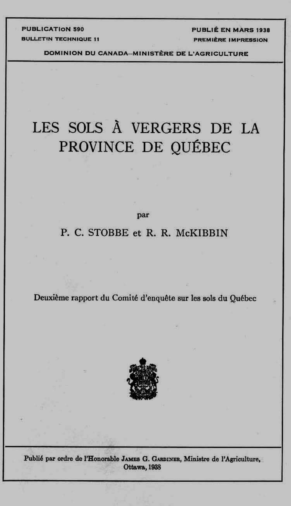
PUBLICATION 590PUBLIÉ EN MARS 1938
BULLETIN TECHNIQUE 11PREMIÈRE IMPRESSION
DOMINION DU CANADA—MINISTÈRE DE L'AGRICULTURE
LES SOLS À VERGERS DE LAPROVINCE DE QUÉBEC
par
P. C. STOBBE et R. R. McKIBBIN
Deuxième rapport du Comité d'enquête sur les sols du Québec
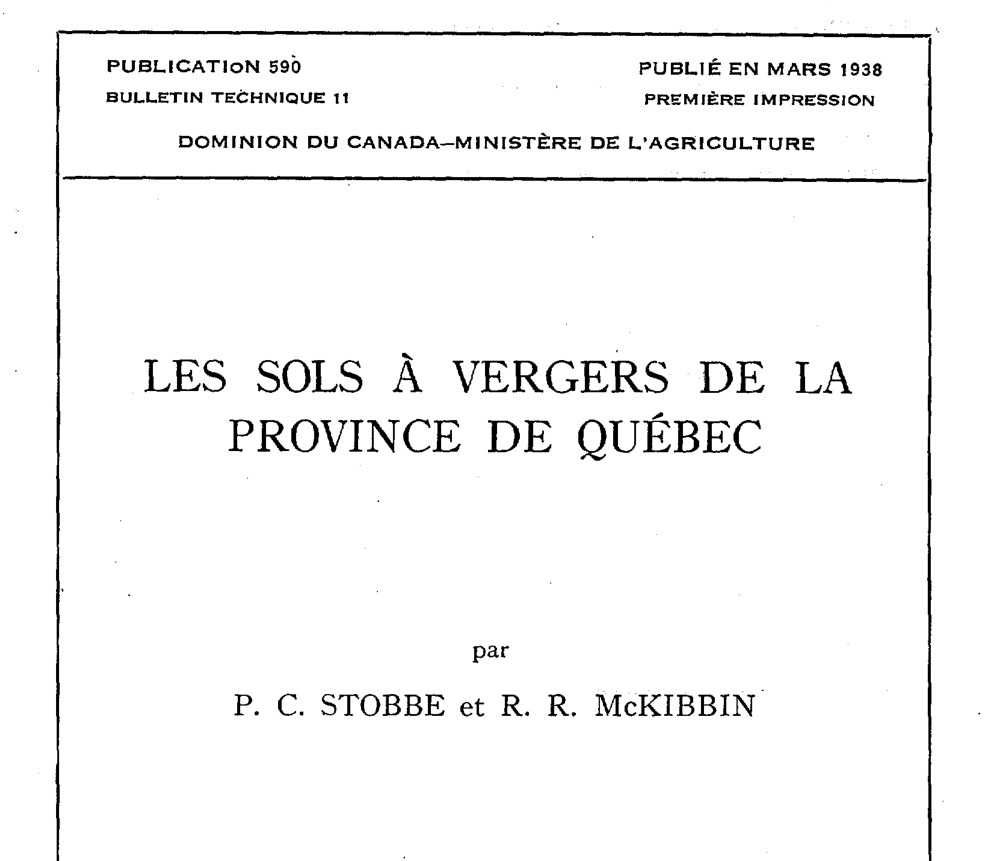
Publié par ordre de l'Honorable James G. Gardiner, Ministre de l'Agriculture,
Ottawa, 1938
LE COMITÉ D'ENQUÊTE SUR LES SOLS DU QUÉBEC
1935-36 ET 1936-37
Ministère de l'Agriculture du Québec:
M. H. C. BOISDR L.-PH. ROY (président)
M. J. H. LAVOIEM. J. E. THÉRIAULT
Ministère fédéral de l'Agriculture:
DR E. S. ARCHIBALDDR E. S. HOPKINS
M. M. B. DAVISM. L. E. WRIGHT
Collège Macdonald:
DR J. F. SNELLDR W. H. BRITAIN
DR R. R. MCKIBBIN (secrétaire)
ATTESTATIONS
Dans la conduite de cette enquête, les travaux de plein air et les analyses de laboratoire ont été effectués par les suivants: MM. B. Cann, R. Cloutier, J. Stephens, F. Stobbs, A. Thériault, en 1935 et 1936, H. Brunelle en 1935 seulement, et R. Baril en 1936 seulement.
Les auteurs désirent reconnaître l'aide et le concours précieux que leur ont prêté les suivants dans les travaux de campagne: MM. P. N. April, F. Browne, Paul Carignan, J.-Ed. Duchesne, H. Hill, R. Reid, P. O. Roy, W. Tawse, J. M. Talbot, R. Trépanier.
Nous désirons également remercier M. M. B. Davis, horticulteur du Dominion, et M. F. S. Browne, de la station expérimentale fédérale de Lennoxville, Québec, de leur collaboration bienveillante dans ces travaux et des notes qu'ils ont bien voulu rédiger sur le choix des engrais, notes qui paraissent en annexe à ce rapport. Ayant tous deux fait des essais d'engrais chimiques dans des vergers sur différents types de sols du Québec, MM. Davis et Browne ont toute la compétence voulue pour traiter cette question.
Les fonds nécessaires à la conduite de cette enquête ont été fournis par le Ministère provincial de l'Agriculture et par la Division des fermes expérimentales du Ministère fédéral de l'Agriculture. Le collège Macdonald a fourni les quartiers généraux et les moyens de laboratoire nécessaires, et il s'est chargé de la direction technique du travail.
Version française par
C. E. MORTUREUX, B.S.A.
PAGE
Le Comité d'enquête sur les sols du Québec
Attestations
Résumé
Introduction
Climat
Géologie
Topographie
Méthodes analytiques
Différenciation des sols
District d'Oka-St-Joseph
District de Franklin-Hemmingford
Districts de St-Rémi et de Châteauguay
District des collines montérégiennes
District de Frelighsburg
Ile d'Orléans et Côte de Beaupré
Ile aux Coudres
Ile aux Grues
Rive sud du bas Saint-Laurent
Discussion générale et résumé
Engrais chimiques pour les vergers du Québec
Références
RÉSUMÉ
À la requête de la Société pomologique de Québec, le Comité d’enquête sur les sols du Québec a entrepris en 1935 et en 1936 de faire l’examen des sols dont se composent les districts affectés à la culture commerciale du pommier. On trouvera dans ce rapport des cartes des sols des districts examinés.
Cette étude a révélé un grand nombre de types de sols. Les “ argiles et les terres franches de Champlain ” de la plaine du Saint-Laurent, quoique fertiles, ne conviennent pas en général pour la culture du pommier à cause des pauvres conditions d’égouttement, mais on peut obtenir de bons résultats sur ces sols en y installant un bon système de drainage.
La plupart des vergers du Québec sont établis sur des sols élevés de moraine glaciaire, qui se divisent en deux catégories: (1) sols riches en chaux, et (2) sols pauvres en chaux. Les premiers se rencontrent dans les vergers au sud et à l’ouest de Montréal. Le grès calcifère, qui est la substance formatrice et dominante de ces sols fertiles, leur fournit une grande quantité de chaux, mais en raison des pauvres conditions d’égouttement, cette chaux s’accumule dans le sous-sol formant un “ tuf ” (hard pan) calcaire. Sur les endroits mal égouttés, les arbres souffrent beaucoup de l’hiver que sur les sols bien égouttés. Le “ cœur liégeois ”, un trouble physiologique des pommes, se rencontre souvent sur les sols “ calcifères ”, mais il n’a pas été trouvé sur les sols pauvres en chaux.
Les sols pauvres en chaux ont été divisés comme suit: — (1) Graviers de terrasse, (2) sols de Sillery, et (3) sols des Appalaches. La plupart des graviers de terrasse, sur les pentes des montagnes montérégiennes, de même que ceux de Covey Hill, ont été plantés en vergers. Ces sols profonds et poreux sont très fertiles et les arbres y viennent très bien. Les sols de Sillery, à l’est et au sud de Québec, contiennent de petites quantités de calcium, de phosphore et d’azote, mais ils sont riches en potasse. Il s’est planté un grand nombre de petits vergers sur les sols de ce type. Les sols des Appalaches du district de Frelighsburg ont une tendance à former un sous-sol compact.
LES SOLS À VERGERS DE LA PROVINCE DE QUÉBEC
INTRODUCTION
Il y a toute une variété de sols dans la province de Québec qui sont aptes à la production d'un grand nombre de récoltes différentes. Les vergers de pommiers forment une partie importante de l'agriculture du Québec et ils produisent d'excellentes récoltes de fruits de haute qualité. Ces vergers de pommiers se répartissent sur une vaste région. On trouve des vergers très productifs dans la partie sud-ouest de la province, et il y a aussi quelques bons vergers de rapport dans un endroit aussi éloigné que l'Ile aux Coudres, à 250 milles au nord-est de la région de Franklin.
D'après une statistique présentée par la Société pomologique de Québec dans son rapport de 1933-34, le nombre total d'arbres dans la seule région de Montréal est d'environ 600,000, et ils couvrent plus de 14,000 acres. En 1933, un peu plus d'une moitié de ces arbres était en rapport, et la récolte s'est chiffrée par environ 320,000 barils. Le reste des arbres ne produisait pas encore à cette époque. Ces chiffres démontrent l'importance croissante de cette récolte dans la province.
Etant donné cette vaste distribution géographique et les variations climatiques qui en résultent, on peut s'attendre à des variations considérables dans les types de sols, indépendamment des différences que présentent les roches d'où ils proviennent. Nous avons constaté que les sols d'un district à vergers ne conviennent pas tous pour la plantation des vergers. A la requête de la Société pomologique de Québec, un examen des sols des différents districts à vergers a été conduit en 1935 et 1936. Cette étude portait non seulement sur la terre actuellement plantée en vergers, mais aussi sur la terre adjacente, dans chaque district particulier.
Les districts suivants ont été étudiés dans la province de Québec. La situation géographique relative de chaque district est indiquée dans la carte index ci-jointe :—
District d'Oka-St-Joseph, comté des Deux-Montagnes.
District de Franklin-Hemmingford, comté d'Huntingdon.
District de St-Rémi, comté de Napierville.
District de Châteauguay, comté de Châteauguay.
District d'Abbotsford, comté de Rouville.
District de Rougemont, comté de Rouville.
District de St-Hilaire, comté de Rouville.
District de St-Bruno, comté de Chambly.
District de St-Grégoire, comté d'Iberville.
District de l'Ile d'Orléans, comté de Montmorency.
District de l'Ile aux Coudres, comté de Charlevoix.
District de Frelighsburg, comté de Missisquoi.
Il a été fait également une reconnaissance d'autres sols à vergers dans la vallée du bas Saint-Laurent. Il n'a pas été dressé de carte de ces sols, mais ils sont analysés dans ce rapport. Les cartes présentées couvrent douze districts à vergers de la province de Québec, indiquant en détail les variations que présentent les sols.
On trouvera également dans ce rapport des données des analyses physiques et chimiques, présentées sous forme de tableaux.
Cette étude a beaucoup enrichi la somme de connaissances que nous possédons sur les conditions présentées par les sols de la province de Québec et spécialement dans les districts à vergers, et ces connaissances devraient être très utiles pour les pomiculteurs. Elles devraient servir de guide relativement aux pratiques de fertilisation qui peuvent être employées pour maintenir et augmenter la fertilité de ces sols, ainsi que pour l'établissement judicieux des vergers de pommiers que l'on plantera à l'avenir dans la province.
CLIMAT
La province de Québec a un climat rigoureux, spécialement dans les districts de l'Est. Ce fait ressort du tableau 1, donnant les observations météorologiques pour la ville de Montréal, qui est à peu près le centre des districts de l'Ouest étudiés, et pour la ville de Québec, qui est à proximité des districts de l'Est.
À Québec, la température moyenne annuelle est d'environ 3 degrés plus basse qu'à Montréal, tandis que la condensation moyenne annuelle (pluie et neige) est à peu près la même. Le nombre total annuel d'heures de soleil est plus grand à Montréal qu'à Québec, mais il est à noter qu'en hiver le nombre d'heures de soleil est plus considérable à Québec qu'à Montréal. Ce fait semblerait indiquer que la transition de l'hiver à l'été est plus graduelle à Québec qu'à Montréal. C'est là un facteur important dans la culture des arbres fruitiers, car la plupart des avaries causées aux arbres avant l'hiver se produisent vers la fin de l'automne ou au commencement du printemps.
Quoique rigoureux, le climat de la province paraît favoriser la production de pommiers rustiques, et l'on trouve dans la province un grand nombre de vergers établis depuis longtemps et vigoureux. Les observations qui ont été faites montrent que l'hiver exerce des ravages tous les quinze ou dix-huit ans, ce qui élimine beaucoup de sujets des variétés moins rustiques. La dernière année de ce genre a été celle de 1933-34. A cette époque, la plupart des pommiers de Fameuses, une variété moins rustique, ont été détruits dans le district de Montréal (sud-ouest du Québec) tandis qu'ils ont paru résister assez bien dans le district du bas Saint-Laurent. En raison de la grande masse d'eau du fleuve Saint-Laurent, les changements d'un extrême à l'autre sont naturellement plus graduels dans le voisinage immédiat du fleuve qu'ailleurs, et la plupart des vergers du bas Saint-Laurent se trouvent près du fleuve.
On voit également au tableau 1 qu'il y a en moyenne beaucoup plus de bourrasques à Québec qu'à Montréal. Les vents les plus violents, du nord-est, ont une plus grande vélocité à Québec qu'à Montréal. C'est là un facteur important que l'on doit prendre en considération et des mesures doivent être prises pour protéger les vergers commerciaux de la vallée du bas Saint-Laurent. On peut faire beaucoup sous ce rapport par un bon placement de brise-vent.
On sait que le climat exerce une très grande influence sur le développement du sol. On peut établir des zones bien nettes de sols, basées sur les variations de climat, sur une grande étendue de régions géographiques. Il existe des variations significatives dans les conditions de climat dans les régions étudiées dans ce rapport, mais on n'a pu encore, pour beaucoup de centres de culture du pommier, obtenir des données météorologiques exactes. Il est probable que les variations de sol dans ces districts sont dues en grande partie à la différence du climat. Ceci se voit surtout lorsque les variations de climat sont causées par des différences appréciables d'élévation.
TABLEAU 1.—TEMPÉRATURE, CONDENSATION ATMOSPHÉRIQUE, HEURES DE SOLEIL ET VENT
(Moyenne de 40 ans sauf en cas d'indication contraire)
Mois
Température, °F.
Condensation en pouces
Moyenne d'heures de soleil par mois*
Nombre moyen de jours tout à fait couverts†
Nombre moyen de bourras- ques
Vélocité moyenne par heure
Direction générale
Vent le plus fort
Moyen- ne quoti- dienne
Moyen- ne quoti- dienne Max.
Moyen- ne quoti- dienne Min.
La plus élevée
La plus basse
Écart moyen quoti- dien
Moyennes
Extrêmes
Milles p. hre
Direc- tion
Pluie
Neige
Total
Le plus grand
Le moindre
MONTRÉAL, QUÉ.
Janvier
13·3
21·1
5·6
53
-27
15·5
0·98
28·4
3·82
6·84
1·74
77
12
6
15·5
SO
56
SO
Février
13·9
21·3
6·5
47
-27
14·8
0·70
27·5
3·45
6·22
1·03
102
9
7
16·7
SO
66
NO
Mars
25·8
32·7
18·9
68
-15
13·8
1·50
19·7
3·47
6·60
0·81
149
6
8
16·7
SO
60
SE, SO
Avril
41·6
49·5
33·7
83
2
15·8
2·05
5·3
2·58
6·10
0·61
175
6
4
14·9
S
53
SO
Mai
55·3
64·3
46·3
89
23
18·0
2·98
.
2·98
5·95
0·11
208
4
2
12·8
S
49
O
Juin
64·7
73·4
56·0
92
38
17·4
3·49
.
3·49
8·62
0·90
222
2
2
11·6
SO
48
SO, NO
Juillet
69·6
78·1
61·2
95
46
16·9
3·47
.
3·47
7·72
0·96
245
1
1
11·3
O
42
SO
Août
66·5
74·6
58·4
96
43
16·2
3·75
.
3·75
8·08
1·23
221
2
1
10·6
SO
36
O
Septembre
58·4
66·1
50·7
90
32
15·4
3·61
.
3·61
7·83
1·03
174
4
2
11·7
SO
38
SE, NO
Octobre
46·6
53·4
39·9
80
22
13·5
3·20
0·7
3·27
7·77
0·42
125
6
5
12·9
SO
45
NO
Novembre
33·4
39·1
27·7
68
0
11·4
2·22
12·9
3·51
7·65
1·44
70
11
2
14·6
SO
58
O
Décembre
19·8
26·3
13·3
59
-25
13·0
1·41
23·5
3·76
8·72
1·12
61
14
5
14·0
SO
50
NO
Année
42·4
50·0
34·8
96
-27
15·2
29·36
118·0
41·10
52·22
29·23
1,829
77
43
13·6
SO
66
NO
QUÉBEC, QUÉ.
Janvier
9·8
17·9
1·8
51
-34
16·1
0·69
28·8
3·57
6·17
1·10
84
11
9
15·0
SO
62
NE
Février
11·0
19·1
3·0
49
-32
16·1
0·57
25·0
3·07
6·22
1·16
104
8
8
16·1
SO
69
NE
Mars
22·9
30·9
14·9
64
-22
16·0
1·20
18·8
3·08
5·68
0·42
149
7
8
15·3
SO
72
NE
Avril
36·8
44·9
28·6
80
0
16·3
1·78
6·2
2·40
6·49
0·71
168
5
7
14·4
NE
54
NE
Mai
51·2
60·7
41·7
91
21
19·0
3·18
0·5
3·23
6·93
0·27
197
4
6
14·4
NE
52
O
Juin
61·2
71·1
51·4
92
32
19·7
4·10
.
4·10
9·23
1·39
208
4
4
13·2
SE
46
NE, SO
Juillet
65·6
74·0
57·1
96
39
16·9
4·12
.
4·12
8·14
0·72
224
2
2
11·6
S
43
NE, SO
Août
63·3
72·1
54·5
97
37
17·6
3·98
.
3·98
9·58
1·35
211
2
1
10·7
SO
39
NE, SO
Septembre
55·4
63·8
47·0
88
27
16·8
4·03
.
4·03
9·43
0·84
159
5
3
11·5
SO
42
NE
Octobre
43·8
50·7
36·8
77
14
13·9
3·32
1·2
3·33
6·99
0·93
121
8
4
12·4
SO
66
NE
Novembre
30·0
35·7
24·4
66
-10
11·3
1·83
12·8
3·11
6·37
1·16
70
10
3
14·0
SO
58
NE
Décembre
17·0
25·0
9·1
54
-32
15·9
0·83
22·9
3·12
5·93
1·13
70
13
5
13·9
SO
88
NE
Année
39·0
47·2
30·9
97
-34
16·3
29·63
116·2
41·25
53·79
32·12
1,765
79
63
13·5
S
72
NE
* Moyenne de 44 ans. † Moyenne de 28 ans. †† Moyenne de 24 ans. ††† Moyenne de 29 ans.
8
GÉOLOGIE
Nous avons vu que les différences dans les conditions de climat comme la condensation et la température, affectent les procédés de développement du sol. Cependant, dans les districts dont il est question dans ces pages, il est rare que les variations de climat soient assez importantes pour causer des différences prononcées dans les types de sols qui ont été formés.
Les différences profondes dans les types de sols sont dues aux causes suivantes : Premièrement, aux variations dans les matières minérales fondamentales dont les sols sont formés; deuxièmement, au mode de déposition des roches et des matériaux; et, troisièmement, au relief topographique et à l'égouttement.
Si l'on considère les substances minérales de formation des différents types de sols, il est à noter que la plus grande partie de la région agricole du Québec a été soumise à l'action des glaciers, qui a trituré et modifié profondément les sols de la province. Sur une grande partie de la région de Montréal, qui se trouve dans les terres basses des vallées de l'Outaouais, du Richelieu et du milieu du Saint-Laurent, la terre a été recouverte d'immenses masses de glace pendant la période glaciaire. Pendant et après le retrait des glaciers, l'argile "Leda" ou "Champlain" et le sable "Saxicava" ont été déposés par les eaux salines de la mer de Champlain ainsi que par les eaux fraîches ou salines des lacs et des rivières.
Ces argiles et ces sables proviennent principalement des rocs paléozoïques pulvérisés par l'action des glaciers, et en partie des rocs précambriens du "bouc-lier" canadien et de la pierre à chaux archéenne. Les argiles contiennent donc en général des quantités considérables de pierre à chaux broyée et sont bien pourvues de calcium.
Les dépôts de sable se rencontrent généralement à l'endroit où la plaine rencontre le pied des collines; ils forment les grèves inférieures de la mer de Champlain qui a succédé à la période glaciaire. Ces changements des argiles des basses terres aux sables et aux terres silico-argileuses, pierreuses et graveleuses des hautes terres, se voient très clairement dans les districts des collines montérégiennes. La profondeur de ces gisements de sable varie de deux à plus de vingt pieds, et ils reposent généralement sur de l'argile. Souvent, et spécialement dans les districts à l'ouest de Montréal, le sable est une substance morainique, et alors, sa texture est mélangée et les roches dominantes laissées par la glace ont grandement influencé le sol.
Sur la terre basse du district d'Oka-Saint-Joseph, les grès Potsdam et calcaires sont les roches et les pierres dominantes laissées par les glaciers. Les "Deux-Montagnes", sur les pentes desquelles se trouvent la plupart des vergers de ce district, sont principalement de formation laurentienne. Les rocs et les pierres diorites, diabases et syénites y abondent. Dans certains endroits, la pierre à chaux cristalline très fragmentée et émiettée par l'action des agents atmosphériques, domine. Les pierres et les roches sont mélangées avec du gravier anguleux et arrondi par l'eau qui est souvent de nature calcaire. Le gravier a été déposé en grèves par la mer de Champlain lorsque celle-ci était à un haut niveau. On y trouve très souvent de nombreux coquillages de mer et d'eau douce, dans un état de parfaite préservation. Ces coquillages révèlent clairement l'origine marine des matériaux de ce sol. La nature calcaire des substances minérales formatrices du sol et les coquillages ont joué un grand rôle dominant dans les phases de la formation des sols dans ce district. Même les grèves de sable ouvert et poreux des basses élévations, qui sont généralement sujettes au lessivage et tendent par conséquent à former des sols acides, sont grandement affectées par l'influence de cette concentration de chaux.
Le secteur à l'est du district de Franklin-Hemmingford est nettement de formation calcifère. Les sols de ce secteur sont riches en chaux, de même que les types de sols du district d'Oka-Saint-Joseph. Dans le secteur de l'ouest, la
formation géologique avec ses affleurements de roc se compose principalement de grès de Potsdam. Il en résulte que les sols sont acides et diffèrent beaucoup des sols du secteur de l'est. Le changement aux sols acides commence à deux milles à l'ouest du village de Hemmingford.
Les sols sédimentaires des districts de Châteauguay et Saint-Rémi reposent sur des formations calcifères et Chazy. Les rocs et les pierres de ces formations se rencontrent sur les croupes ou buttes morainiques à douces ondulations de ces districts. Il en résulte que les sols sont riches en chaux, et ils sont semblables sous ce rapport à ceux des districts de Hemmingford et de Oka-Saint-Joseph.
Les collines montérégiennes sont des montagnes isolées, rompant l'expansion uniforme du lit de l'ancienne mer de Champlain. La ligne de faille du Saint-Laurent et de la mer de Champlain va approximativement dans la direction nord-sud, entre Rougemont et Abbotsford. La terre plate à l'ouest de cette ligne repose sur une formation (Lorraine) de la rivière Hudson de la période cambro-silurienne. Entre cette ligne de faille et Abbotsford la formation sous-jacente se compose d'ardoises noires de Farnham et de pierre à chaux, tandis qu'à l'est d'Abbotsford, elle se compose principalement d'ardoises de Sillery, de grès et de conglomérats. La formation rocheuse sur laquelle repose la terre plate de la plaine est généralement à une grande profondeur et ne remonte pas dans les profils du sol.
Les collines ou montagnes sont d'origine volcanique et se présentent sous forme de pics arrondis qui s'élèvent bien au-dessus de la plaine environnante. La hauteur des montagnes au-dessus du niveau moyen de la mer est la suivante dans les régions étudiées:
District
Montagne
Hauteur en pieds
Abbotsford. . . . . . . . . . . . . . . . . .
Yamaska. . . . . . . . . . . . . . . . . .
1,470
Rougemont. . . . . . . . . . . . . . . . . .
Rougemont. . . . . . . . . . . . . . . . . .
1,250
Saint-Hilaire. . . . . . . . . . . . . . . .
Belœil . . . . . . . . . . . . . . . . . .
1,437
Saint-Bruno. . . . . . . . . . . . . . . . .
Saint-Bruno. . . . . . . . . . . . . . . . .
715
Saint-Grégoire. . . . . . . . . . . . . . . .
Mt. Johnson. . . . . . . . . . . . . . . . .
875
L'élévation des terres basses environnantes varie de 100 à 150 pieds au-dessus du niveau moyen de la mer.
La masse intérieure des montagnes se compose principalement de rocs ignés parmi lesquels les syénites et les essexites dominent probablement. Sur les flancs des montagnes, à une hauteur de 250 à 500 pieds, on voit les anciennes grèves de gravier de la mer de Champlain. Ces graviers sont généralement arrondis par l'eau et partiellement anguleux, ils sont mélangés avec des roches ignées. On trouve de semblables grèves de graviers à la même hauteur dans le secteur ouest du district de Franklin-Hemmingford. Les types de sols sur ces grèves de graviers ont invariablement une réaction acide et nous n'y avons pu trouver de coquillages. Sous ce rapport le gravier montérégien diffère beaucoup du gravier riche en chaux du district d'Oka-Saint-Joseph.
Les pentes inférieures des collines montérégiennes sont d'anciennes grèves de sable de la mer de Champlain. Le lessivage de ces sols sablonneux n'a pas été restreint, comme dans le district d'Oka-Saint-Joseph, par de grandes quantités de chaux dans l'eau d'égouttement.
Le district de Frelighsburg est au pied des monts Appalaches, et ses roches de fondation appartiennent principalement aux périodes précambrienne et cambrienne. Les micaschistes, schistes chloriteux, gneiss, diorites, quartzites et grès ferrugineux sont des roches communes dans cette région. Les glaciations successives ont grandement affecté les matériaux de formation. La matière minérale charriée par les glaciers et déposée sous forme de moraine a été tirée en grande partie du roc sous-jacent; dans certains cas, ces matériaux ont été transportés sur de longues distances. Le roc indigène exposé se désagrège rapidement et les procédés de la formation du sol sont visibles.
Montagne de Saint-Hilaire. Flanc de la montagne, vu de près; au premier plan, verger sur gravier de terrasse Champlain. Juillet 1935.
Carrière de gravier, sur gravier de terrasse Champlain à Saint-Hilaire; grosses pierres visibles dans le profil. A noter le grand développement des racines. Juillet 1935.
Dans les districts examinés à l'est de Québec, c'est-à-dire l'Ile d'Orléans, l'Ile aux Coudres, l'Ile aux Grues et le long de la rive sud du Saint-Laurent, la formation géologique de Sillery est celle qui domine. Ici, presque partout le sol a été formé de la roche tendre in situ, et le roc exposé aux intempéries n'est recouvert que d'une mince couche de matériaux. Dans bien des cas, nous avons constaté que le sous-sol contenait jusqu'à 90 pour cent de gravier schisteux anguleux provenant de la désagrégation du roc de formation.
Sur les terres basses le long des rives du fleuve, le sol a été déposé par l'eau. L'action des vagues a désagrégé les roches friables de Sillery et redéposé les fragments graveleux en grèves le long des rives du fleuve. Ce phénomène est très visible sur les rivages de l'Ile aux Coudres, de l'Ile aux Grues et sur la rive sud du Saint-Laurent.
La faille Saint-Laurent-Champlain passe à travers le côté nord de l'Ile d'Orléans et le divise en deux parties. Sillery est la formation géologique dominante au sud de cette ligne, tandis qu'une bande étroite le long de la rive nord de l'île et de la côte de Beaupré, repose sur des formations d'Utica et de Trenton. Dans bien des endroits les affleurements de l'assise rocheuse sont très visibles et le sol formé est très mince. Les sols le long de la côte diffèrent beaucoup de ceux de la formation de Sillery. Ils contiennent plus de chaux et leur réaction est neutre ou légèrement alcaline, tandis que les sols de Sillery sont nettement acides. Les sols de Beaupré ont également une texture beaucoup plus fine et ils sont plus fertiles que ceux de Sillery.
La côte de Beaupré est bordée au nord et à l'est par les collines des Laurentides avec leurs roches ignées caractéristiques. Les sols de formation laurentienne diffèrent beaucoup de ceux que l'on voit le long de la côte de Beaupré. Ces sols n'ont pas été étudiés à cause de leur faible valeur agricole et aussi à cause du fait que le pays est montueux.
On voit par ce qui précède que les sols examinés peuvent se grouper en quatre catégories bien nettes d'après les matériaux géologiques dont ils proviennent; (1) Les sols très calcaires des districts d'Oka-Saint-Joseph, d'Hemmingford, de Saint-Rémi et de Châteauguay; (2) les graviers de Champlain et les districts des collines montérégiennes; (3) les sols appalachiens du district de Frelinghsburg; et (4) les sols de Sillery de la vallée du bas Saint-Laurent. Nous traitons plus loin en détail des caractéristiques des types de sols développés sur ces différents matériaux de formation.
TOPOGRAPHIE
La topographie du sol est un facteur important que l'on ne peut négliger dans une étude des types de sols. Le relief topographique et l'égouttement dans des conditions géologiques et climatériques uniformes d'une certaine localité affectent plus que tout autre facteur les procédés de formation du sol. Le « climat du sol » (humidité et température) et l'activité microbiologique dépendent dans une large mesure du relief topographique. L'eau d'égouttement qui se rassemble dans les terres basses mal égouttées est souvent saturée d'éléments de base, qui ont été enlevés des terres adjacentes plus hautes. La composition chimique d'un sol mal égoutté diffère donc souvent beaucoup de celle des sols voisins bien égouttés. De plus, les conditions physiques du profil, comme la texture, la structure et le degré de compacité, sont largement modifiées par les conditions de drainage.
Les investigateurs insistent généralement sur le fait que les sols ne devraient pas être classés et indexés d'après leur position topographique, mais il n'en est pas moins vrai que la position topographique et les conditions subséquentes d'égouttement affectent grandement le sol formé. Ce n'est que dans des conditions de bon égouttement que des sols normaux peuvent se développer.
Sur les terres plates de faible élévation, dans les districts des collines montérégiennes et dans ceux de Châteauguay et de Saint-Rémi, les sols présentent souvent sou-
vent les caractères de sols mal égouttés, à cause du manque de pente suffisante pour pourvoir à l'enlèvement de l'eau de surface. Dans certains districts, l'eau de surface se rassemble dans les endroits bas et des sols mal égouttés s'y développent. Le mauvais égouttement des sols est souvent causé par une infiltration d'eau souterraine dans les endroits où, d'après la topographie, on croirait trouver un sol bien égoutté.
Les caractères topographiques accidentés font que de grandes étendues de terre sont impropres à la culture. Ceci s'applique aux collines montérégiennes, aux Deux-Montagnes dans le district d'Oka-Saint-Joseph, à Covey Hill dans le district de Franklin-Hemmingford, et le long de la côte de Beaupré et de l'Ile d'Orléans.
MÉTHODES ANALYTIQUES
Nous avons recueilli au cours de notre enquête des échantillons de sols des types représentatifs. Le nombre d'échantillons prélevés sur chaque profil dépend du nombre d'horizons compris dans le profil. Les profondeurs des horizons varient avec le type de sol. Les variations des types mêmes sont indiquées dans les figures 1 à 5.
Dans les analyses chimiques des échantillons de sol, nous avons employé autant que possible les méthodes régulières, que nous mentionnons ici sommairement.
Préparation de l'échantillon.—Les échantillons ont été préparés de la façon indiquée dans “A.O.A.C. Mehods of Analysis”, 3e édition, 1930, I, 2 (a) et (b), p. 1.
Humidité.—Ibid., I, 3, p. 1.
Perte sur incinération.—Incinérer le sol jusqu'à ce qu'il soit complètement rouge, mais pas à plus de 600°C., jusqu'à ce que toute la matière organique soit détruite.
Besoins en chaux, de Jones.—Conformément à la description faite par Carleton, E. A., 1923, dans “Soil Science”, 16, p. 79-90.
Valeur du pH.—La concentration des ions d'hydrogène a été déterminée électrométriquement, au moyen d'électrodes de platine noirci en spirale et en faisant passer de l'hydrogène à travers la suspension de sol et d'eau.
Silice.—Fusion de Na2CO3 ainsi qu'il est indiqué dans “A.O.A.C. Methods of Analysis”, 1930, I, 14 et 16, p. 5.
Oxydes de fer, d'aluminium et de titanium.—Ibid., I, 17 p. 6. Les oxydes de manganèse et de phosphore sont soustraits des oxydes totaux.
Calcium.—Ibid., I, 19. p. 6.
Magnesium.—Ibid., XII, 13, p. 106.
Potassium.—Ibid., I, 31, p. 10, et II, 43 (a).
Manganèse.—Méthode de bismuthate; voir “Quantitative Agricultural Analysis”.
Mahin, E. G., et Carr, R. N., 1923, p. 261.
Phosphore.—Fusion de nitrate de magnésium; voir Swanson C. O. et Latshaw, W. L., 1922; “Soil Science”, 14:6.
Soufre.—Ibid.
Azote.—Méthode Gunning-Hibbard. “A.O.A.C. Methods of Analysis” 1930, I, 12, p. 5.
Carbone organique.—Voir “Dry Combustion Method for Simultaneous Determination of Soil Organic Matter and Organic Carbon”, par J. W. Reid, Journ. Indus. & Eng. Chem. 1921, 13, 305.
Analyse mécanique.—La méthode hydrométrique a été employée, en prenant le silicate de soude comme l'agent disperseur, conformément à la description de G. J. Bouyoucos. Voir “Soil Science” 1934, Vol. 38, p. 335. Les fragments de roc qui ne passent pas à travers le tamis à mailles de 1 mm. sont considérés comme du gravier.
DIFFÉRENCIATION DES SOLS
Dans la différenciation des types de sols, il faut prendre en considération tous les facteurs déjà passés en revue, géologie, climat, topographie et drainage, et beaucoup d'autres comme la faune et la flore. Les sols ne se composent pas seulement de fragments de minéraux inorganiques de différentes dimensions, mais aussi d'organismes vivants comme les bactéries, les champignons, les moisissures, les protozoaires, les vers, les racines des plantes, etc., ainsi que de végétaux morts et de tissus animaux en différents degrés de décomposition. La quantité de matériaux organiques et les phases respectives de décomposition auxquelles on les trouve dans nos conditions boréales sont de puissants facteurs dans le procédé de formation des sols.
Il convient de noter que beaucoup de nos sols du Québec sont jeunes au point de vue géologique et, par conséquent, encore informes. Quoi qu'il en soit, les effets de beaucoup des facteurs que nous venons de mentionner se retrouvent dans le profil des sols et dans la composition chimique des différents types de sols.
Les types de sols ont été établis et classés d'après le profil de leur composition chimique. Le précis suivant donne un résumé sommaire des types de sols rencontrés et du plan général employé dans leur classification. Les subdivisions “Sols mal égouttés” et “Sols bien égouttés” n'ont pas été faites d'après la position topographique du sol, mais plutôt d'après les caractéristiques du profil qui se sont développées dans des conditions pauvres ou bonnes d'égouttement.
Notre connaissance actuelle de quelques-uns des types de sols en question est assez limitée et les classifications ont été faites d'après ce qui nous paraissait raisonnable à la lumière de nos connaissances actuelles. Il est possible que l'accumulation de renseignements sur les différents types de sols puisse nécessiter quelques changements secondaires et l'abandon de quelques-unes des distinctions moins importantes entre les différentes phases des types de sols.
Suivent une discussion détaillée des différents types de sols et un exposé des différents districts étudiés.
Base de différenciation employée dans l'appréciation des sols de vergers dans l'enquête sur les sols du Québec
A. Sols sédimentaires (de rivière, de lac ou de mer)
I. Sols riches en chaux
1. Argiles et terres franches de Champlain
(a) Sols bien égouttés
Argilo-sableux de Champlain.................... “Cn”
Argile de Champlain............................ “Cn C”
Sablo-argileux de Champlain.................... “Cn L”
Sablo-argileux de Châteauguy.................... “Cy”
2. Trenton et Utica
(a) Sols bien égouttés
Sablo-argileux de Beaupré...........“ B ”
Argilo-sableux de Montmorency........“ M ”
(b) Sols mal égouttés
Sablo-argileux de Beaupré, phase de pauvre égouttement ................“ Bi ”
Argilo-sableux de Montmorency, phase de pauvre égouttement..............“ Mi ”
Sablo-argileux d'Orléans ................“ O ”
II. Sols pauvres en chaux
1. Sols de grève sablonneux
(a) Sols bien égouttés
Podsol sablonneux ....................“ sa ”
Sable de l'Outaouais...................“ Ot ”
Sablo-argileux de Franklin.............“ F ”
(b) Sols mal égouttés
Podsol sablonneux, pauvre égouttement.“ sa i ”
Sablo-argileux de Franklin, pauvre égouttement .......................“ Fi ”
Tourbe noire et grise
B. Sols morainiques glaciaires
I. Sols riches en chaux
1. Moraine calcifère
(a) Sols bien égouttés
Franc morainique calcifère...........“ C ”
Franc morainique calcifère, phase de gravier profond ....................“ Cg ”
Franc morainique calcifère, phase sablonneuse ........................“ Csa ”
Franc morainique calcifère, phase coquilière .............................“ Cs ”
(b) Sols mal égouttés
Franc morainique calcifère, phase de pauvre égouttement ..............“ Ci ”
Franc morainique calcifère, sous-sol compact...........................“ Cco ”
II. Sols pauvres en chaux
1. Sols de Sillery
(a) Sols bien égouttés
Gravelo-argileux de Sillery..........“ S ”
Gravelo-argileux de Sillery, phase sablonneuse .......................“ S sa ”
Sol du fleuve Saint-Laurent..........“ L ”
(b) Sols mal égouttés
Gravelo-argileux de Sillery, pauvre égouttement .......................“ Si ”
2. Graviers de terrasse
(a) Sols bien égouttés
Gravier de terrasse de Champlain......" T "
Gravier de terrasse de Champlain, phase sablonneuse" T sa "
Gravelo-argileux montérégien" Mg "
(b) Sols mal égouttés
Gravelo-argileux montérégien, phase de pauvre égouttement" Mgi "
3. Sols des Appalaches
(a) Sols bien égouttés
Gravelo-argileux de Brome" Bg "
Franc de Brome
(b) Sols mal égouttés
Franc mince de Brome" B sh "
LE DISTRICT D'OKA-SAINT-JOSEPH
Nous avons vu que le district d'Oka-Saint-Joseph s'étend à l'ouest de l'île de Montréal dans le comté des Deux-Montagnes. La superficie totale de terre examinée dans ce district est d'environ 42 milles carrés. Ses limites ont été déterminées par l'étendue en vergers. Tous les vergers commerciaux de ce district étaient compris dans l'étendue examinée.
Ce district est depuis longtemps connu dans la province de Québec pour sa production de pommes. Un rapport publié par la Société pomologique de Québec nous apprend qu'en 1933 le nombre total de pommiers dans ce district était d'environ 62,000, couvrant une superficie d'environ 1,200 acres. La plus grande concentration de vergers de pommiers se trouve dans le voisinage du village de Saint-Joseph du Lac. La plupart des vergers ne sont pas très grands; ils comptent de 200 à 400 arbres chacun; il y a cependant quelques grands vergers de rapport. Le plus grand est celui de la ferme de Saint-Sulpice, qui compte 4,000 pommiers.
La dimension des arbres et la haute qualité des fruits produits sont la preuve que le climat et au moins quelques-uns des sols de cette région conviennent admirablement pour la culture du pommier.
Nous avons déjà vu que le district d'Oka-Saint-Joseph du Lac se trouve dans une région riche en chaux; la roche mère est principalement du grès calcifère et de la pierre à chaux cristalline (archéenne) mélangés avec des roches ignées. Ces dernières sont spécialement nombreuses dans la partie sud et sud-ouest du district. Sur le côté extrême nord, le grès de Potsdam est la formation sous-jacente géologique dominante.
En raison des minéraux de formation, les sols de ce district ont généralement une réaction de neutre à alcaline. Dans certains cas où le sol permet une libre infiltration d'eau, comme dans les grèves de sable, la chaux libre a été entraînée dans les profondeurs, et en raison d'un lessivage continu, ces sols ont une réaction acide dans les couches de surface seulement.
Les sols de ce district se divisent en deux catégories distinctes: (a) ceux des plaines, qui sont principalement d'origine sédimentaire et que l'on trouve à une altitude de 200 pieds ou moins au-dessus du niveau de la mer; et (b) les sols morainiques que l'on trouve sur les pentes des Deux-Montagnes et les buttes ou croupes morainiques.
En général, le premier groupe n'est pas aussi bien égoutté et les sols ont une texture plus fine que ceux du deuxième groupe. Le membre le plus remarquable du premier groupe est le sol argilo-sableux de Champlain. Il a une réaction légèrement acide à neutre à la surface et alcaline dans le sous-sol. Pour plus ample description, voir le profil "Cn" dans la figure 1.
TABLEAU 2.—COMPOSITION CHIMIQUE ET PHYSIQUE DES ÉCHANTILLONS DE SOL DU DISTRICT D'OKA-ST-JOSEPH
Echantillon N°
Analyse chimique (Après séchage au four)
Analyse physique
Huminosité hygroscopique %
Perte par incinération %
Valeur en pH
Besoins en chaux liv. de CaO par acre
CaO %
MgO %
Mn₂O₄ %
K₂O %
SiO₂ %
Fe₂O₃+Al₂O₃+Ti₂O₃ %
P₂O₅ %
SO₃ %
N₂ %
C organique %
Gravier > 1 mm. %
Sable 1-0.05 mm. %
Limon 0.05-0.005 mm. %
Argile totale 0.005-0 mm. %
Argile fine 0.002-0 mm. %
Terre franche normale de moraine calcifère
31 A...... B...... C......
3.36 1.77 0.97
13.77 7.51 9.09
7.53 7.70 7.82
220 0 0
3.20 6.19 7.71
1.67 1.60 1.72
0.187 0.200 0.189
2.74 2.69 2.59
59.2 59.8 52.4
17.6 19.1 19.2
0.392 0.386 0.394
0.238 0.122 0.101
0.37 0.11 0.04
4.50 0.97 0.54
19.0 20.0 17.0
46.1 54.6 48.1
25.5 16.6 23.6
9.4 8.8 11.3
7.1 6.6 8.9
37 A...... B...... C......
2.10 1.22 0.68
9.54 4.35 11.37
7.29 7.25 8.36
952 0 0
2.46 7.01 7.98
1.07 1.02 1.26
0.147 0.082 0.068
2.48 2.95 2.14
67.9 69.3 56.7
19.8 20.3 20.0
0.296 0.284 0.212
0.179 0.086 0.058
0.26 0.05 0.04
3.16 0.69 0.36
25.5 23.0 21.0
40.2 35.3 30.5
18.8 19.5 24.2
15.5 22.2 24.3
11.5 18.8 19.6
139 A...... B...... C......
1.28 0.20 0.16
7.75 1.27 0.62
6.90 7.80 8.52
0 0 0
2.48 2.83 3.15
1.19 1.14 1.36
0.111 0.043 0.056
2.14 2.47 2.09
64.2 74.2 73.4
19.6 18.7 18.3
0.256 0.170 0.103
0.192 0.197 0.093
0.30 0.02 0.01
3.24 0.20 0.17
25.0 2.5 12.0
50.0 79.5 72.5
13.1 12.5 9.7
11.1 5.5 5.6
8.9 3.8 4.0
10 A...... B...... C......
1.79 1.51 0.93
7.83 5.46 7.29
6.85 7.35 8.10
600 273 273
2.72 4.23 6.05
2.63 2.25 1.74
0.090 0.100 0.150
3.22 3.12 2.84
65.0 62.8 53.8
20.0 19.1 30.6
0.162 0.145 0.200
0.177 0.132 0.132
0.22 0.11 0.04
2.50 1.25 0.32
20.0 25.0 7.0
54.5 32.6 60.0
15.2 27.8 20.2
10.3 14.6 12.8
7.8 12.0 9.9
Terre franche de moraine calcifère, phase sablonneuse
3 A...... B...... C......
1.87 1.83 0.70
4.76 4.84 1.86
5.70 80 •20
1,225 1,225 920
2.86 2.50 2.42
2.27 2.92 2.13
0.090 0.090 0.030
2.51 2.89 2.71
64.5 66.1 71.3
17.7 17.5 18.9
0.261 0.181 0.115
0.198 0.099 0.077
0.25 0.10 0.03
3.06 1.26 0.39
14.0 27.0 14.0
58.0 52.6 74.0
21.2 13.1 7.3
6.8 7.3 4.7
5.1 5.8 3.8
Sol argilo-sableux de Champlain
36 A...... B......
5.69 3.86
20.14 8.57
6.53 6.72
1,098 366
2.88 2.65
2.02 2.15
0.097 0.088
2.09 2.52
52.5 61.0
25.6 30.0
0.254 0.135
0.222 0.098
0.44 0.07
6.02 1.07
0 0
16.4 7.6
38.4 27.0
45.2 65.4
37.2 58.0
1 A...... B......
5.95 3.48
19.40 7.28
6.30 7.45
1,225 720
2.57 2.38
3.11 2.76
0.078 0.048
2.68 2.19
50.3 60.9
20.3 23.5
0.371 0.207
0.353 0.098
0.53 0.06
5.20 0.58
0 0
27.4 15.4
30.0 9.0
42.6 75.6
34.6 59.6
5 A...... B...... C......
3.79 4.47 4.99
13.99 10.35 10.10
5.95 6.60 7.10
3,850 1,960 720
2.13 2.29 2.77
2.81 2.74 2.35
0.320 0.070 0.140
2.59 2.57 3.19
60.3 60.1 63.1
20.9 22.9 21.3
0.190 0.103 0.115
0.137 0.126 0.157
0.29 0.06 0.04
3.69 0.65 0.43
35.0 0 7.0
26.0 24.0 14.3
16.9 17.0 4.7
22.1 59.0 74.0
16.2 53.0 60.0
Sablo-argileux d'Oka
7 A...... B......
2.16 1.04
10.22 2.49
6.35 7.55
720 300
3.48 2.89
2.45 2.31
0.290 0.060
1.95 2.36
65.3 66.9
16.6 25.7
0.250 0.147
0.189 0.073
0.30 0.03
3.36 0.37
1.0 0
57.7 46.4
33.2 46.0
8.1 7.6
5.7 6.6
Podsol sablonneux
138 A...... B...... C......
0.81 0.19 0.19
4.07 0.77 1.73
5.53 7.04 7.79
732 0 0
2.48 2.88 4.40
0.90 1.08 0.88
0.045 0.042 0.055
1.85 1.94 1.99
73.2 75.2 70.2
17.2 17.3 17.5
0.210 0.127 0.098
0.188 0.128 0.118
0.17 0.03 0.02
2.36 0.31 0.30
7.0 6.0 28.0
80.0 90.0 66.3
10.4 3.7 5.1
2.4 0.3 0.6
1.8 0 0.3
9 A0......
7.41
49.97
5.00
8,180
3.23
0.42
0.030
1.37
41.4
10.7
0.176
0.437
1.30
23.90
6.0
72.4
18.8
2.8
2.1
A1......
0.68
3.54
4.55
7,230
2.15
0.52
0.040
1.97
73.2
19.2
0.018
0.122
0.14
2.63
4.0
82.4
11.3
2.3
1.8
B......
3.10
3.19
4.55
7,700
2.16
1.27
0.040.
1.87
73.3
19.8
0.069
0.126
0.18
3.10
5.0
78.8
12.2
4.0
2.6
C......
0.55
1.60
5.45
1,940
2.80
0.30
0.060
2.51
72.8
21.4
0.166
0.095
0.06
0.23
3.0
88.4
7.2
1.4
1.4
Terre franche de moraine calcifère, phase de gravier profond
141 A......
2.89
11.95
7.28
0
2.07
0.56
0.216
3.85
59.5
21.7
0.110
0.262
0.44
5.44
39.0
27.6
22.4
11.0
8.0
B......
1.59
5.75
7.56
0
2.06
0.64
0.165
3.88
82.5
24.5
0.210
0.140
0.12
1.84
45.0
23.8
18.3
12.8
10.3
C......
1.22
6.07
8.25
0
11.40
0.55
0.164
3.63
41.4
28.2
0.272
0.210
0.11
1.29
75.0
12.9
8.9
3.2
2.3
144 A......
3.45
13.46
6.00
3,150
4.60
0.90
0.167
2.17
52.8
27.4
0.240
0.194
0.45
6.25
41.0
35.0
15.6
8.4
5.4
B......
1.64
4.50
6.80
732
3.76
1.85
0.189
2.66
59.7
28.0
0.224
0.167
0.09
1.25
58.0
27.0
10.9
4.3
3.2
C......
0.33
3.39
8.35
0
7.53
0.82
0.049
2.23
63.5
20.7
0.186
0.253
0.04
0.38
29.0
45.0
19.5
6.2
4.7
8 A......
3.41
15.86
7.28
300
3.60
1.72
0.200
3.33
58.2
20.1
0.325
0.223
0.27
5.00
40.0
27.7
22.8
9.5
7.7
B......
1.33
13.53
7.96
0
5.23
0.23
0.150
3.15
49.9
27.3
0.165
0.137
0.06
0.72
55.0
24.3
14.4
6.3
4.9
Terre franche de moraine calcifère, phase coquillière
6 A......
3.78
11.79
7.62
360
3.05
2.47
0.070
2.03
52.1
27.4
0.475
0.200
0.25
2.99
13.0
60.4
21.2
5.4
3.6
B......
5.09
11.26
7.70
273
3.14
2.18
1.070
1.67
42.0
41.3
0.427
0.119
0.05
0.94
14.0
57.2
23.7
5.1
3.4
C......
6.03
20.30
8.00
0
11.10
1.85
1.400
0.74
35.4
37.0
0.431
0.098
0.02
0.49
30.0
51.9
17.1
1.0
1.0
34 A......
1.94
9.03
7.80
220
2.17
1.09
0.104
3.00
68.8
16.7
0.510
0.176
0.25
2.92
24.0
49.4
15.5
11.1
8.6
B......
1.02
5.18
7.62
0
2.62
1.22
0.103
2.79
69.3
14.6
0.202
0.109
0.08
0.97
31.0
47.2
12.8
9.0
7.7
C......
0.44
9.95
7.91
0
10.65
1.27
0.189
2.02
58.0
14.6
0.300
0.126
0.06
0.35
53.0
31.8
12.8
2.4
1.8
35 A......
1.74
8.49
6.19
732
2.49
1.49
0.374
2.31
66.5
17.9
0.396
0.224
0.26
2.75
17.0
54.3
19.4
9.3
7.4
B......
1.53
5.26
7.78
0
3.13
1.89
0.372
2.67
69.0
19.5
0.437
0.196
0.10
1.02
20.0
57.6
14.9
7.5
6.8
C......
0.61
5.11
8.35
0
8.50
2.55
0.096
2.32
59.8
16.4
0.272
0.114
0.03
0.24
25.0
41.7
19.3
14.0
12.1
38 A......
3.31
13.78
7.52
439
6.08
1.91
0.443
2.08
53.7
20.5
0.538
0.191
0.35
3.77
33.0
31.6
24.1
11.3
7.9
B......
1.41
11.34
7.67
0
10.05
2.66
0.280
2.37
52.3
19.7
0.534
0.116
0.06
0.80
40.0
35.5
19.2
5.3
3.5
Terre franche de moraine calcifère, phase mal égouttée
142 A......
1.86
8.81
7.76
0
3.00
0.64
0.120
2.60
61.7
20.6
0.158
0.210
0.31
2.61
20.0
46.0
19.5
14.4
11.0
B......
0.37
4.85
7.90
0
6.00
0.47
0.101
2.52
61.0
23.9
0.191
0.173
0.06
0.71
20.0
58.0
13.5
8.1
6.1
C......
1.23
4.15
8.17
0
7.56
0.57
0.072
2.18
54.0
27.9
0.236
0.184
0.02
0.26
42.0
23.3
12.3
22.4
19.9
33 A......
2.90
10.94
7.15
293
2.97
0.91
0.194
2.60
64.5
17.4
0.300
0.175
0.34
3.35
5.0
48.0
30.6
16.4
11.0
B......
1.16
3.60
7.36
0
2.75
0.61
0.116
2.92
59.5
24.6
0.304
0.150
0.07
0.54
7.0
46.9
24.6
21.5
16.8
C......
0.63
3.32
8.40
0
9.00
1.18
0.094
2.59
58.9
19.3
0.270
0.100
0.07
0.26
14.0
39.6
24.4
22.0
18.6
2 A......
1.78
8.49
6.95
720
3.51
1.07
0.070
2.75
65.5
17.2
0.172
0.179
0.27
2.38
28.0
49.2
13.3
9.5
7.2
B......
1.65
5.05
7.05
720
4.07
1.53
0.110
2.70
65.3
19.7
0.191
0.104
0.17
1.17
36.0
48.4
10.0
5.6
4.5
C......
0.85
11.15
8.50
0
7.22
1.24
0.070
2.82
60.4
19.3
0.182
0.122
0.04
0.45
15.0
43.0
26.4
15.6
12.2
4 A......
3.27
13.24
7.35
720
3.14
1.33
0.080
1.88
65.9
16.5
0.310
0.238
0.44
4.94
5.0
55.6
25.6
13.8
10.0
B......
0.91
6.69
8.35
0
5.67
1.67
0.100
1.63
66.9
18.1
0.224
0.095
0.07
0.45
37.0
41.8
13.6
7.6
6.4
PROFILS DU SOL
Pieds
Pieds
Pieds
[Schéma de trois profils pédologiques A, B, C avec leurs profondeurs respectives 1, 2, 3]
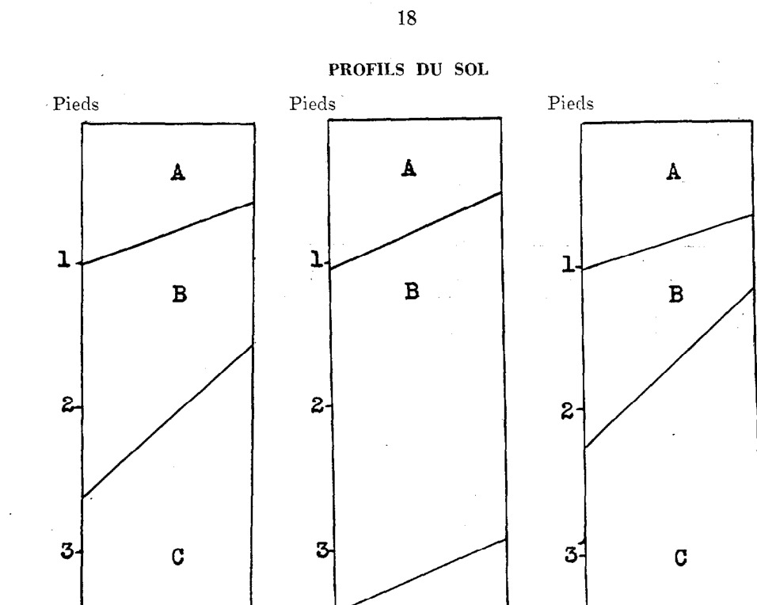
FIGURE 1
A. Sablo-argileux grossier brun chocolat foncé; friable; roches calcifères.
B. Sablo-argileux brun rougeâtre foncé; très friable; roches légèrement effervescentes.
C. Sablo-argileux brun jaunâtre foncé; légèrement compact; effervescent au HCl; légèrement bigarré. Franc morainique calcifère "phase normale"
A. Sablo-argileux ou graveleux chocolat foncé; friable; roches effervescentes au HCl.
B. Gravelo-argileux brun grisâtre, meuble; gravier arrondi par l'eau; effervescent au HCl.
C. Gravelo-argileux brun jaunâtre; fortement effervescent au HCl. Franc morainique calcifère "phase du gravier"
A. Sablo-argileux grossier brun chocolat foncé à noir; roches effervescentes au HCl.
B. Sablo-argileux grossier brun jaunâtre; légèrement compact; bigarré.
C. Sablo-argileux grossier brun jaunâtre clair; très compact; bigarré; fortement effervescent au HCl. Franc morainique calcifère "phase mal égouttée"
Les analyses chimiques de quelques échantillons représentatifs du sol argilo-sableux de Champlain sont données au tableau 2. Le sol de surface est riche en matière organique ainsi que l'indiquent la perte enregistrée au cours de l'incinération et la teneur en carbone organique, et la matière organique se prolonge assez bien jusque dans le sous-sol. La haute teneur en matière organique du sol de surface s'associe avec une grosse proportion d'azote total.
Ce type de sol a une réaction légèrement acide dans la couche de surface (pH 6.4) et légèrement alcaline dans le sous-sol (pH 7.5). La teneur en CaO est faible par comparaison à celle des autres genres de sol de district, mais par contre la proportion de MgO est très élevée. La teneur en acide phosphorique varie beaucoup; elle est toujours plus élevée dans les couches de surface que dans celles du sous-sol. La relation silice:sesquioxyde varie de 2:1 à 3:1 et la relation carbone:azote de l'horizon de surface varie de 10:1 à 13:1.
Ce type de sol est l'un des plus productifs de la province de Québec. Il est parfaitement adapté à la culture du grain et du foin, mais moins à la culture des arbres fruitiers parce qu'il s'égoutte mal. De même, sa réaction
neutre et la proportion élevée de chaux que renferme le sous-sol le rendent peu propre à la culture commerciale des pommes de terre. Ce type de sol est très répandu dans la province. Non seulement il a été rencontré dans le district d'Oka-Saint-Joseph, mais aussi dans ceux de Châteauguay, de Saint-Rémi et des Collines Montérégiennes. En fait c'est le sol typique des terres basses de l'étendue autrefois recouverte par la mer post-glaciaire de Champlain.
Le podsol sablonneux se trouve généralement à une hauteur intermédiaire, là où l'argile sablonneuse de Champlain rencontre les sols des terres hautes. Ce type de sol s'est développé sur de vieilles grèves de sable qui ont été triturées par les vagues de la mer de Champlain, dans les endroits où l'action des vagues était favorable. La profondeur de la couche de sable varie de 2 à 50 pieds et plus. Dans les endroits moins profonds elle repose généralement sur l'argile, qui s'oppose à la libre pénétration de l'eau. Les espaces poreux, ouverts du sable non tassé permettent une libre infiltration et par conséquent le lessivage du sol, aussi la plupart de ces grèves sablonneuses sont plus ou moins podsolisées. Le degré de podsolisation varie beaucoup, depuis une couche mince, à peine visible, jusqu'à une couche de 2 ou 3 pouces d'épaisseur. Les couches d'accumulation (horizons “B”) varient depuis un sable brun clair, non tassé et friable, à un type à couche dure, très compact, d'une couleur brun rougeâtre foncé. (Voir description du profil à la figure 1).
Le développement du podsol sablonneux n'est pas très prononcé dans le district d'Oka-Saint-Joseph. La terre adjacente aux plus hautes élévations est riche en chaux et l'eau d'écoulement qui s'infiltre à travers le sable contient en solution de grosses quantités de calcium libre, ce qui retarde beaucoup le procédé de podsolisation. Dans les endroits où le sable est peu profond et où il repose sur l'argile neutre, l'action du calcium forme une couche compacte et imperméable de carbonate de calcium. Les sables les moins profonds sont donc très souvent des sables mal égouttés.
Il est présenté au Tableau 2 des analyses chimiques de deux échantillons de podsol sablonneux. L'échantillon 138 a été trouvé adjacent aux sols riches en chaux et il n'est que légèrement podsolisé, tandis que l'échantillon N° 9, recueilli dans un endroit mal égoutté, est nettement podsolisé. La réaction du premier échantillon est donc neutre dans le sous-sol, tandis que celle du deuxième échantillon est très acide à travers tout le profil. La teneur en CaO du podsol sablonneux est de la même magnitude que celle de l'argile sablonneuse de Champlain, tandis que les autres constituants de base sont en quantités beaucoup moins fortes. La teneur en acide phosphorique est invariablement faible dans le podsol sablonneux, tandis que la teneur en soufre est à peu près du même ordre que dans l'argile sablonneuse de Champlain. Les relations silice:sesquioxyde et carbone:azote sont beaucoup plus larges dans les sols sablonneux podsolisés que dans les sols argileux de Champlain.
Ce type de sol est loin d'être aussi fertile que l'argile sablonneuse de Champlain et il exige de gros apports d'engrais pour la production des récoltes. Il n'y a actuellement qu'un petit nombre de vergers établis sur les sols de podsol sablonneux du district d'Oka-Saint-Joseph.
Une bande de terre d'environ trois quarts de mille de largeur le long de l'Outaouais se compose de sable récemment déposé. Le profil du sol n'est pas développé et la couche de surface donne une réaction légèrement acide ou neutre. La profondeur du sable est très grande. Actuellement tout ce sable de rivière est couvert de conifères et d'arbres à feuilles décidues.
Les sols des hautes terres sont en général beaucoup plus graveleux et pierreux. Une grande étendue de cette terre a été classée comme terre accidentée, pierreuse et incultivable. La terre accidentée se trouve généralement sur les pentes supérieures des montagnes et des collines où la topographie est trop inégale pour le passage des instruments aratoires et où d'ailleurs de nombreuses pierres
42967-2½
et roches rendent la culture impossible ou trop coûteuse. Généralement, cette terre accidentée est recouverte d'essences d'arbres mélangées et convient mieux pour la sylviculture.
Les sols sur les pentes inférieures des collines et des montagnes sont d'une nature très calcaire. Ils ont été classés parmi les terres “Franches morainiques calcifères”. Les roches mères sont un mélange de grès et de roches ignées de nature syénitique, et elles contiennent de la pierre à chaux cristalline. Cette pierre à chaux a beaucoup souffert de l'exposition aux agents atmosphériques et elle est très molle et s'émiette. La franche de moraine calcifère peut être subdivisée en deux groupes: bien égouttée et mal égouttée. La terre franche de moraine calcifère normale appartient à la catégorie bien égouttée, de même que la phase des graviers profonds et celle des coquillages.
La terre franche morainique normale n'est pas aussi profonde que les phases des graviers et des coquillages. La description de ces types est donnée à la Figure 1. La texture de la terre franche morainique normale est plus fine que celle des deux autres phases de ce type, quoiqu'elle soit souvent très pierreuse. Elle est plus riche en matière organique et en azote, mais la matière organique ne descend pas autant dans les profondeurs que dans les phases graveleuses. Ces trois sols sont très riches en chaux, surtout dans le sous-sol. Le sous-sol de la terre franche normale est légèrement compact et la chaux enlevée par les eaux des horizons plus élevés s'y est accumulée. Dans la phase graveleuse le gravier descend à une grande profondeur et il est peu tassé et en état d'émiettement. Ce gravier est un peu arrondi par l'eau ou anguleux et donne souvent une forte effervescence au contact de l'acide. La texture poreuse et grossière de ce sol permet une libre infiltration de l'eau et ce n'est que rarement que l'on trouve une concentration de chaux soluble dans les limites du profil supérieur. La phase coquillière de la terre franche morainique calcifère ressemble sous bien des rapports à la phase graveleuse, sauf cette exception qu'elle renferme un grand nombre de coquillages disséminés dans tout le profil. Parfois ces coquillages sont distribués également dans tout le profil; ailleurs ils sont concentrés en plaques. La présence de coquillages augmente beaucoup la teneur en chaux du sol. Ces coquillages sont d'origine marine ainsi que d'eau douce. Ils sont dans un état de bonne conservation dans le sol non dérangé, mais ils deviennent très friables et s'émiettent en poudre dès que le sol est remué.
Les phases mal égouttées de la terre franche morainique calcifère se trouvent généralement à une hauteur inférieure à celle des phases bien égouttées. Ce sont des sols moins profonds que la terre franche normale. Les couches du sous-sol sont plus compactes et plus riches en matière organique et en azote total que celles des sols bien égouttés. Le sous-sol est mince, plus compact et riche en chaux. La chaux qui s'est concentrée ici vient non seulement des couches de surface mais aussi des eaux d'égouttement provenant par infiltration des sols qui se trouvent à des élévations plus hautes. Le niveau d'eau est très élevé pendant une grande partie de l'année et le drainage est nécessaire.
Les analyses physiques et chimiques des terres franches morainiques calcifères sont présentées au tableau 2. On voit aisément par ce tableau que ces sols ont une réaction plus alcaline que ceux que nous avons déjà passés en revue. La réaction est neutre dans la couche de surface et légèrement alcaline dans le sous-sol (pH 7.7 à 8.5). La phase sablonneuse de la terre franche morainique calcifère, qui est représentée par l'échantillon 3, fait exception à cette réaction alcaline. Ce dernier échantillon se rapproche plus du podsol sablonneux mal développé. La réaction alcaline est accompagnée d'une haute teneur en CaO, particulièrement dans le sous-sol. Cette teneur est surtout élevée dans la phase coquillière de la terre franche morainique calcifère, où la teneur en CaO varie de 8.5% à 11% dans le sous-sol. Cette proportion élevée de chaux dans le sous-sol s'associe à une perte considérable sur incinération. Cette
perte sur incinération dans le sous-sol ne peut être associée à la matière organique, car la teneur en carbone organique est très faible. Elle est due à la présence de carbonates décomposables dans le sous-sol. Partout où la perte par incinération est faible dans le sous-sol (échantillons 139 et 3), la teneur en CaO est également faible. La teneur en MgO est plus faible dans les sols calcifères que dans l'argile de Champlain, et elle est plus faible encore dans la phase graveleuse que dans les autres sols calcifères. Le manganèse se trouve en plus forte proportion dans la composition des sols calcifères que dans le podsol sablonneux ou l'argile de Champlain. La phase coquillière des terres franches calcifères contient une plus forte proportion de Mn3O4 que les autres phases et dans l'échantillon 6, la teneur en Mn3O4 dépasse 1.0%. La proportion de potasse varie peu dans les échantillons de sol des différentes terres franches morainiques calcifères. Quant à la quantité totale de P2O5, elle varie beaucoup et elle est anormalement élevée dans les échantillons de la phase coquillière de la terre franche morainique.
Cette terre franche morainique calcifère est productive et l'on obtient de très bonnes récoltes sur ce type de sol lorsqu'il est bien cultivé. De beaucoup la plus forte proportion des vergers de ce district sont sur les phases bien égouttées de la terre franche morainique calcifère et les arbres sont sains et vigoureux. Le sol profond et friable permet aux racines des arbres de pénétrer aisément. Il n'en est pas de même de la phase mal égouttée, où les arbres ne paraissent pas pousser aussi bien et où ils souffrent probablement plus des gros froids de l'hiver. Dans le district d'Oka-St-Joseph, il a été constaté qu'une forte quantité de pommes sont affectées du “cœur liégeux”, un état physiologique que l'on attribue au manque de bore dans le sol. Il est possible que la haute teneur en chaux de la terre franche morainique calcifère rende le bore inassimilable par les arbres.
Comme le montre la carte ci-jointe, il y a actuellement une étendue considérable des phases normale, graveleuse, et coquillière de la terre franche morainique calcifère qui est consacrée aux récoltes ordinaires de la ferme. Si les maladies physiologiques des fruits peuvent être maîtrisées économiquement, alors le district d'Oka-St-Joseph offre plus de ressources pour le développement futur des vergers de rapport que tout autre district examiné au cours de cette étude.
Parmi les autres types de sols que nous avons rencontrés dans ce district, deux seulement méritent d'être mentionnés. Ce sont des sols locaux, et qui ne couvrent qu'une étendue limitée. La terre sablo-argileuse d'Oka peut être considérée comme un sol de transition entre le podsol sablonneux et l'argile sablonneuse. C'est une terre sablo-argileuse très fine, à réaction légèrement acide et mal égouttée. Le profil n'est pas très bien développé et le sable fin descend à une profondeur considérable.
Les autres sols rencontrés sont les tourbes organiques grises et noires qui se rencontrent généralement dans les endroits où l'égouttement se fait mal; la pousse des herbes marécageuses est rapide et il en résulte une accumulation rapide de matière organique décomposée. Le degré de décomposition dépend principalement de l'activité microbiologique, laquelle à son tour est réglée par la réaction et l'état d'humidité du sol. La réaction des terrains marécageux est grandement influencée par la nature des sols minéraux avoisinants. Il n'y a qu'une étendue limitée de tourbes grises et noires dans le district d'Oka-St-Joseph. Sa profondeur varie de 1½ pied à 3 et 4 pieds. La couche de surface sur une profondeur de 6 pouces ou d'un pied est assez bien décomposée et elle repose sur de la tourbe grise très peu décomposée. Cette couche de surface a une réaction légèrement acide ou parfois neutre, tandis que le sous-sol est un peu plus acide. Actuellement la plus grande partie des sols tourbeux de ce district est couverte de broussailles. Ils ne sont pas suffisamment égouttés pour que l'on puisse en faire une exploitation agricole.
LE DISTRICT DE FRANKLIN-HEMMINGFORD
Le district de Franklin-Hemmingford est dans le comté de Huntingdon, à quelque 40 milles au sud et au sud-ouest de Montréal. Il consiste en une bande de terre de 3½ milles de large et de plus de 20 milles de long, le long de la frontière internationale. L'étendue totale de terre examinée dans ce district dépasse 80 milles carrés.
D'après un rapport de la Société pomologique du Québec, le nombre total de pommiers dans ce district était d'environ 40,000 en 1934, couvrant environ 900 acres. Plus de la moitié des arbres sont des plantations récentes et ils ne sont pas encore entrés en rapport. Les plus grandes concentrations de vergers de pommiers dans ce district se trouvent dans le voisinage de Franklin Centre, Havelock et Hemmingford.
Les sols de ce district peuvent se diviser en deux catégories principales, d'après les roches qui ont présidé à leur formation — les sols calcaires dans la partie est et les sols acides dans le secteur ouest.
La topographie de la partie est, dans le voisinage du village de Hemmingford, n'est pas aussi inégale que celle du district d'Oka-St-Joseph. Des buttes ou groupes d'élévation modérée et divisées par de petites vallées vont dans une direction sud-nord. La formation géologique est principalement du grès calcifère et de nombreuses roches et pierres de cette formation sont éparpillées sur les hauteurs. On rencontre de nombreux murs de pierres sur les terres cultivées de ce district. La chaux qui forme la substance de cimentation dans le grès calcifère est aisément soluble et les surfaces extérieures des roches désagrégées n'entrent pas en effervescence au contact de l'acide. Cependant, quand ces roches se fissurent, leur partie intérieure entre en violente effervescence au contact de l'acide. On peut voir clairement la profondeur à laquelle la roche a été exposée à l'air; la partie intérieure non exposée est brun grisâtre; la partie extérieure exposée, rougeâtre. Cette formation calcifère ne se prolonge pas tout à fait jusqu'à la frontière internationale.
Le sol dominant de ce district est la terre franche morainique calcifère, déjà étudiée dans ce bulletin. Le sol normal de ce type se rencontre principalement sur le dessus des coteaux ou croupes et sur leurs pentes supérieures; il n'existe qu'en bandes étroites, car les coteaux ne sont pas très larges. La phase graveleuse profonde n'est pas très commune et la phase coquillière est presque absente.
La phase mal égouttée se rencontre sur les pentes inférieures et au bas des coteaux. Elle ressemble à celle que l'on voit dans le district d'Oka-St-Joseph. La compacité de ce sol est souvent plus prononcée et les racines des plantes et l'eau n'y pénètrent que difficilement. Le sol est généralement très humide pendant une partie considérable de l'année, l'eau est retenue par une couche compacte que l'on désigne souvent sous le nom de “tuf” (en anglais, “hardpan”). Cette couche est cimentée par du carbonate de chaux. Pendant les mois secs de l'été, lorsque toute l'eau libre s'est écoulée, ce sol devient très sec et très dur. L'humidité provenant du sous-sol adjacent ne monte pas très rapidement à travers cette couche compacte. Les racines des arbres s'étalent largement dans les couches de surface et quelques-unes seulement pénètrent à travers la couche compacte, aussi les arbres souffrent plus de la sécheresse sur les sols mal égouttés que sur les sols bien égouttés. Le drainage est très important dans ces sols. Non seulement il enlève le surplus d'eau au printemps, mais aussi une partie de la chaux venant du sous-sol et qui s'est accumulée. Les roches et les pierres se trouvent invariablement à la surface et dans le profil des terres franches morainiques calcifères, ce qui fait que le drainage est une opération assez difficile et coûteuse.
La composition chimique et physique des sols morainiques calcifères est présentée au tableau 3. On voit par les résultats de l'analyse chimique que dans le
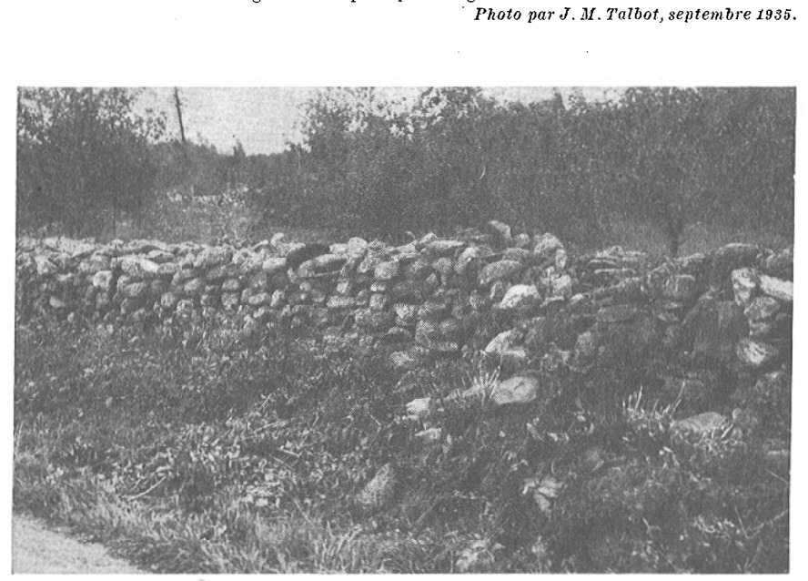
Fragments de roches dans le district de Hemmingford, montrant la désagrégation par les agents atmosphériques du grès calcifère. Photo par J. M. Talbot, septembre 1935.
Murs de pierre caractéristiques des régions de Potsdam et de grès calcifère. Photo par J. M. Talbot, septembre 1935.
TABLEAU 3.—COMPOSITION CHIMIQUE ET PHYSIQUE DES ÉCHANTILLONS DE SOLS RECUEILLIS DANS LE DISTRICT DE FRANKLIN-HEMMINGFORD
Echan-tillon N°
Analyse chimique (Après séchage au four)
Analyse physique
Humi- dité hygro- scopique %
Perte par inci- nération %
Valeur en pH
Besoins en chaux liv. de CaO par acre
CaO %
MgO %
Mn3O4 %
K2O %
SiO2 %
Fe2O3+ Al2O3+ Ti2O3 %
P2O5 %
SO3 %
N2 %
C orga- nique %
Gravier > 1 mm. %
Sable 1-0.05 mm. %
Limon 0.05- 0.005 mm. %
Argile totale 0.005- 0 mm. %
Argile fine 0.002- 0 mm. %
Terre franche de moraine calcifère
2 A....... B....... C.......
2.80 1.62 1.01
11.30 5.82 4.06
7.03 7.37 7.70
0 0 0
1.65 1.88 2.11
0.77 0.29 0.52
0.035 0.054 0.079
1.94 2.02 1.91
67.9 74.6 74.8
15.9 14.9 16.1
0.220 0.136 0.157
0.232 0.142 0.120
0.38 0.70 0.09
4.55 1.92 1.04
4.0 17.6 6.6
45.0 38.7 42.0
28.5 24.8 29.3
22.5 18.9 22.1
15.3 13.2 15.9
3 A....... B....... C.......
2.61 1.01 0.41
8.94 4.02 8.01
7.39 7.59 8.20
0 0 0
2.18 2.15 6.04
0.65 0.36 0.36
0.090 0.078 0.042
1.66 2.10 1.97
69.1 70.8 64.8
17.3 19.4 17.8
0.232 0.168 0.168
0.246 0.131 0.091
0.51 0.11 0.02
5.10 0.90 0.25
4.5 9.5 10.5
46.0 46.2 46.2
36.0 29.2 31.4
13.5 15.1 15.9
9.7 11.0 11.5
4 A....... B....... C.......
2.57 1.03 0.86
10.90 5.27 5.02
7.22 7.44 8.36
0 0 0
2.42 2.85 4.60
0.58 0.54 0.75
0.059 0.054 0.040
2.03 2.05 1.86
65.1 71.9 69.8
18.9 16.6 17.3
0.208 0.152 0.158
0.230 0.133 0.089
0.38 0.11 0.06
4.37 0.95 0.28
7.0 8.5 7.0
46.1 37.5 46.6
32.5 28.6 26.5
14.4 25.4 19.9
10.6 19.4 14.8
Terre franche de moraine calcifère, phase mal égouttée
6 A....... B....... C.......
2.38 1.14 0.29
11.72 10.49 10.35
7.84 7.75 8.27
0 0 0
2.70 4.93 8.24
1.29 1.53 1.88
0.117 0.118 0.041
2.06 2.01 2.05
65.5 61.9 60.1
15.5 17.8 17.2
0.224 0.188 0.143
0.194 0.324 0.148
0.37 0.13 0.05
4.16 1.18 0.28
22.5 24.5 25.0
37.8 42.2 40.5
27.1 24.4 23.5
12.6 8.9 11.0
9.5 6.2 8.0
17 A....... B....... C.......
3.68 0.61 0.40
12.61 7.42 9.20
6.96 8.49 8.63
0 0 0
2.62 3.66 10.13
1.36 3.47 2.01
0.048 0.046 0.040
1.91 1.80 1.97
67.2 65.9 59.2
14.1 15.4 18.1
0.215 0.159 0.142
0.240 0.119 0.107
0.46 0.11 0.04
5.40 0.39 0.21
15.5 25.0 27.0
30.7 28.0 29.3
31.4 30.5 28.4
22.4 16.5 15.3
12.8 11.0 10.6
11 A....... B....... C.......
2.34 0.88 0.42
9.75 5.96 9.71
7.89 8.25 8.75
0 0 0
4.68 3.85 11.50
0.82 1.82 1.85
0.071 0.058 0.034
1.96 2.04 1.97
68.7 69.4 63.0
18.1 17.6 19.4
0.224 0.165 0.133
0.118 0.109 0.120
0.34 0.08 0.04
3.47 0.62 0.20
41.0 22.0 33.5
31.5 42.3 34.0
18.6 24.6 20.6
8.9 10.6 11.9
7.0 7.2 8.8
Terre franche de moraine calcifère: phase de gravier profond
10 A....... B1...... B²...... C.......
2.36 1.19 0.48 0.44
12.30 12.90 13.41 10.96
7.51 7.98 8.34 8.64
0 0 0 0
3.28 8.40 11.65 9.12
1.83 1.17 1.01 0.96
0.117 0.120 0.052 0.045
2.99 2.42 2.00 1.82
61.4 55.1 46.3 59.2
18.8 19.9 21.1 18.9
0.180 0.168 0.114 0.103
0.217 0.158 0.104 0.132
0.36 0.09 0.04 0.02
3.85 1.08 0.28 0.17
45.5 55.0 65.0 43.0
26.7 26.3 25.6 30.2
19.8 15.1 7.1 18.5
8.0 3.6 2.3 3.4
6.7 2.8 1.3 5.8
21 A....... B....... C.......
2.50 0.92 0.51
9.27 3.81 7.56
7.32 7.60 8.32
0 0 0
1.75 2.78 7.47
1.74 3.15 1.91
0.045 0.034 0.026
2.05 2.04 2.00
68.9 71.3 64.3
16.4 17.6 16.5
0.179 0.112 0.145
0.320 0.137 0.146
0.35 0.07 0.04
3.97 0.53 0.25
35.0 41.5 50.0
33.8 28.5 24.2
20.8 20.3 17.5
11.2 9.7 8.3
7.3 8.0 5.5
Gravier de terrasse de Champlain
57 A....... B....... C.......
4.09 2.25 1.28
12.07 3.79 3.17
5.14 5.22 5.62
4,768 3,010 1,669
0.90 0.93 0.92
0.88 1.31 1.94
0.159 0.123 0.204
2.15 2.56 2.52
69.8 74.0 74.4
14.6 17.6 17.7
0.233 0.147 0.188
0.239 0.115 0.107
0.42 0.09 0.07
6.02 1.07 0.97
57.5 80.0 86.0
24.7 11.6 8.8
14.0 4.6 3.2
3.8 3.8 2.0
2.9 3.0 1.5
Séries de sols et horizons
Analyses physiques et chimiques
Carbone organique (C)
Azote total (N)
Rapport C/N
pH $\text{H}_2\text{O}$
pH $\text{CaCl}_2$
Granulométrie (%)
Bases échangeables et C.E.C. (me/100g)
%
t/acre
t/hectare
Sable grossier
Sable fin
Limon
Argile
Ca
Mg
K
C.E.C.
Gravier de terrasse de Champlain, phase sablonneuse
59
A0...
B1...
C......
4,12 3,64 1,19
13,36 7,26 2,60
5,04 5,46 5,64
3,010 3,670 2,344
1,18 1,02 0,92
1,18 1,13 0,92
0,220 0,254 0,127
1,87 1,90 2,41
70,6 74,2 79,1
12,5 14,8 14,2
0,220 0,257 0,186
0,250 0,141 0,091
0,45 0,23 0,07
6,24 3,02 1,03
38,0 40,0 40,0
42,0 43,2 48,2
15,9 12,0 7,7
4,1 4,8 4,1
3,0 3,6 3,0
Podsol pierreux
62
A0...
A1...
B1...
C......
3,57 0,56 3,60 0,69
17,21 1,47 6,30 1,54
4,30 4,52 5,16 5,34
7,270 5,680 6,200 2,680
0,57 0,42 0,65 0,67
0,90 0,85 0,49 0,53
0,022 0,013 0,019 0,035
1,40 1,58 1,43 1,40
65,1 88,4 79,6 85,3
7,6 7,1 11,7 10,1
0,124 0,069 0,216 0,179
0,179 0,033 0,091 0,078
0,42 0,06 0,09 0,04
9,21 0,92 2,86 0,33
25,0 8,0 40,0 24,5
55,8 72,0 47,6 52,0
14,9 14,5 7,6 12,3
4,3 5,5 4,8 11,2
3,4 3,1 3,8 9,5
Sablo-argileux de Franklin
54
A1...
B1...
C......
5,06 4,35 1,80
14,04 8,58 2,97
5,28 6,01 6,06
6,768 2,344 1,338
1,37 1,18 0,87
1,83 1,32 1,27
0,190 0,186 0,051
1,97 2,04 2,09
62,4 68,8 78,4
18,7 17,9 14,5
0,319 0,262 0,170
0,286 0,217 0,095
0,39 0,23 0,07
6,20 3,24 1,05
3,5 7,5 10,5
46,7 49,6 51,0
38,1 30,9 26,8
11,7 12,0 11,7
9,6 9,2 8,1
Sablo-argileux de Châteauguay
65
A1...
B1...
C......
3,03 1,18 0,71
9,38 2,59 4,94
6,92 7,32 8,60
334 0 0
1,10 2,94 4,60
0,85 0,78 1,80
0,048 0,048 0,056
1,81 2,12 1,85
72,2 79,2 73,1
14,7 12,7 15,7
0,219 0,178 0,216
0,195 0,109 0,069
0,28 0,08 0,04
4,15 1,13 0,83
20,0 30,0 27,0
54,0 53,8 37,4
16,8 9,6 20,2
9,2 6,6 15,4
7,4 4,5 12,6
district d'Oka-St-Joseph, les sols morainiques calcifères du voisinage de Hemmingford ont un pH élevé. La différence dans la concentration de chaux entre le sous-sol de la terre normale bien égouttée et la phase mal égouttée, est plus prononcée dans le district de Hemmingford que dans celui qui a déjà été étudié. On voit que la situation est la même dans le tableau 4. La haute teneur en chaux de la phase graveleuse profonde concorde avec les résultats notés dans le district d'Oka-St-Joseph. La teneur totale en azote de tous les sols calcifères est relativement élevée, comme l'avons déjà fait remarquer, mais il y a peut-être un peu moins de potasse et de phosphore totaux dans le district de Hemmingford que dans celui d'Oka-St-Joseph.
La terre sablo-argileuse de Châteauguay ressemble peu à la terre franche morainique mal égouttée. Elle se rencontre généralement sur les terres basses et plates entre les coteaux du district de Hemmingford; elle est donc mal égouttée. Les cailloux et les pierres sont plus rares sur ces types de sols. La couche de surface consiste en une terre sablo-argileuse d'une couleur chocolat foncé et à réaction neutre. Le sous-sol est très bigarré, indiquant un pauvre égouttement. A une profondeur de 3 à 4 pieds, le sous-sol devient légèrement compact et entre en violente effervescence au contact de l'acide. La similarité entre la terre sablo-argileuse de Châteauguay et la terre franche calcifère mal égouttée se voit également d'après la composition chimique, présentée au tableau 3. La première n'a pas une teneur en chaux aussi élevée que la dernière. La couche riche en chaux est à une plus grande profondeur et elle n'est pas aussi compacte que dans la terre franche calcifère. La proportion d'azote dans l'échantillon no 65, au tableau 3, n'est pas aussi élevée que dans la terre calcifère mal égouttée. On trouve souvent cependant à la surface de la terre franche de Châteauguay une couche peu profonde de tourbe noire et dans les cas de ce genre la teneur en azote de la couche de surface est beaucoup plus forte. La terre sablo-argileuse de Châteauguay ne convient pas pour la culture des pommiers, mais on voit souvent de très bonnes récoltes de foin et de grain sur ce type de sol.
Les sols riches en chaux se prolongent jusqu'à quelque trois milles à l'ouest du village de Hemmingford. A l'ouest de ce point et le long de la frontière internationale, la formation géologique est principalement du grès de Potsdam. Ici les pentes descendent du sud au nord. Un peu à l'ouest du bureau de poste de Covey Hill, l'altitude est d'environ 1,100 pieds au-dessus du niveau moyen de la mer, puis tombe très rapidement vers l'est, l'ouest et le nord. Au grand chemin No 52, qui va de l'est à l'ouest, près de l'extrémité nord de l'étendue étudiée, l'élévation est d'environ 500 pieds.
Une grande partie de cette terre aux plus hautes élévations est classée parmi les terres trop accidentées et trop pierreuses pour être cultivées. Dans bien des endroits où la surface paraît être lisse, le sol repose sur une assise rocheuse plate, à une profondeur de un à trois pieds. Cet état est souvent la cause d'une interruption ou d'une obstruction de l'égouttement et le sol devient marécageux et impropre à la culture. Le plus gros de la haute terre qui n'est pas classée parmi les terres non arables a une réaction très acide et est très lessivée; elle est marquée sur la carte comme podsol pierreux de haute terre. Ce podsol pierreux des plateaux diffère beaucoup du podsol sablonneux des basses terres. Ce dernier se compose d'anciennes grèves de sable à faibles élévations, le sable très désagrégé provient principalement de grès riche en chaux, il n'y a pas de cailloux ni de pierres; tandis que le podsol des plateaux est formé sur moraines à des élévations beaucoup plus fortes, et c'est une terre franche très pierreuse. La couche blanche lessivée et la couche d'accumulation sont plus développées dans le podsol pierreux. Ce n'est pas un sol productif et il est couvert sur une grande partie de bois, composés d'arbres de différentes essences, ou il est employé comme pacage permanent.
Les résultats des analyses chimiques d'un podsol pierreux typique de haute terre sont donnés au tableau 3 et ils diffèrent beaucoup des données analytiques
du podsol sablonneux de terre basse, décrit au tableau 2. Toutes les bases qui ont été déterminées sont en quantité beaucoup plus faible dans le podsol de haute terre que dans celui de basse terre. Il existe notamment une différence frappante dans la teneur en calcium. La petite quantité d'éléments de base présente est la cause principale de la réaction acide de ce sol et de son grand besoin de chaux. Le phosphore total du podsol pierreux est aussi très faible et il est concentré dans la couche d'accumulation. La teneur en matière organique est très élevée dans la couche de surface, à cause d'une accumulation de débris mal décomposés et elle est aussi relativement élevée dans la couche d'accumulation.
En partant de Stockwell dans une direction ouest le long des pentes basses du plateau de Covey Hill, à une élévation de 375 à 500 pieds, se trouve un sol typique d'un grand nombre des meilleurs sols à vergers du Québec. C'est une
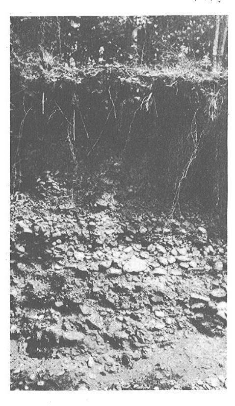
Gravier de la terrasse Champlain, Franklin-Centre. Août 1936.
terre gravelo-argileuse profonde comme les types dominants de sols sur les positions topographiques semblables des districts des collines montérégiennes. Ce type de sol, le gravier de terrasse Champlain, était autrefois une grève de gravier le long des rivages de la mer Champlain, qui a succédé à la période glaciaire. Ce gravier s'étend sur une profondeur considérable et lorsqu'un profil assez grand est exposé, on voit des couches bien nettes déposées par l'eau. Ces couches ont été causées par l'action des vagues le long des rivages de l'ancienne mer de Champlain, qui a divisé par triage les matériaux plus fins des matériaux plus grossiers. L'épaisseur des couches diffère, et la grosseur du gravier varie depuis
celle d'un pois à celle d'un œuf de poule. Une partie est arrondie par l'eau et l'autre angulaire. On trouve invariablement des cailloux et des pierres sur la surface et dans le profil du gravier de terrasse Champlain. La couche de surface est une terre franche de couleur chocolat brun foncé, de réaction acide et de 6 à 10 pouces d'épaisseur. La terre gravelo-argileuse du sous-sol est d'une couleur brun rougeâtre. La couleur change graduellement; à 4 pieds elle est brun grisâtre. La matière organique descend à une profondeur considérable.
Le gravier de terrasse Champlain diffère par la réaction du gravier morainique calcifère. Ce dernier entre généralement en violente effervescence au contact de l'acide hydrochlorique et sa réaction est neutre et légèrement alcaline,
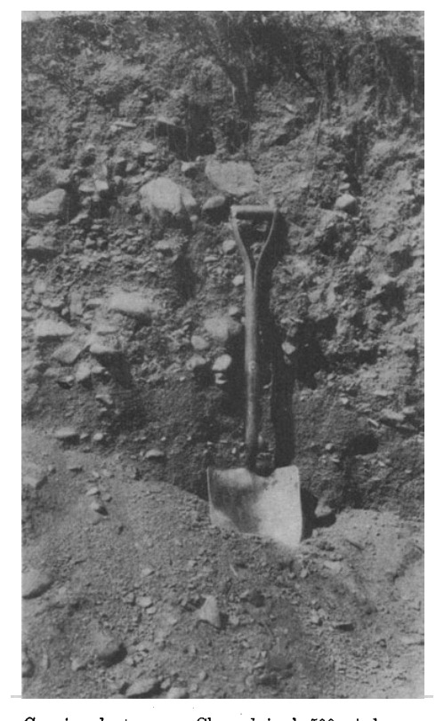
Gravier de terrasse Champlain à 500 pieds au-dessus du niveau moyen actuel de la mer, à Franklin-Centre; on voit des couches de matériaux triés par l'eau. Août 1936.
tandis que le gravier de terrasse Champlain a une réaction légèrement acide. On y trouve rarement pourtant des traces de podsolisation. Les coquillages marins se rencontrent rarement dans les graviers de terrasse Champlain et ceux que l'on trouve sont à une profondeur considérable au-dessous de la surface, de sorte qu'ils n'exercent pas beaucoup d'effet sur le profil du sol.
Une phase sablonneuse du gravier de terrasse Champlain a été inscrite sur la carte. C'est une transition entre le gravier de terrasse et le podsol sablonneux, à de plus faibles élévations. Cette différence est principalement une différence de texture, les autres caractères du sol sont semblables à ceux du gravier de terrasse Champlain.
Dans certains endroits, les infiltrations souterraines venant des collines ont durci le sous-sol. Dans les cas de ce genre le gravier de terrasse Champlain prend les caractéristiques d'un sol mal égoutté. Le sous-sol devient compact et bigarré de taches de fer et la matière organique s'accumule dans la couche de surface à cause de l'activité microbiologique décroissante et d'une végétation plus luxuriante de plantes de marécages. Ce sol est représenté dans la carte de ce district comme la phase mal égouttée du gravier de terrasse Champlain.
La différence de composition chimique entre le gravier de terrasse Champlain et les terres franches moraines calcifères se voit clairement au tableau 3. Le pH des premiers sols varie de 5.0 à 5.5, tandis qu'il est de 7 à 8.5 dans les derniers. Cette différence dans la réaction du sol s'accompagne également par une grande différence dans le besoin en chaux entre les sols respectifs. La teneur en calcium du gravier Champlain est très faible par comparaison à celle des sols calcifères. On voit donc, en consultant le tableau 5, que la teneur en calcium des échantillons de gravier Champlain venant des collines montérégiennes est un peu plus élevée que les chiffres donnés au tableau 3. La différence entre les autres éléments constitutifs n'est pas très marquée.
Le gravier de terrasse Champlain est un sol très productif. Les pommiers viennent bien sur les phases bien égouttées et une grande partie de ce type de sol a été plantée en vergers. D'autres récoltes de la ferme rapportent bien également et il est intéressant de noter que la luzerne, qui est généralement limitée aux sols riches en chaux, vient bien sur ce gravier acide et résiste parfaitement aux hivers rigoureux.
La plus grande partie du sol de ce district, qui se trouve au nord du gravier de terrasse Champlain est un podsol sablonneux. Il est situé à une élévation plus faible et il est semblable au podsol sablonneux étudié dans le district d'Oka-St-Joseph. Dans bien des endroits, cependant, ce podsol sablonneux est mal égoutté. L'eau d'égouttement venant des niveaux plus élevés s'accumule ici, parce que la déclivité est rapide et que l'égouttement est obstrué par de petites crêtes. Le podsol sablonneux mal égoutté a une épaisse couche de surface, riche en matière organique, et souvent semblable à une tourbe noire peu profonde. Le procédé de lessivage est plus lent, les horizons A2 et B ne sont pas aussi bien développés et le sol n'a pas une réaction aussi acide que le podsol sablonneux bien égoutté. Ce type de sol n'est pas très productif; il ne convient pas pour la culture du pommier.
Un sol local près de Franklin Centre dont l'élévation est intermédiaire entre celle du gravier de terrasse Champlain et le podsol sablonneux des terres hautes, a été inscrit sur la carte comme terre sablo-argileuse de Franklin. Bien égoutté ce sol est sablo-argileux friable, à réaction légèrement acide, mais il est presque toujours mal égoutté. L'eau venant des sols plus élevés s'infiltre dans cette terre et beaucoup des bases solubles sont absorbées ici, ce qui explique le pH plus élevé, présenté au tableau 3. Lorsqu'il est mal égoutté, le sous-sol de la terre sablo-argileuse de Franklin est compact et bigarré, avec une couche de surface brun foncé à noire. On voit souvent des affleurements rocheux sur ce type de sol et l'assise rocheuse sur laquelle il repose est souvent la cause du mauvais égouttement.
On voit par le tableau 3 que la teneur en chaux, et spécialement la teneur en magnésie, est beaucoup plus élevée dans la terre de Franklin que dans le podsol pierreux, et un peu plus élevée que dans le gravier de terrasse. La teneur en potasse de la terre de Franklin est du même ordre que celle du gravier de terrasse, tandis que celle du podsol pierreux est beaucoup plus faible. C'est dans la couche de surface de la terre sablo-argileuse de Franklin que l'on trouve la proportion la plus élevée de phosphore total.
Ce type de sol est principalement affecté à la culture du grain, du foin et des plantes à pâturage. Il se plante aussi quelques vergers qui viennent très bien sur la partie bien égouttée
Les seuls autres types de sols rencontrés dans le district de Franklin-Hemmingford sont des tourbes grises et noires. La plus grande étendue de tourbe grise est au sud-est du village de Hemmingford; elle couvre environ 1,000 acres. Ce sol a été examiné en 1935 lorsque l'examen des tourbières a été fait et il est couvert dans le premier rapport présenté par le Comité d'enquête des sols du Québec (1).
LES DISTRICTS DE CHÂTEAUGUAY ET DE ST-RÉMI
Le district à pommiers de Châteauguay, dans les comtés de Châteauguay et de Laprairie, et le district à pommiers de St-Rémi, dans le comté de Napierville, se trouvent dans une direction sud-ouest à partir de Montréal. Comme ils sont semblables sous bien des rapports, ils seront étudiés ensemble. L'étendue totale examinée dans ces deux districts couvre environ 65 milles carrés. Les sols de cette partie de la province sont très fertiles et la majeure partie de la terre est consacrée à l'industrie laitière et produit d'excellentes récoltes de grain et de foin. L'industrie des conserves y a pris également un grand développement; il se cultive un grand nombre d'acres de pois et de tomates pour la mise en conserves. D'après le rapport de 1934 de la Société pomologique du Québec, le nombre total de pommiers dans le district de Châteauguay est de 36,500 et il est de 13,500 dans le district de St-Rémi.
La topographie de ces deux districts est plate ou légèrement ondulée. La hauteur au-dessus du niveau moyen de la mer varie depuis 100 pieds près de la rive du Lac St-Louis à un peu plus de 200 pieds près de St-Rémi. La plupart des vergers sont plantés sur des croupes de moraine glaciaire, doucement ondulées. Dans le district de Châteauguay, en général, les vergers sont en meilleur état que dans le district de St-Rémi. Quelques-uns des plus grands vergers de rapport ont été plantés sur terre plate, mal égouttée, et ils ont beaucoup souffert de l'hiver en ces trois dernières années. Certains troubles physiologiques, comme le cœur liégeux, ont été signalés dans le district de Châteauguay, mais ils paraissent être moins répandus dans les districts d'Oka-St-Joseph et de Hemmingford.
La roche-mère sous-jacente dans ce district de Châteauguay est principalement du grès calcifère; dans le district de Saint-Rémi, c'est de la pierre à chaux Chazy. Sur terre plate, la roche sous-jacente est très profonde et ce n'est qu'exceptionnellement que l'on trouve des affleurements de roche. Les croupes ou coteaux sont de petites moraines glaciaires contenant de nombreux petits cailloux et des roches. Ces roches sont riches en chaux, dont la présence exerce un effet important sur les types de sols qui se sont développés et que l'on trouve dans ces districts.
Les types de sols de Châteauguay et Saint-Rémi sont semblables à ceux des districts déjà étudiés. Une moitié environ du district de Châteauguay se compose d'argile sablonneuse de Champlain. La texture de la couche de surface de ce type de sol varie depuis une terre franche à une terre sablo-argileuse, tandis que le sous-sol se compose généralement d'argile assez lourde. Bien égouttée, la terre sablo-argileuse est friable et productive, comme nous l'avons vu plus haut. La phase mal égouttée de ce type de sol est plus difficile à cultiver. Le sol de surface est de texture un peu plus lourde et très collant lorsqu'il est mouillé. Il se coagule en séchant et se fendille lorsqu'il fait sec. Le sous-sol est très compact, très bigarré et s'oppose à la libre pénétration de l'eau. Dans le district de Saint-Rémi il n'a été trouvé que très peu de terre argilo-sableuse et le plus gros de cette terre a dû être inscrit sur la carte comme la phase mal égouttée de ce type de sol.
Une petite quantité de terre a été inscrite sur la carte comme argile de Champlain. C'est surtout par la texture qu'elle diffère de la terre argilo-sableuse et elle devient plus lourde à partir de la couche de surface en descendant. La struc-
TABLEAU 4.—COMPOSITION CHIMIQUE ET PHYSIQUE DES ÉCHANTILLONS DE SOLS PROVENANT DES DISTRICTS DE ST-RÉMI ET DE CHÂTEAUGUAY
Échan- tillon N°
Analyse chimique Après séchage au four
Analyse physique
Humi- dité hygros- copique %
Perto sur incinéra- tion %
Valeur en pH
Besoins en chaux liv. de CaO par acre
CaO %
MgO %
Mn3O4 %
K2O %
SiO2 %
Fe2O3+ Al2O3+ Ti2O3 %
P2O5 %
SO3 %
N2 %
C orga- nique %
Gravier >1 mm. %
Sable 1-0.05 mm. %
Limon 0.05- 0.005 mm. %
Argile totale 0.005- 0 mm. %
Argile fine 0.002 0 mm. %
Franc de moraine calcifère
30 A......
1.66
7.23
7.19
1,318
2.27
0.99
0.049
2.32
68.8
18.4
0.224
0.107
0.20
2.09
17.0
44.7
22.5
15.8
13.2
B......
1.04
3.16
7.10
439
2.07
0.95
0.017
1.92
70.7
20.2
0.202
0.065
0.08
0.37
16.0
53.2
14.7
16.1
14.1
C......
1.29
5.58
8.20
0
3.17
1.76
0.043
2.58
65.3
22.9
0.274
0.078
0.07
0.44
19.0
34.5
26.4
20.1
9.9
90 A......
4.10
10.05
7.01
1,010
1.53
0.73
0.152
2.26
60.8
23.4
0.250
0.189
3.20
4.15
26.0
31.9
26.1
16.0
13.0
B......
1.89
3.02
7.50
672
2.04
0.77
0.104
2.30
70.3
23.3
0.256
0.107
0.09
0.96
38.0
35.3
17.3
9.4
7.4
C......
1.05
2.42
8.20
0
4.20
1.12
0.062
2.05
66.4
21.5
0.246
0.082
0.05
0.31
26.0
38.6
23.5
11.9
10.3
Franc de moraine calcifère: phase mal égouttée
27 A......
2.67
10.95
8.08
0
3.43
1.49
0.116
2.56
61.7
20.7
0.330
0.165
0.28
3.05
19.0
31.1
23.3
26.6
20.8
B......
1.54
9.62
8.40
0
5.27
1.77
0.094
2.58
60.2
20.7
0.375
0.096
0.19
9.82
20.0
38.4
20.9
20.7
17.0
C......
0.66
18.37
8.34
0
16.97
1.81
0.079
2.17
47.5
14.0
0.250
0.100
0.16
0.34
19.0
38.4
21.8
20.8
13.3
28 A......
2.13
9.74
8.04
0
3.83
1.77
0.026
2.66
64.2
19.5
0.215
0.160
0.28
2.36
14.0
39.8
23.8
22.4
17.2
B1.....
1.22
12.83
8.04
0
3.96
2.41
0.018
2.52
57.0
17.0
0.213
0.130
0.17
0.94
33.0
25.5
19.4
17.1
12.8
B2.....
1.20
16.30
8.32
0
13.38
1.70
0.019
2.64
50.8
18.0
0.223
0.130
0.13
0.43
32.0
28.0
21.2
18.8
12.8
C......
1.04
17.69
8.34
0
14.68
1.60
0.022
2.62
43.9
20.6
0.212
0.140
0.09
0.32
34.0
23.4
21.4
21.2
17.8
Sablo-argileux de Champlain
87 A......
2.49
6.76
7.22
3,670
1.96
0.92
0.072
1.75
69.2
21.4
0.252
0.189
0.14
2.77
16.0
39.6
21.9
22.5
18.8
B......
1.61
3.03
7.06
2,010
2.40
1.17
0.113
2.00
69.4
25.7
0.283
0.157
0.04
0.55
37.0
36.9
13.8
12.3
19.5
C......
2.19
2.84
7.21
0
1.84
0.74
0.103
2.20
72.2
24.9
0.218
0.109
0.05
0.65
17.0
39.0
22.8
21.2
18.8
93 A......
2.01
5.40
6.84
2,010
1.83
0.60
0.052
1.93
70.8
20.5
0.260
0.191
0.14
2.35
5.5
35.9
32.5
26.1
22.3
B......
2.19
2.84
7.21
1,672
1.84
0.74
0.103
2.20
72.2
24.9
0.218
0.109
0.05
0.65
17.0
39.0
22.8
21.2
18.7
C......
1.20
3.17
8.34
669
4.10
0.95
0.035
2.25
69.6
20.2
0.280
0.112
0.04
0.33
8.0
35.0
29.5
27.5
23.5
81 A......
1.84
4.91
6.68
2,344
2.92
0.77
0.046
1.94
71.8
20.1
0.219
0.190
0.14
2.50
0
60.0
27.2
12.8
10.4
B......
1.12
0.86
7.46
1,010
2.80
0.81
0.048
2.10
71.2
23.0
0.226
0.148
0.02
0.58
0
60.0
29.6
10.4
10.0
C......
0.79
3.11
8.52
0
4.95
0.77
0.053
1.93
70.8
22.6
0.237
0.173
0.02
0.21
0
52.4
34.8
12.8
12.8
Sablo-argileux de Châteauguey
88 A......
2.21
12.65
6.86
1,672
2.80
0.89
0.031
1.92
65.6
17.7
0.183
0.203
0.24
6.62
0
68.0
17.0
15.0
11.6
B......
0.40
1.73
7.42
1,010
2.27
0.79
0.047
1.96
73.2
19.3
0.179
0.187
0.02
0.38
0.5
71.6
13.2
14.7
12.5
C......
0.14
1.46
8.37
0
5.26
1.63
0.068
1.91
70.6
21.8
0.171
0.149
0.01
0.79
45.0
45.6
5.1
4.3
3.1
Argilo-sableux de Champlain
84 A......
2.16
8.10
6.74
3,680
1.82
1.30
0.114
2.18
66.2
23.9
0.191
0.189
0.20
3.42
5.0
23.9
27.8
43.3
36.8
B......
2.14
5.02
6.45
2,010
1.12
1.27
0.050
2.58
65.6
23.6
0.175
0.127
0.07
1.16
2.0
16.8
18.9
62.3
57.6
C......
2.17
4.41
8.15
334
2.07
1.49
0.082
2.42
64.4
29.3
0.185
0.140
0.04
0.38
3.0
15.9
19.4
61.7
55.4
ture d'argile est généralement plus grossière dans le district de Champlain que dans la terre argilo-sableuse; dans le sous-sol la structure est grossière, en petits fragments ou en mottes. La surface des particules est recouverte d'une substance colloïdale, lisse et luisante. L'argile lourde est généralement mal égouttée et le drainage est nécessaire pour que les pommiers puissent bien s'établir sur ce genre de sol.
Un autre type de sol qui a été trouvé dans ces districts et qui n'a pas encore été étudié est la terre sablo-argileuse de Champlain. On la trouve généralement sur la plaine plate, elle forme un sol de transition entre la terre argilo-sableuse de Champlain et les podsols sablonneux de grève. Ce type de sol est très répandu dans toute la province et il est semblable au sol sablo-argileux montérégien dont nous parlons plus loin. Bien égouttés, les sols sablo-argileux de Champlain sont profonds, friables, ouverts, à réaction légèrement acide. La couleur, qui est brun chocolat foncé dans la couche de surface, devient graduellement gris brunâtre dans le sous-sol. A une profondeur de 3 à 4 pieds la texture devient un peu plus lourde. Lorsque le sol se trouve dans des endroits bas et mal égouttés, l'effet du mauvais égouttement se voit dans le sous-sol. Les caractères habituels sont un sous-sol compact accompagné de bigarrures et d'accumulation de matière organique dans la couche de surface. Le sol sablo-argileux bien égoutté de Champlain est un sol productif et il est employé pour un grand nombre de récoltes. Les vergers viennent assez bien sur ces types de sols.
Les analyses chimique et physique de quelques-uns des sols argileux et francs de Champlain sont présentées au tableau 4. On voit par ce tableau que la différence dans la composition chimique de l'argile de Champlain et de la terre franche de Champlain n'est pas très significative. Cette dernière a peut-être une plus grande concentration de chaux dans le sous-sol et une proportion un peu plus élevée d'acide phosphorique que l'argile. La plus grande différence entre les deux sols est dans la texture et l'effet que cette texture exerce sur le drainage. La facilité avec laquelle l'eau pénètre dans la terre sablo-argileuse de Champlain explique peut-être l'accumulation plus forte de chaux dans le sous-sol.
La plus grande étendue du district de St-Rémi et des côteaux du district de Châteauguay se compose de terre franche morainique calcifère. Dans le district de Châteauguay, le plus gros de cette terre franche morainique est dans la phase "normale" bien égouttée; elle est semblable à celle des districts d'Oka-St-Joseph et de Hemmingford. La phase de gravier profond n'est pas très commune dans ces districts. On trouve cependant un superbe exemple de ce sol dans une ondulation à l'est de la gare de Ste-Philomène. Dans le district de St-Rémi, les côteaux sur lesquels se trouve la phase bien égouttée de la terre franche morainique calcifère, sont assez étroits. Les larges étendues de sol entre les côteaux appartiennent à la phase mal égouttée. Cette dernière n'est pas aussi pierreuse ici que dans les districts de Hemmingford et d'Oka-Saint-Joseph. La couche compacte du sous-sol est plus nettement définie et entre en violente effervescence au contact de l'acide. Le sous-sol est très compact et a une texture un peu laminée.
La composition chimique de quelques terres franches morainiques calcifères typiques est donnée au tableau 4. Les chiffres de tableau sont très semblables à ceux des tableaux 2 et 3, qui ont déjà été passés en revue dans le chapitre traitant des districts d'Oka-Saint-Joseph et de Hemmingford. La haute teneur en chaux, qui est caractéristique de la terre franche morainique calcifère, est encore notée au tableau 4. Spécialement frappante est la concentration de chaux dans le sous-sol de la phase mal égouttée, où elle dépasse souvent 15 pour cent de $\text{CaO}$. Cette haute teneur en chaux dérange l'équilibre des éléments nutritifs dans le sol et elle agit également comme substance de cimentation dans le sous-sol compact.
La terre sablo-argileuse de Châteauguay, dont nous avons déjà parlé en traitant du district de Hemmingford, est très commune dans le district de
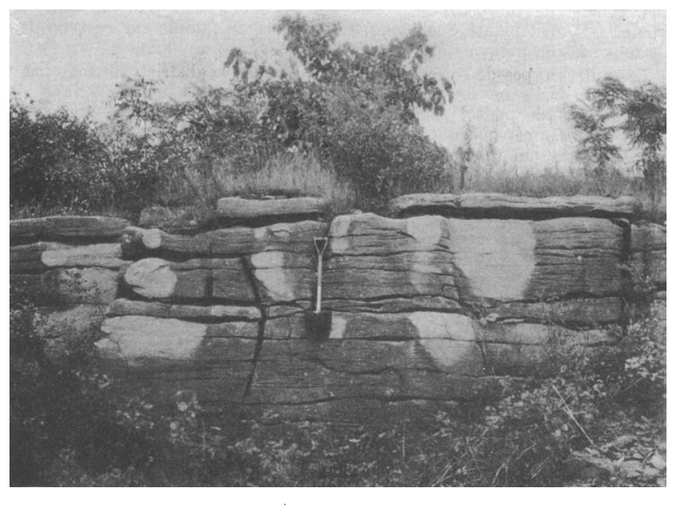
Carrière de pierre à chaux de Caughnawaga montrant l'action des agents atmosphériques sur la formation de Chazy. Photo par J. M. Talbot.
Terre franche de moraine calcifère, phase de gravier profond, près de Sainte-Philomène, P.Q. Les fragments de gravier entrent en violente effervescence au contact de l'acide. Octobre 1936.
42967-3
Saint-Rémi. Elle est toujours mal égouttée et porte souvent à la surface une mince couche de tourbe noire. Elle n'a aucune valeur pour la culture du pommier. Il s'est planté quelques petits vergers de famille sur ce type de sol, mais tous sont en mauvais état et souffrent beaucoup de l'hiver.
Les autres types de sols rencontrés dans deux districts ne sont pas très importants, car ils ne couvrent que de petites étendues isolées. Nous avons trouvé un peu de podsol sablonneux de terre basse légèrement podsolisé, en plaques isolées ainsi que quelques buttes isolées de gravier de terrasse Champlain. Presque tous ces derniers étaient recouverts d'érables à sucre.
Dans le secteur sud-ouest du district de Saint-Rémi, il y a une étendue de tourbe noire. C'est la partie est de la tourbière de Saint-Isidore examinée en 1934 et dont il a été fait rapport par McKibbin et Stobbe (1). Il a été trouvé également un peu de tourbe noire près du lac Saint-Louis dans le district de Châteauguay. Cette tourbe est peu profonde, 1½ à 3 pieds, elle est mal égouttée, mais assez bien décomposée. Il est assez difficile d'améliorer les conditions d'égouttement ici parce que le niveau de la terre est moins élevé que celui de la rivière pendant la crue des eaux au printemps.
En général, on peut dire que les sols des districts de Châteauguay et de Saint-Rémi sont très fertiles et qu'ils conviennent mieux pour la culture des récoltes générales de la ferme que pour celle des arbres fruitiers. Ce n'est que sur les coteaux bien égouttés, doucement ondulés, où le sol est profond et poreux que la plantation des vergers devrait être encouragée. La haute teneur en chaux de ces sols et leur réaction de neutre à alcaline les rendent impropres à la culture de certaines récoltes vendues en nature, comme les pommes de terre, etc.
LES DISTRICTS DES COLLINES MONTÉRÉGIENNES
Les collines montérégiennes sont situées à l'est de Montréal dans une grande plaine reposant sur des roches presque horizontales de la période paléozoïque inférieure. Vue superficiellement cette plaine paraît être absolument plate, et cependant elle présente de petites différences de niveau d'un endroit à l'autre. Sa surface est recouverte de terre fertile, consistant en alluvions glaciaires, redistribués sur cette surface par la mer de Champlain, qui la recouvrait à la fin de la période glaciaire. Cependant, l'étendue uniforme de cette plaine est rompue par plusieurs collines isolées, composées de roches ignées, qui s'élèvent brusquement et constituent des traits très frappants du paysage. Ces collines, situées dans un pays de faible relief, paraissent être plus hautes qu'elles ne sont en réalité et sont toujours désignées dans la localité par le nom de "montagnes". Ces montagnes sont au nombre de huit, et les cinq suivantes ont été examinées au cours de cette reconnaissance : St-Bruno, St-Hilaire (Belœil), Rougemont, Abbotsford (Yamaska) et St-Grégoire (Mt. Johnson). Les districts d'Abbotsford, de Rougemont et de St-Hilaire se trouvent principalement dans le comté de Rouville, le district de St-Grégoire dans le comté d'Iberville et le district de St-Bruno dans le comté de Chambly. Chacun des districts examinés se compose d'une montagne au centre avec une bande de terre plate tout autour. Nous avons dans chaque cas déterminé les limites des étendues examinées de façon à y faire entrer tous les plus grands vergers.
C'est dans les districts des collines montérégiennes que se trouve la plus grande concentration de pommiers de la province de Québec, et l'on peut affirmer sans exagérer que plus d'une moitié des vergers de pommiers de la partie occidentale de la province se cultive dans ces cinq districts. Ces vergers sont presque invariablement établis au centre des flancs des montagnes et aux positions inférieures, où la terre basse s'élève doucement pour rencontrer les pentes.
plaine autour des montagnes est consacrée principalement aux récoltes de grain et de foin, qui viennent très bien. Il se cultive également d'assez grands champs de tomates pour la mise en conserves.
Le district de Rougemont est le plus grand des districts à pommiers des collines montérégiennes; il couvre environ 28 milles carrés. Il se cultive dans ce district près de 130,000 pommiers, qui couvrent 2,600 acres. Le district de St-Hilaire vient deuxième au point de vue du nombre des pommiers; il comprend 91,000 arbres, couvrant 1,800 acres; celui d'Abbotsford vient troisième avec 76,000 arbres, couvrant 1,500 acres. Nous avons examiné quelque 17 milles carrés de terre dans chacun des deux derniers districts mentionnés.
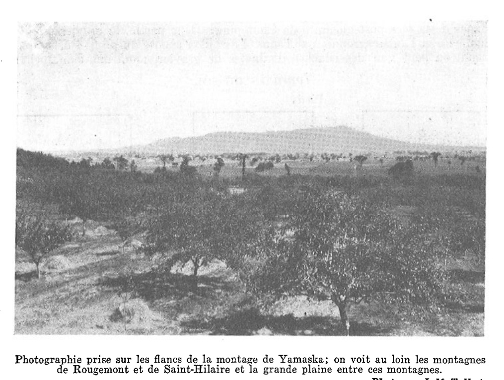
Photographie prise sur les flancs de la montage de Yamaska; on voit au loin les montagnes de Rougemont et de Saint-Hilaire et la grande plaine entre ces montagnes. Photo par J. M. Talbot.
Dans le district de St-Bruno il a été examiné 19 milles carrés, mais seulement 300 acres de cette terre sont cultivés en vergers, qui comprennent au total 15,000 arbres. Le district de St-Grégoire est le plus petit des districts examinés dans le district des collines montérégiennes. Il couvre environ 4 milles carrés, dont 160 acres sont en vergers, comptant 6,500 pommiers.
Les sols de ces cinq districts se ressemblent beaucoup. Au centre de chaque district se dresse une montagne qui couvre un gros pourcentage de la terre examinée, comme on le voit dans les cartes ci-jointes du district. Les montagnes sont d'origine volcanique et se composent principalement de roches ignées. L'intérieur des montagnes est principalement formé d'essexite et de syénite. On trouve à la surface du sol sur les pentes inférieures de ces collines quelques fragments de roche désagrégée et des pierres. Ces roches exposées à l'air sont très friables et se désagrègent aisément, formant un gravier de couleur foncée. Il y a de petits lacs sur le sommet de toutes ces montagnes, sauf sur le mont Johnson dans le district de St-Grégoire. Ces étendues d'eau, à une élévation relativement élevée, produisent une grande pression d'eau et sont souvent la cause d'infiltrations souterraines. Les parties supérieures de ces montagnes sont généralement
42967-3½
très accidentées, pierreuses et impropres à la culture, et elles sont encore recouvertes d'essences d'arbres et d'arbustes à feuilles décidues et de conifères.
Sur les pentes inférieures des collines la surface devient un peu plus lisse. A une élévation de 250 à 500 pieds au-dessus du niveau de la mer, les montagnes sont entourées d'une zone ancienne de gravier de grève, dont la largeur varie beaucoup. Cette couche est toujours plus profonde et plus large sur les pentes du sud et de l'ouest, où elle atteint parfois une largeur d'un mille. Elle devient très étroite sur les pentes du nord et de l'est et parfois disparaît entièrement. Ici les flancs des montagnes sont très raides et tombent généralement tout droit jusqu'au niveau des terres basses. La prépondérance du gravier sur les côtés du sud et de l'ouest est due principalement à la direction des glaciers. La roche a été arrachée des montagnes par les glaciers puis triturée et redéposée par les vagues de la mer post-glaciaire de Champlain. Une partie du gravier est donc anguleuse et l'autre arrondie par l'eau. Lorsqu'on expose un profil suffisamment grand, on peut voir des couches distinctes de gravier, montrant clairement le
Figure 2 — Profils du sol (Gravier de la Terrasse Champlain, Gravelo-argileux montérégien, Phase mal égouttée)
triage opéré par les vagues. Les gravier est trié suivant sa grosseur et probable-ment aussi suivant sa pesanteur spécifique. On trouve généralement dans le sous-sol des couches de fin gravier de couleur foncé, et dans ces couches le gravier se compose principalement de syénite et d'essexite broyés. Il est rare que l'on trouve des traces de gravier à chaux dans ces districts. La profondeur de gravier varie de 3 à 10 pieds et parfois même on trouve des dépôts de 30 pieds de profondeur.
Le gravier de terrasse Champlain est le type principal de sol que l'on rencontre dans cette bande de gravier qui entoure les montagnes. Nous avons déjà discuté ce type de sol en parlant du district de Franklin et il n'y a pas grand'chose à y ajouter ici. Il est unique dans l'uniformité de ses profils. La couleur varie graduellement depuis brun café foncé à brun gris jaunâtre. La profondeur du gravier et la porosité du sol, la réaction acide et la pénétration profonde de la matière organique, ainsi que la composition chimique, sont ses caractères principaux, et ces facteurs sont la grande cause de l'adaptation de ce type de sol à la culture des pommiers sous nos conditions de climat.
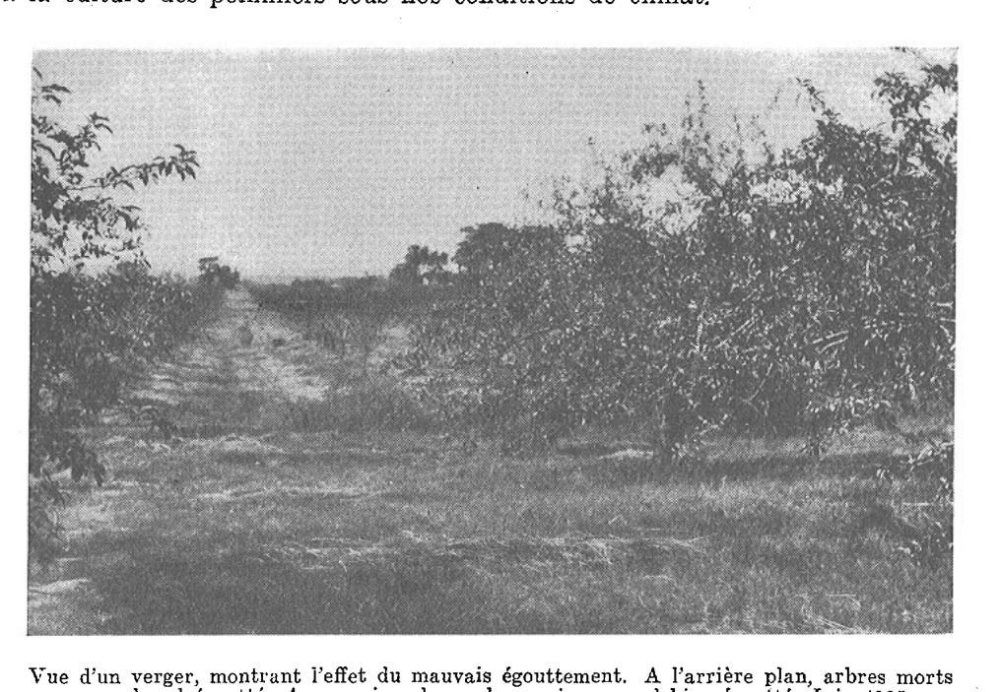
Vue d'un verger, montrant l'effet du mauvais égouttement. A l'arrière plan, arbres morts sur sol mal égoutté. Au premier plan, arbres sains sur sol bien égoutté. Juin 1935.
En général, les graviers de terrasse Champlain sont très bien égouttés; parfois, cependant, l'infiltration de l'eau venant des montagnes cause un mauvais égouttement, surtout lorsque la profondeur du gravier n'est pas très grande. Dans ces cas, le sous-sol devient engorgé et très bigarré. Dans ces sols la matière organique tend à s'accumuler à la surface, parce que l'activité biologique est très restreinte. Ces sols mal égouttés se reconnaissent souvent par la végétation abondante de fougères et d'autres végétaux de marais. Pour corriger cet état de choses, il faudrait contrôler et diriger, par l'emploi de tuyaux ou de fossés ouverts, les petits ruisseaux qui descendent sur les flancs de la montagne et qui sont souvent les émissaires des lacs qui se trouvent au sommet. Il pourrait aussi être utile de creuser des fossés le long des flancs de la montagne pour détourner l'eau et l'empêcher de s'infiltrer dans le sol.
Presque tous les sols de gravier de terrasse Champlain que l'on trouve dans les districts des collines montérégiennes ont été plantés en vergers de pommiers,
et il ne reste qu'une petite étendue à planter. L'étendue de ce type de sol peut se mesurer par celle qui est consacrée à la culture des pommiers dans les différents districts. L'étendue des sols de gravier de terrasse Champlain dans les districts de St-Bruno et de St-Grégoire est petite et le nombre d'arbres cultivés dans ces districts est aussi beaucoup plus faible que dans l'un ou l'autre des trois autres districts. Les pommiers viennent remarquablement bien sur ce type de sol. On y trouve souvent de gros arbres âgés de plus de 80 ans, et l'on n'a pas signalé de désordres comme le “cœur liégeux” dans les pommes produites.
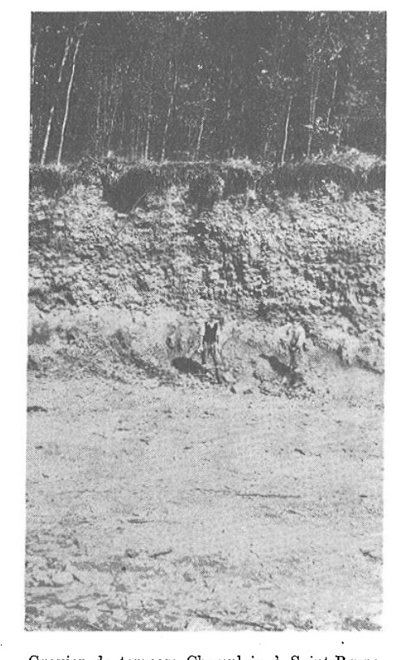
Gravier de terrasse Champlain à Saint-Bruno, P.Q., à 400 pieds au-dessus du niveau actuel moyen de la mer. A noter la profondeur du gravier et l'effet du triage opéré par l'eau dans son dépôt. Septembre 1936.
A mesure que l'on descend des montagnes vers la plaine, on constate une succession graduelle et bien nette de types de sols. Partant des flancs rugueux de la montagne on arrive au gravier de terrasse Champlain; graduellement le gravier devient plus sablonneux et l'on trouve le podsol sablonneux des plaines au bas de la colline. La largeur de ce dernier type varie d'une centaine de verges à plusieurs milles, puis s'il se change en passant par les sols sablo-argileux à l'argile sablonneuse et à l'argile de Champlain sur la terre plate du pays. Le changement d'un type à l'autre est souvent très graduel. Par exemple, le gravier de terrasse Champlain ne se change pas directement en podsol sablonneux, et il a été nécessaire dans cette étude d'établir deux sous-types ou phases. D'abord une phase sablonneuse du gravier de terrasse Champlain dans laquelle le sol a les caractères principaux du gravier de terrasse tout en étant beaucoup
plus sablonneux; la différence est surtout une différence de texture. Deuxième-ment, une phase graveleuse du podsol sablonneux qui est très semblable au podsol sablonneux de la terre basse, mais de texture plus grossière et dans lequel le degré de podsolisation n'est pas très marqué.
Le podsol sablonneux s'est développé sur les vieilles grèves de sable inférieures de la mer post-glaciaire de Champlain. La profondeur de sable varie depuis 2 pieds jusqu'à une vingtaine de pieds. On y trouve des carrières de sable de plus de 30 pieds de profondeur. Le podsol sablonneux de ces districts a généralement une réaction plus acide et il est mieux développé que dans les districts d'Oka-St-Joseph et d'Hemmingford, quoiqu'il y ait une variation considérable dans le degré de podsolisation. On trouve fréquemment des podsols bien développés à couche lessivée de 4 pouces et plus et à sous-sol compact, cimenté, rouge foncé. Quelques sables ont été balayés par le vent et le profil
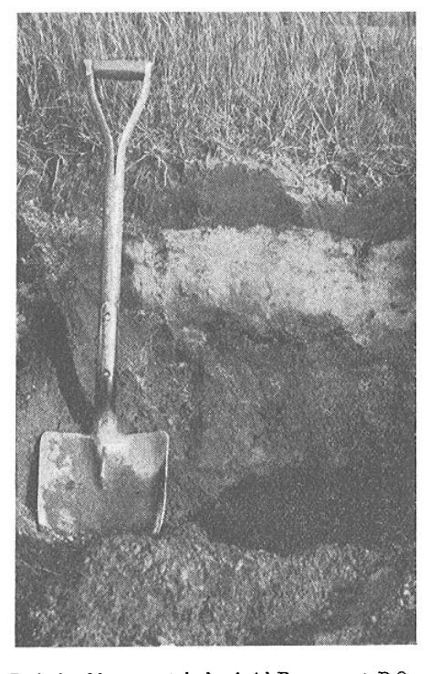
Podsol sablonneux très lessivé à Rougemont, P.Q.
ne présente pas aujourd'hui de couches distinctes, mais ils ont une réaction très acide, semblable à celle du podsol bien développé. Dans les sols cultivés la couche lessivée a été très mélangée avec les autres couches et peut à peine être notée. Le podsol sablonneux de ces districts est souvent mal égoutté, surtout sur les terres plates, à quelque distance de la montagne. La phase mal égouttée n'est pas tout à fait aussi acide que la phase bien égouttée. La couche de surface est généralement plus épaisse, plus riche en matière organique et ressemble souvent à une terre noire peu profonde. Le sous-sol est très bigarré, froid, humide et contient généralement beaucoup de carbonate de chaux. La profondeur du sable n'est pas généralement très grande dans le sol mal égoutté. La couche d'argile limoneuse et dispersée sous-jacente à une profondeur de 3 à 6 pieds, est généralement la cause de la rétention de l'eau. Le podsol sablonneux est présent dans chacun des cinq districts examinés dans les collines monté-
régiennes, mais il est plus commun dans le district d'Abbotsford que dans tous les autres districts. Il s'étend ici bien au delà de la terre examinée dans le sud et dans l'est, tandis que dans les autres districts il ne forme qu'une bande étroite autour des montagnes et il est même parfois presque absent sur le côté est.
Un certain nombre de vergers ont été plantés sur ce type de sol, spécialement sur les phases bien égouttées et graveleuses. Beaucoup de vergers ont été plantés en ces dernières années, mais il s'y trouve quelques vergers plus anciens. Les plus grandes plantations sur ce type de sol se trouvent dans les districts de Rougemont et de St-Hilaire. Le arbres poussent très bien, mais ont une végétation beaucoup plus lente qu'ailleurs. La culture des pommiers donne de bons résultats sur ce type de sol, mais elle exige d'autres engrais et une autre préparation que sur les graviers plus fertiles de terrasse Champlain. La phase mal égouttée du podsol sablonneux ne convient pas pour la culture des pommiers et plusieurs essais d'établissement de vergers sur ce type de sol ont été coûteux et désastreux.
Un podsol d'une nature quelque peu différente a été trouvé dans le district de St-Bruno. La montagne de St-Bruno diffère des autres montagnes par le fait qu'elle ne forme pas un ou deux sommets, mais un certain nombre de petits mamelons. Le sol dans les dépressions entre ces mamelons est du sable grossier ou fin, très acide et fortement podsolisé. Il ressemble quelque peu au podsol pierreux de la terre haute dans le district de Franklin-Hemmingford. Il est très pierreux et c'est pourquoi il n'a pas été dépouillé de ses arbres.
Les analyses chimiques et physiques des sols montérégiens représentatifs sont données au tableau 5. On voit par ce tableau que le gravier de terrasse Champlain provenant du district de St-Hilaire, (échantillons 83, 92, 81 et 106) est plus acide que celui des autres districts. Les échantillons 50 et 51 provenant du district d'Abbotsford sont les moins acides des sols de gravier de terrasse. La couche de surface de ce type de sol est très riche en matière organique, comme le fait voir la perte sur incinération (9% à 15%) et le carbone organique (3% à 10%). Dans la phase sablonneuse du gravier de Champlain et dans le podsol sablonneux, la teneur en matière organique est bien inférieure à celle du gravier normal de terrasse. Il est également à noter que la matière organique s'étend dans le sous-sol du gravier de terrasse Champlain beaucoup plus que dans la phase sablonneuse et le podsol sablonneux.
Cette forte teneur en matière organique du gravier de terrasse s'associe à des pourcentages élevés d'azote total dans les couches de surface. Le podsol sablonneux ne contient que de petites quantités d'azote total et la phase sablonneuse de la terre gravelo-argileuse occupe une position intermédiaire.
Les sols des districts montérégiens sont beaucoup moins riches en calcium que les sols calcifères des districts déjà passés en revue. Le gravier normal de terrasse Champlain a une plus forte teneur en calcium que la phase sablonneuse. Dans ces deux sols il y a plus de calcium dans le sous-sol qu'à la surface. Dans le podsol sablonneux cette différence entre la teneur en calcium de la surface et du sous-sol n'est pas aussi prononcée. On constate une grande variation de la teneur en CaO entre les différents échantillons de podsol sablonneux provenant des districts montérégiens. Les échantillons 40 et 52 viennent du district d'Abbotsford et ils contient plus de chaux qu'aucun des autres sols des collines montérégiennes qui ont été analysés. Il est à noter cependant que l'échantillon N° 52 provenait d'un profil de podsol bien développé.
Nous avons déjà vu que les podsols sablonneux se rencontrent à des élévations plus basses et que leur forte teneur en chaux est probablement due à une accumulation de chaux soluble emportée des couches supérieures par les eaux. Les podsols sablonneux du district d'Abbotsford sont riches non seulement en calcium mais aussi en magnésium.
Les échantillons de sols de podsol sablonneux des autres collines montérégiennes et la phase sablonneuse de la terre sablo-argileuse ne contiennent que relativement peu de magnésium. Le gravier de terrasse Champlain contient presque
TABLEAU 5.—COMPOSITION CHIMIQUE ET PHYSIQUE DES ÉCHANTILLONS DE SOL PROVENANT DES COLLINES MONTÉRÉGIENNES
Echantillon N°
Analyse chimique (Après séchage au four)
Analyse physique
41
Humidité hygroscopique %
Perte sur cinération %
Valeur en pH
Besoins en chaux liv. de CaO par acre
CaO %
MgO %
Mn3O4 %
K2O %
SiO2 %
Fe2O3+Al2O3+TiO3 %
P2O5 %
SO3 %
N %
C organique %
Gravier >1 mm. %
Sable 1-0.05 mm. %
Limon 0.05-0.005 mm. %
Argile totale 0.005-0 mm. %
Argile fine 0.002-0 mm. %
Gravier de terrasse Champlain
50 A...... B...... C......
3·06 1·86 0·60
13·24 6·22 3·18
5·25 6·50 6·30
2,392 433 506
1·00 1·51 2·60
0·65 1·20 1·41
0·204 0·131 0·117
1·86 6·42 2·33
61·3 64·2 67·0
19·8 20·6 26·2
0·217 0·184 0·181
0·195 0·116 0·080
0·38 0·08 0·04
4·31 1·15 0·42
53·0 68·0 71·0
26·4 26·8 18·9
15·4 3·9 7·6
5·2 1·3 2·5
2·6 1·0 2·0
51 A...... B...... C......
2·38 1·80 0·75
10·05 5·60 3·26
6·00 5·60 5·80
2,595 1,159 2,030
2·14 1·90 2·97
1·05 1·10 2·32
0·225 0·153 0·094
1·85 1·97 1·86
64·2 66·5 68·2
21·5 20·7 20·8
0·208 0·107 0·057
0·149 0·071 0·007
0·25 0·05 0·03
2·93 0·97 0·30
44·0 62·0 52·5
36·0 27·8 43·3
16·4 7·5 3·2
3·6 2·7 1·0
3·4 2·3 0·5
119 A...... B...... C......
2·52 2·19 1·13
9·10 6·15 4·34
4·26 5·06 5·23
4,680 2,160 1,440
1·77 2·18 1·16
1·53 1·96 2·29
0·092 0·241 0·145
2·10 2·04 2·01
63·5 63·5 63·0
22·6 23·6 24·1
0·245 0·344 0·360
0·210 0·181 0·206
0·35 0·21 0·15
3·64 1·87 1·16
50·0 70·0 83·0
26·1 18·8 12·0
19·5 7·6 3·6
4·4 3·6 1·4
2·9 2·0 1·0
128 A...... B...... C......
4·64 3·21 2·68
17·67 7·70 6·24
5·28 5·46 5·50
3,960 2,520 1,800
2·48 1·97 3·49
1·34 1·34 1·38
0·121 0·090 0·180
1·72 1·84 2·18
48·5 61·9 56·7
20·1 24·5 29·0
0·276 0·258 0·336
0·298 0·199 0·203
0·65 0·23 0·17
10·31 3·21 2·20
50·0 70·0 75·0
- 15·2 17·7
10·2 5·2
4·6 2·1
3·9 1·6
83 A...... B......
3·16 1·88
15·03 5·87
4·85 5·73
5,856 915
2·91 3·38
1·78 2·06
0·140 0·152
2·10 1·93
59·4 61·4
23·4 18·4
0·338 0·147
0·271 0·230
0·45 0·11
5·55 0·98
51·0 53·0
27·8 31·6
16·3 11·3
4·9 4·1
3·5 3·2
92 A...... B...... C......
2·20 0·70 0·54
11·53 2·91 2·18
4·69 4·50 4·94
4,026 1,098 732
1·93 2·01 2·20
0·72 0·54 0·71
0·053 0·028 0·057
2·09 2·27 2·17
71·3 79·4 74·1
17·1 16·8 19·8
0·245 0·057 0·125
0·172 0·166 0·185
0·30 0·05 0·02
4·35 0·58 0·28
47·0 43·0 61·0
27·0 41·8 22·5
19·5 8·9 10·8
6·5 6·3 5·7
4·5 5·7 4·3
Gravier de terrasse Champlain, phase sablonneuse
81 A...... B...... C......
1·50 0·94 0·53
7·15 3·45 2·27
4·89 4·35 4·90
3,294 1,830 732
1·59 1·69 2·15
0·74 0·94 0·96
0·048 0·062 0·052
1·97 1·96 1·96
71·5 74·9 75·0
16·1 17·6 17·7
0·141 0·045 0·121
0·162 0·114 0·144
0·16 0·08 0·02
2·60 0·89 0·26
36·0 28·0 31·0
48·3 56·7 39·0
11·6 9·7 21·1
4·1 5·6 8·9
3·1 3·7 6·5
106 A...... B...... C......
0·92 0·37 0·29
5·18 1·83 1·28
4·98 4·62 4·33
2,928 1,098 732
2·08 2·36 2·70
0·56 0·68 0·69
0·059 0·042 0·066
2·10 2·07 1·97
76·1 78·4 76·7
17·0 16·1 17·7
0·087 0·101 0·095
0·199 0·185 0·228
0·16 0·05 0·02
1·93 0·54 0·37
29·0 32·5 25·0
58·2 63·5 73·4
9·7 3·0 1·6
3·1 1·0 0
2·3 0·7 0
135 A...... B...... C......
1·38 0·37 0·18
6·40 1·39 0·58
4·65 5·70 5·75
3,587 880 366
1·75 1·70 1·95
0·63 0·65 0·71
0·059 0·066 0·031
1·97 2·12 2·34
69·8 75·6 76·9
17·0 16·2 16·2
0·208 0·120 0·113
0·180 0·093 0·115
0·26 0·06 0·05
2·70 0·51 0·34
29·0 22·0 8·0
52·9 68·5 85·4
11·8 7·8 6·7
6·3 1·5 0
4·3 1·0 0
129 A...... B...... C......
1·71 0·66 0·69
8·70 1·36 1·74
5·40 5·80 5·74
2,736 720 720
1·91 1·72 2·16
0·77 0·96 0·94
0·068 0·043 0·066
2·16 2·18 2·43
69·0 77·5 75·4
16·3 15·8 16·9
0·210 0·131 0·168
0·330 0·158 0·166
0·34 0·05 0·06
3·87 0·54 0·53
28·0 24·5 48·0
56·0 56·5 47·7
12·0 6·7 3·0
4·0 2·3 1·3
3·0 1·2 1·1
TABLEAU 5. — COMPOSITION PHYSIQUE ET CHIMIQUE DES ÉCHANTILLONS DE SOL PROVENANT DES COLLINES MONTÉRÉGIENNES
Échantillon No
Besoins en chaux liv. de CaO par acre
Analyse chimique (Après séchage au four)
Analyse physique
42
Humidité hygroscopique %
Perte sur incinération %
Valeur en pH
CaO %
MgO %
Mn3O4 %
K2O %
SiO2 %
Fe2O3+Al2O3+TiO3 %
P2O5 %
SO3 %
N2 %
C
Gravier > 1 mm. %
Sable 1-0.05 mm. %
Limon 0.05-0.005 mm. %
Argile totale 0.005-0 mm. %
Argile fine 0.002-0 mm. %
organique %
total %
Sablo-argileux montérégien
111 A…… B…… C……
1·19 0·86 1·60
4·03 2·10 2·32
4·84 4·62 5·62
2,160 1,440 720
1·86 1·90 1·68
0·88 0·91 0·88
0·040 0·032 0·067
1·89 2·47 2·30
71·8 73·1 71·5
18·1 18·9 21·9
0·188 0·204 0·086
0·133 0·115 0·086
0·16 0·08 0·06
1·62 0·57 0·26
— 2·0 4·0
53·7 58·5 39·0
29·5 26·9 33·6
16·8 12·6 23·4
12·3 9·4 18·0
79 A…… B…… C……
1·72 0·26 0·36
7·66 1·11 1·84
5·13 5·75 8·10
2,928 0 0
1·75 1·91 2·34
0·83 0·56 0·75
0·078 0·033 0·043
1·99 1·99 2·21
72·0 77·8 73·5
14·8 15·3 17·5
0·165 0·127 0·130
0·238 0·147 0·222
0·23 0·03 0·02
2·62 0·21 0·23
15·0 14·0 15·0
58·6 61·3 42·5
18·2 13·2 33·5
8·2 11·5 9·0
6·8 10·9 8·2
109 A…… B…… C……
3·00 0·50 0·46
9·00 1·70 1·45
5·55 5·57 5·13
3,240 720 360
1·50 1·80 1·82
0·65 0·87 0·86
0·135 0·036 0·055
2·07 2·16 2·53
68·2 18·1 74·0
16·9 18·9 18·5
0·239 0·130 0·156
0·269 0·114 0·099
0·38 0·05 0·03
4·28 0·51 0·24
23·0 28·0 21·0
44·9 40·1 44·6
12·2 17·7 16·6
19·9 14·2 17·8
17·8 12·9 14·8
Sablo-argileux de Champlain
115 A…… B1…… B2…… C……
1·43 1·15 2·36 2·69
4·15 1·64 2·37 2·47
5·84 7·06 6·36 6·83
1,720 0 0 0
2·27 2·24 2·34 2·22
0·94 0·96 2·00 1·41
0·046 0·048 0·072 0·061
2·22 2·08 2·82 3·04
71·8 73·6 63·3 61·6
18·8 19·9 26·2 29·9
0·199 0·194 0·239 0·216
0·125 0·146 0·177 0·140
0·18 0·03 0·04 0·06
1·95 0·21 0·13 0·14
0 0 0 0
46·7 59·7 13·6 8·9
29·3 18·1 21·1 19·7
24·0 22·2 65·3 71·4
8·2 8·1 58·2 64·7
124 A…… B1…… B2…… C……
1·19 1·03 0·78 1·03
5·19 2·22 2·76 8·50
5·94 7·57 8·49 8·50
1,800 0 0 0
1·83 2·22 3·38 3·65
0·92 1·11 1·28 1·56
0·033 0·076 0·061 0·070
2·00 2·32 2·56 2·11
74·8 71·0 69·0 66·7
16·5 19·8 20·4 21·4
0·148 0·203 0·301 0·292
0·119 0·117 0·102 0·122
0·16 0·06 0·02 0·03
2·36 0·28 0·39 0·33
5·5 20·0 0 0
48·4 33·2 26·6 19·9
20·4 21·3 38·2 36·9
25·7 25·5 35·2 43·2
22·0 22·8 28·9 35·9
69 A…… B…… C……
1·96 1·82 2·27
6·52 3·11 3·26
5·64 6·03 6·52
4,680 3,345 2,680
1·67 1·60 1·72
0·89 0·97 0·95
0·038 0·052 0·063
1·85 2·05 2·33
69·8 69·2 66·4
20·3 22·1 24·1
0·203 0·139 0·132
0·162 0·121 0·143
0·19 0·04 0·02
2·62 0·35 0·20
0 0 0
48·0 48·0 31·6
24·0 22·8 24·8
27·6 29·2 43·6
21·6 24·8 37·2
71 A…… B…… C……
2·21 1·00 0·36
8·58 2·52 1·43
5·42 5·95 6·92
4,680 2,344 1,336
1·36 1·70 1·90
1·05 0·84 1·12
0·043 0·062 0·066
1·67 1·94 1·98
68·2 71·0 72·2
20·2 22·0 21·8
0·198 0·165 0·177
0·189 0·145 0·153
0·22 0·03 0·03
0·37 0·41 0·23
1·0 5·0 7·0
41·7 34·3 46·5
34·0 32·9 24·9
23·3 27·8 21·6
19·9 21·6 15·2
Argile de Champlain
113 A…… B…… C……
3·54 2·08 2·73
10·10 3·09 3·04
5·60 6·31 6·64
2,880 432 720
1·74 2·15 2·26
1·53 1·49 1·24
0·131 0·080 0·073
2·14 2·62 2·05
57·5 66·7 62·4
25·1 24·0 26·9
0·223 0·155 0·174
0·182 0·094 0·152
0·35 0·06 0·08
4·10 0·32 0·22
0 0 0
22·2 31·9 15·2
28·5 27·1 19·6
49·3 41·0 65·2
32·0 17·5 59·0
68 A…… B…… C……
4·46 2·82 1·78
15·38 5·71 5·88
6·24 6·72 8·31
4,010 1,336 0
1·85 1·95 3·90
1·31 1·81 2·30
0·049 0·045 0·102
1·92 2·59 2·67
55·0 59·8 57·2
24·6 27·7 29·9
0·192 0·157 0·111
0·180 0·136 0·131
0·33 0·08 0·06
7·20 1·29 0·59
0 0 0
14·8 11·4 9·2
25·6 15·4 14·4
59·6 73·4 76·4
50·4 66·8 69·6
80 A...... B...... C......
6·04 3·28 1·08
15·54 3·94 1·07
5·62 6·06 6·45
3,350 3,350 1,672
1·52 2·13 2·60
1·17 1·30 1·27
0·038 0·079 0·055
2·01 2·30 62·8
54·2 66·4 62·8
26·2 25·6 30·0
0·262 0·219 0·273
0·198 0·143 0·126
0·26 0·05 0·01
6·64 1·11 0·44
2·5 2·5 3·5
24·9 19·8 22·5
24·7 21·9 22·0
47·9 55·8 53·0
39·8 49·6 16·2
77 A...... B...... C......
2·59 3·06 3·45
10·52 7·67 7·39
5·30 6·39 6·50
2,928 1,830 732
1·89 2·03 2·39
1·23 1·09 2·12
0·077 0·102 0·089
2·18 2·74 2·54
62·9 60·3 60·3
20·9 25·7 25·6
0·237 0·196 0·112
0·204 0·183 0·158
0·24 0·09 0·05
3·38 0·86 0·37
6·0 4·0 2·0
28·5 25·2 13·5
20·3 13·2 11·0
44·8 57·6 73·5
24·8 51·5 65·1
Gravelo-argileux montrégien
76 A...... B......
4·22 2·66
11·75 5·24
6·13 6·24
4,010 2,680
1·34 1·19
1·67 0·82
0·109 0·089
2·11 2·37
57·4 64·9
27·6 29·4
0·185 0·189
0·211 0·139
0·31 0·12
5·46 1·61
43·0 70·0
29·1 19·8
17·1 5·1
10·8 5·1
9·1 4·5
41 A...... B...... C......
2·24 0·98 0·18
10·07 4·92 1·64
5·45 6·06 6·22
3,662 0 0
1·52 0·98 1·88
0·81 0·43 0·72
0·147 0·073 0·065
2·32 2·58 2·63
63·0 67·5 72·2
21·7 25·4 21·0
0·126 0·250 0·306
0·209 0·151 0·123
0·41 0·19 0·52
4·98 1·53 0·52
47·0 77·0 49·0
31·0 13·0 32·0
16·6 6·0 13·5
5·5 3·9 5·2
4·4 3·0 4·2
133 A...... B......
2·15 1·12
13·00 4·18
5·15 5·68
4,760 1,465
1·19 1·29
0·81 0·82
0·113 0·072
2·67 2·44
60·0 71·6
20·8 19·4
0·271 0·143
0·176 0·168
0·46 0·14
6·02 1·51
65·0 68·0
17·4 23·9
9·3 5·2
8·4 3·0
5·5 2·2
Podsol sablonneux
118 A...... B...... C......
1·34 0·18 0·25
5·03 0·51 0·70
4·55 4·38 4·14
2,520 408 360
1·57 1·91 1·93
0·51 0·68 0·67
0·041 0·028 0·030
2·10 2·28 2·73
73·4 79·2 79·4
15·6 14·6 14·9
0·187 0·117 0·126
0·200 0·146 0·142
0·15 0·04 0·03
2·33 0·21 0·21
4·0 9·0 13·0
79·6 82·8 81·1
10·2 4·7 4·7
6·2 3·5 1·2
3·8 1·9 0·6
131 A...... B...... C......
1·67 0·35 0·33
10·11 1·47 1·19
5·51 5·66 5·30
2,160 504 720
2·40 2·40 2·28
0·77 0·89 0·78
0·030 0·035 0·024
2·97 2·18 3·86
71·5 77·7 78·5
16·3 16·1 15·6
0·167 0·088 0·127
0·197 0·158 0·143
0·23 0·02 0·04
3·17 0·33 0·19
9·0 12·0 17·0
69·5 83·0 79·7
10·4 4·4 3·1
11·1 0·6 0·2
5·9 0·4 0
40 A...... B...... C......
1·44 0·72 0·61
7·18 3·36 2·96
6·00 5·90 5·70
2,024 967 794
4·69 3·56 3·41
3·05 2·77 3·22
0·100 0·079 0·090
2·19 2·61 2·63
67·4 69·2 68·1
14·5 18·6 19·0
0·132 0·154 0·167
0·117 0·075 0·076
0·12 0·03 0·04
2·06 0·45 0·30
17·0 20·5 41·0
71·0 73·3 54·5
7·5 4·0 2·8
4·5 2·2 1·7
2·5 0·8 0·4
52 A...... A¹...... B¹...... B²...... C......
1·66 0·25 0·99 0·37 0·16
8·58 1·25 4·38 1·42 0·61
5·70 5·60 5·00 6·00 5·60
2,748 2,102 3,550 1,375 1,375
2·71 2·68 3·63 3·66 3·95
2·33 2·30 1·91 2·20 2·39
0·027 0·015 0·027 0·027 0·037
1·84 1·99 2·35 2·61 2·49
70·8 78·5 75·1 76·1 72·8
13·7 12·0 14·1 14·4 15·6
0·062 0·036 0·068 0·072 0·053
0·115 0·066 0·084 0·072 0·064
0·11 0·02 0·05 0·02 0·01
3·26 0·61 1·47 0·45 0·15
1·0 0 0·5 2·0 0·5
81·1 83·6 93·3 92·0 96·3
12·7 12·2 4·0 3·9 2·0
5·2 4·2 2·2 2·1 1·2
4·0 3·8 1·6 1·2 0·6
80 A...... B...... C......
1·08 0·69 0·52
4·50 1·99 1·41
5·50 5·43 5·85
1,464 732 0
1·88 1·94 1·95
0·66 0·68 0·75
0·083 0·056 0·063
1·96 1·96 1·97
75·8 76·4 75·8
14·2 14·7 16·4
0·125 0·112 0·048
0·214 0·230 0·145
0·09 0·05 0·02
1·05 0·48 0·23
6·0 2·0 18·5
85·4 93·0 80·3
5·1 3·6 1·3
3·5 1·4 0·2
2·4 0·5 0·2
96 A...... B...... C......
0·70 0·46 0·17
4·59 2·00 0·82
5·54 5·35 4·34
1,464 732 366
2·03 2·22 1·98
0·53 0·47 0·42
0·064 0·033 0·035
2·44 2·27 2·46
76·4 76·1 78·4
16·2 19·0 15·8
0·101 0·077 0·074
0·148 0·206 0·195
0·12 0·05 0·03
1·84 0·19 0·16
11·0 8·0 13·5
79·3 87·4 84·5
7·2 3·5 1·9
2·5 1·1 0·1
1·9 0·9 0·1
toujours plus de magnésium que la phase sablonneuse aux élévations plus basses. Il en est de même en ce qui concerne la teneur en manganèse de ces sols. Le manganèse est présent en plus grande quantité dans les sols graveleux que dans les sols sablonneux, et cette différence est plus marquée que pour le magnésium. La teneur totale en potasse de ces sols varie beaucoup, mais il n'y a pas de différence bien nette entre les différents types. On constate une gradation bien nette dans la teneur en phosphore par opposition au potassium. La proportion de phosphore est plus élevée dans le gravier de terrasse Champlain, intermédiaire dans la phase sablonneuse et plus faible dans le podsol sablonneux. Ce changement graduel est également à noter dans la relation SiO2/R2O3. C'est dans le gravier de terrasse que cette relation est la plus large.
Les résultats des analyses chimiques présentés au tableau 5 confirment les observations qui ont été faites dans le champ, à savoir le changement graduel du gravier de terrasse Champlain au podsol sablonneux à mesure que l'on descend des niveaux plus élevés vers les niveaux plus bas. Les résultats des analyses mécaniques présentés au tableau 5 confirment également ces observations.
PROFILS DU SOL
7
A1 Brun cholocat moyen. Sablo-argileux fin
A2 Sable fin lessivé.
B1 Sable fin légèrement compact, brun rougeâtre foncé.
B2 Sable fin, peu tassé, brun jaunâtre.
C Sable fin gris.
8
A1 Sablo-argileux fin brun chocolat foncé à noir.
A2 Sable fin lessivé.
B1 Sable fin, compact, rouge foncé.
B2 Sable fin gris clair, très bigarré.
C Sablo-argileux fin gris foncé; compact; bigarré; parfois mélangé d'argile.
9
A. Sablo-argileux; riche en matière organique; pH 7.0.
B. Sablo-argileux noir gris brunâtre; bigarré; compact; peu de roches; effervescence légère.
C. Sol sablo-argileux gris, compact; structure laminée; bigarré; violente effervescence au contact de HCl.
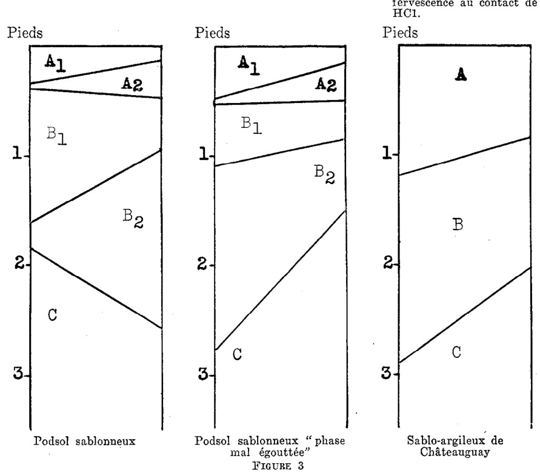
FIGURE 3
Podsol sablonneux Podsol sablonneux "phase Sablo-argileux de
mal égouttée" Châteauguay
Un type de sol qui n’a pas encore été mentionné dans ce rapport est celui qui a été trouvé dans les districts de St-Bruno et de St-Grégoire et qui est indiqué sur la carte comme terre gravelo-argileuse montérégienne. Ce sol est semblable sous bien des rapports au gravier de la terrasse Champlain et tous deux se rencontrent aux mêmes élévations et aux mêmes positions topographiques. Ils diffèrent cependant par les matériaux de formation géologique. Le gravier de la terre gravelo-argileuse montérégienne est rude et anguleux au lieu d'être arrondi et déposé par l'eau, et il est formé in situ de la roche schisteuse sous-jacente. La roche sous-jacente est souvent à deux ou trois pieds de la
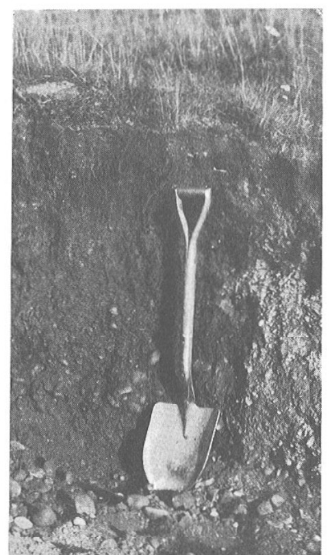
“ Gravier caractéristique de Terrasse Champlain ” à Rougemont, P.Q. Photographie par J. M. Talbot.
surface. L'action de l'eau a probablement exercé une certaine influence sur ce type de sol, mais l'effet n'est pas aussi prononcé que dans le cas du gravier de la terrasse Champlain. Les morceaux de gravier sont plus mous et s’émiettent plus aisément. Lorsqu'il est mal égoutté le sous-sol devient plus compact et bigarré, et s'oppose au libre passage de l'eau du sol. Ce type de sol n’occupe qu'une étendue limitée, mais on y trouve de très bons vergers.
Dans sa composition chimique l'argile graveleuse montérégienne est très semblable au gravier de terrasse Champlain, ainsi qu'il peut être constaté au
tableau 5. La teneur en potasse de la terre gravelo-argileuse montérégienne est un peu plus élevée et la teneur des autres bases est plus faible que dans le gravier de terrasse Champlain.
La terre sablo-argileuse montérégienne est un sol de transition entre le podsol sablonneux et l'argile sablonneuse de Champlain. Elle ressemble bien des rapports à la terre sablo-argileuse de Champlain, qui est classée comme sol intermédiaire correspondant dans les districts de sols calcaires, dans le Québec-ouest. La teneur en chaux et la réaction correspondante forment la différence principale entre ces deux sols. Ce sol est une terre sablo-argileuse profonde, friable, à texture un peu plus lourde à quelque 3 ou 4 pieds de profondeur et qui repose sur de l'argile de Champlain à une plus grande profondeur. Le sol de surface a une réaction acide; celle du sous-sol est presque neutre.
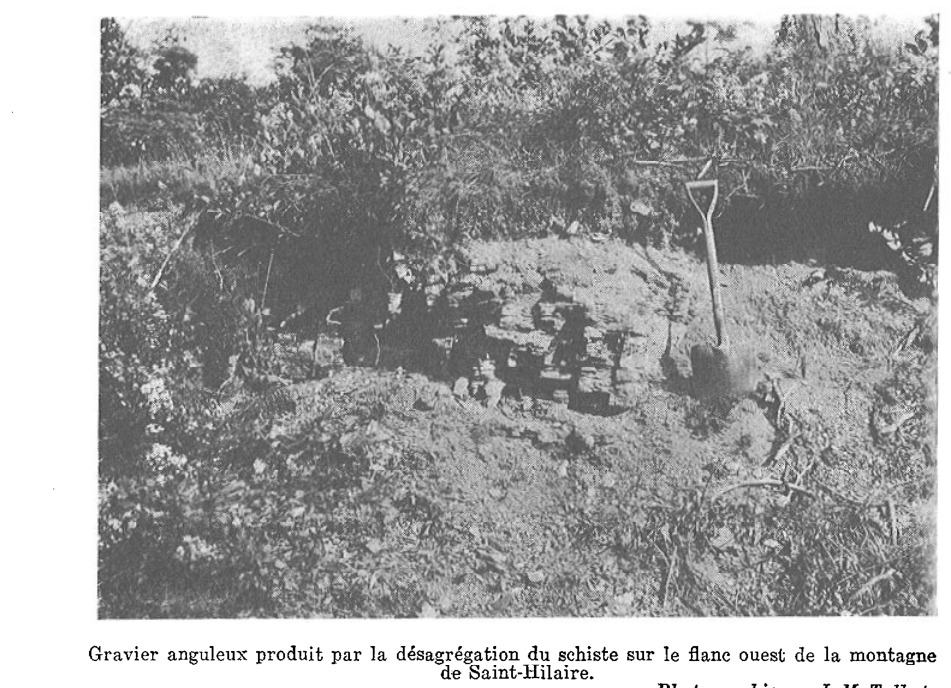
Gravier anguleux produit par la désagrégation du schiste sur le flanc ouest de la montagne de Saint-Hilaire. Photographie par J. M. Talbot.
Dans les cas où l'égouttement est mauvais à cause du relief topographique et du sous-sol très argileux, des signes caractéristiques de sols mal égouttés peuvent être notés. Le sol sablo-argileux bien égoutté est très fertile et se travaille aisément. La plupart des récoltes à conserves cultivées dans ces districts se trouvent sur ce type de sol.
Si l'on compare les analyses chimiques de la terre sablo-argileuse montérégienne données au tableau 5 avec celles de la terre sablo-argileuse de Champlain, présentées au tableau 4, on constate que les premières ont une réaction plus acide que la terre franche de Champlain. La teneur en calcium de la couche de surface de ces deux sols est à peu près la même, mais dans le sous-sol de la terre sablo-argileuse de Champlain cet élément est presque deux fois plus abondant que dans la terre franche montérégienne. Le seul autre constituant dont la quantité diffère tant soit peu dans ces deux types de sol est le phosphore total. Cet élément est plus abondant dans la terre sablo-argileuse de Champlain que dans la terre montérégienne.
Le sol de la terre plate entre les montagnes se compose principalement de terre sablo-argileuse de Champlain qui est essentiellement la même que celle que nous avons déjà étudiée. Il y a cependant beaucoup de variation dans la texture de ces argiles, comme on peut le constater au tableau 5. Parfois l'argile est très lourde et dans ce cas elle est inscrite sur la carte comme argile de Champlain. Les plus grandes étendues d'argile de Champlain présentées sur la carte sont dans le secteur nord-ouest du district de Rougemont et le secteur est du district de St-Bruno. La couche de surface de l'argile de Champlain est de 10 pouces à 12 pouces de profondeur; c'est une argile de structure granuleuse d'un brun chocolat foncé à noir. Elle se prend en mottes dures en séchant et se fendille. Le sous-sol, jusqu'à une profondeur d'environ 3 pieds est brun grisâtre lorsqu'il est sec, d'une structure grossière et granuleuse, très collant lorsqu'il est humide et dur lorsqu'il est sec. Le sol de cette couche est légèrement bigarré; sa réaction est neutre à légèrement alcaline. A 3 pieds le sol prend une couleur
PROFILS DU SOL
Pieds
Pieds
Pieds
A
1
B
2
C
3
A
1
B
2
C
3
A
1
B
2
C
3
10
A. Argilo-sableux brun chocolat foncé; structure granuleuse fine, friable.
B. Sablo-argileux gris brunâtre; structure granuleuse grossière à grossière.
C. Sablo-argileux gris, structure grossière; légèrement bariolé et compact; quelques concrétions de chaux.
Argilo-sableux de Champlain
11
A. Sablo-argileux brun chocolat intermédiaire; friable.
B. Sablo-argileux gris brunâtre; friable.
C. Sablo-argileux gris, légèrement compact et un peu bariolé. Légère effervescence sur HCl.
Sablo-argileux de Champlain.
12
A. Limono-argileux grossier brun chocolat intermédiaire; un peu de gravier anguleux et quelques fragments de schiste.
B. Limono à sablo-argileux brun rougeâtre foncé; pourcentages variables de fragments de gravier anguleux et de schiste.
C. Limono à sablo-argileux grossier brun grisâtre, très compact et dur; fragments de schiste; bariolé.
Franc de Brome
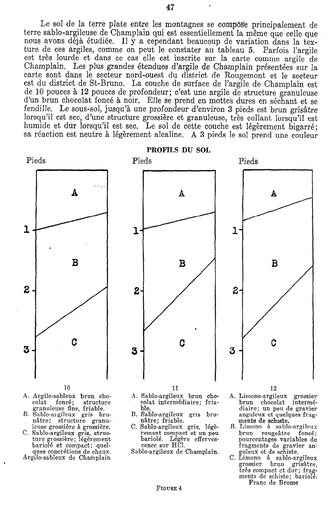
FIGURE 4
gris clair. La structure est grossière, en fragments petits et gros, à surface luisante et lisse; en général, il entre en effervescence violente au contact de l'acide.
Les résultats des analyses présentés au tableau 5 montrent qu'il n'y a pas de différence marquée entre la composition chimique des deux argiles de Champlain, à l'exception de la matière organique et de la quantité totale d'azote. Ces éléments sont présents en plus grande quantité dans l'argile de Champlain que dans la terre sablo-argileuse. L'abondance de ces éléments dans la couche de surface de l'argile lourde est due principalement au pauvre égouttement de l'argile de Champlain et à l'accumulation de matière organique qui en résulte. Les données du tableau 5 montrent également que les éléments fertilisants ne sont pas présents en quantités aussi considérables que dans quelques-uns des autres types de sols déjà passés en revue dans ce rapport. Quoi qu'il en soit, le meilleur équilibre de ces éléments dans le sol et la possibilité que quelques-uns d'entre eux puissent être plus aisément assimilables pour la végétation des plantes sont la cause de la grande productivité de ces sols.
En raison de leur pauvre relief topographique et de leur mauvais égouttement, ces sols argileux ne conviennent pas très bien pour la culture du pommier. Quoi qu'il en soit, ils peuvent se classer parmi les sols agricoles les plus productifs de cette province, car ils produisent d'excellentes récoltes de grain et de foin.
DISTRICT DE FRELIGHSBURG
Le district de Frelighsburg est dans le comté de Missisquoi, à une cinquantaine de milles au sud-est de Montréal. Nous n'avons pu jusqu'ici, faute de temps, faire un examen complet de toute la terre de ce district, et seule la terre actuellement en vergers a été examinée. Les cultivateurs de ce district, qui se sont spécialisés dans l'industrie laitière, ont pris un vif intérêt dans la culture du pommier en ces dernières années et quelque 40,000 arbres ont été plantés dans le district de Frelighsburg, au cours de la dernière décade. La plupart de ces arbres ne sont pas encore entrés en rapport, mais les résultats obtenus jusqu'ici donnent de l'espoir. Le même développement a été enregistré dans le district voisin de Dunham où les conditions de sol sont les mêmes que dans celui de Frelighsburg.
L'élévation de la terre dans ce district est beaucoup plus forte dans les districts déjà passés en revue; elle varie de 350 à 800 pieds et plus au-dessus du niveau moyen de la mer. La topographie de la terre est montueuse et accidentée et de profondes vallées alternent avec des collines s'élevant brusquement du sol. On peut dire que ce pays est relativement montagneux; il est au pied des monts Appalaches (Alleghanys). Le mont Pinnacle qui s'élève à plus de 2,000 pieds au-dessus du niveau de la mer touche au côté est de la terre examinée.
La géologie de ce district est assez compliquée, et il s'est fait un grand mélange de dépôts pendant les périodes glaciaires. Les roches de fondation appartiennent principalement aux périodes cambriennes et pré-cambriennes, et les roches que l'on rencontre principalement sont des schistes micacés et chloriteux, des gneiss, des ardoises foncées, des diorites et des grès à grains fins. Un grès ferreux qui se désagrège très aisément et qui est riche en potasse a joué un rôle important dans le développement des sols de ce district.
Les sols de ce district appartiennent au groupe des sols forestiers gris foncé. Ils correspondent à la série de Gloucester, classée au cours de l'enquête sur les sols des États-Unis dans l'Etat de Vermont. Tous ont une réaction très acide et l'on trouve parfois des traces de podsolisation. La terre franche (loam) de Brome est le sol le plus représentatif de ce district. Sa couche de surface, qui a une épaisseur de 6 à 12 pouces, est une terre franche brun foncé, à pourcentages variables de gravier, et portant de nombreuses pierres éparpillées sur sa surface.
Le gravier est anguleux, schisteux, très mou et très friable. Le sol de surface est riche en matière organique et a une réaction très acide. La profondeur de l'horizon B1 varie de 12 à 24 pouces et se compose de terre sablo à limono-argileuse, contenant un pourcentage variable de gravier. Sa couleur est brun rougeâtre. Ce sol est très friable et très poreux. Le sous-sol, à quelque 3 pieds de profondeur, a une texture semblable, mais il est de couleur un peu plus foncé et très compact. Ce sous-sol compact est souvent désigné sous le nom de « hardpan » ou tuf. Il a généralement plus d'un pied d'épaisseur et souvent même plus de 6 pieds d'épaisseur. La nature exacte et la cause de la formation de cette couche compacte ne sont pas encore bien comprises. On a prétendu que la silice soluble, l'alumine et le fer sont les matériaux de cimentation et que ces matériaux ont été déposés par l'eau du sol qui s'infiltre le long des pentes des
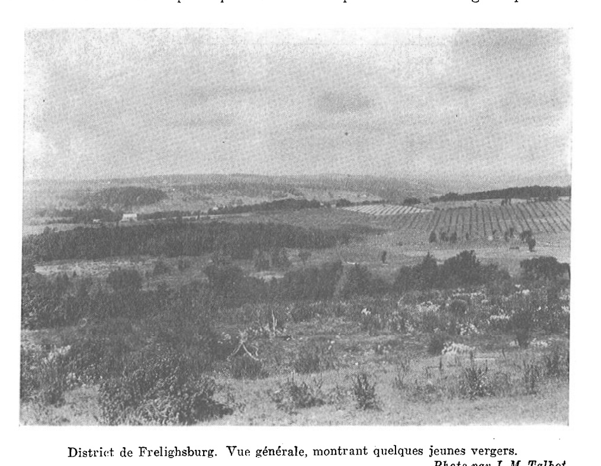
District de Frelighsburg. Vue générale, montrant quelques jeunes vergers. Photo par J. M. Talbot.
collines. D'autres investigateurs sont d'avis que les sesquioxydes ou silices ont été lessivés par l'eau venant des hautes couches du profil du sol. Il est probable que les deux facteurs ont eu une part dans la formation de cette couche compacte.
La « phase mince » de la terre franche de Brome est très semblable au reste. La différence principale est dans la profondeur à laquelle se trouve la couche compacte. Nous avons pris une profondeur de 24 pouces comme chiffre arbitraire; si la couche compacte était à moins de 24 pouces de la surface, le sol était mis sur la carte comme « phase mince » de la terre franche de Brome. En règle générale, la couche de surface de la phase mince est plus riche en matière organique et plus foncée, et le sous-sol présente une bigarrure de fer prononcée. L'eau d'égouttement ne pénètre pas librement à travers la couche compacte et elle descend le long des pentes des coteaux, juste au-dessus de la couche compacte; ceci explique les nombreuses sources que l'on trouve dans ce district au printemps et au commencement de l'été. Chaque fois que les contours de la terre sont de nature à empêcher l'écoulement libre de l'eau d'égouttement, cette
42967-4
TABLEAU 6.—COMPOSITION CHIMIQUE ET PHYSIQUE DES ÉCHANTILLONS DE SOL DU DISTRICT DE FRELIGSBURG
Échan- tillon N°
Analyse chimique (Après séchage au four)
Analyse physique
Humi- dité hygro- scopique %
Perte par inci- nération %
Valeur en pH
Besoins en chaux liv. de CaO par acre
CaO %
MgO %
Mn3O4 %
K2O %
SiO2 %
Fe2O3+ Al2O3+ Ti2O3 %
P2O5 %
SO3 %
N2 %
C orga- nique %
Gravier > 1 mm. %
Sable 1-0.05 mm. %
Limon 0.05- 0.005 mm. %
Argile totale 0.005- 0 mm. %
Argile fine 0.002- 0 mm. %
Gravelo-argileux de Brome
64 A…… B…… C……
2.38 1.22 0.50
8.65 3.83 1.61
4.9 5.5 5.5
5,134 2,239 1,159
0.76 0.76 1.10
0.65 0.76 0.64
0.083 0.100 0.045
2.16 2.34 2.06
65.4 71.8 75.3
18.46 18.78 17.81
0.157 0.111 0.145
0.189 0.118 0.132
0.280 0.095 0.045
3.54 1.29 0.46
58.0 54.0 27.0
24.0 33.4 52.5
13.5 9.8 13.9
4.5 2.8 6.6
2.1 1.5 0.5
Franc de Brome
62 A…… B…… C……
1.99 1.01 0.45
6.77 3.62 2.16
5.3 5.8 6.4
2,779 1,663 794
0.74 0.93 1.39
1.84 0.73 1.00
0.050 0.040 0.050
2.42 2.57 2.52
69.3 69.5 74.7
16.41 18.24 18.76
0.138 0.121 0.088
0.201 0.095 0.085
0.240 0.090 0.009
2.61 0.88 0.25
34.0 35.0 36.0
32.0 34.2 37.4
26.1 22.7 20.8
7.9 8.1 5.8
4.2 3.0 3.1
66 A…… B…… C……
2.42 1.69 0.59
8.64 4.41 2.16
5.0 5.7 5.9
3,686 1,519 794
0.73 0.80 1.05
0.42 0.44 0.57
0.027 0.045 0.060
2.34 2.56 2.57
65.6 71.8 72.0
19.22 19.54 20.41
0.151 0.113 0.135
0.175 0.126 0.089
0.272 0.092 0.031
3.47 1.33 0.36
35.0 39.0 44.0
36.2 46.7 30.6
19.2 10.3 19.8
9.6 4.0 5.6
6.1 2.7 4.7
70 A…… B…… C……
2.70 1.62 0.44
10.89 5.76 1.96
4.6 4.7 5.1
5,134 2,239 1,159
0.65 0.76 0.73
0.87 0.87 1.08
0.073 0.048 0.050
1.74 2.16 2.63
67.9 69.3 73.6
15.86 16.80 19.77
0.162 0.257 0.180
0.186 0.085 0.075
0.298 0.083 0.037
3.58 1.30 0.27
32.0 40.0 38.0
29.4 29.4 34.0
32.4 24.3 19.9
6.2 6.3 8.1
4.3 3.6 5.0
Franc de Brome, phase superficielle
60 A…… B……
3.33 0.54
11.07 2.20
5.8 6.6
3,326 1,159
1.20 1.00
1.00 0.99
0.073 0.048
2.17 2.58
62.4 71.1
21.34 14.61
0.189 0.145
0.223 0.121
0.342 0.017
4.56 0.35
13.0 25.0
35.1 34.0
38.0 28.6
13.9 12.4
9.6 10.2
63 A…… B…… C……
4.03 0.53 0.39
12.05 1.87 1.53
5.4 5.8 5.9
3,326 433 1,159
1.25 1.20 1.00
0.48 0.65 1.11
0.094 0.047 0.052
2.02 2.16 2.27
61.2 76.2 74.6
15.64 16.59 18.59
0.269 0.161 0.162
0.256 0.094 0.091
0.406 0.028 0.111
4.90 0.33 0.18
19.0 26.0 30.0
41.0 49.6 38.8
31.1 18.2 23.8
8.9 6.2 7.4
4.4 4.0 4.2
eau s'accumule et sature le sol. Il en résulte que le sol est froid, sourceux et l'activité microbiologique est grandement rannie, provoquant l'accumulation de matière organique à la surface. Pendant les saisons sèches de l'année, lorsque
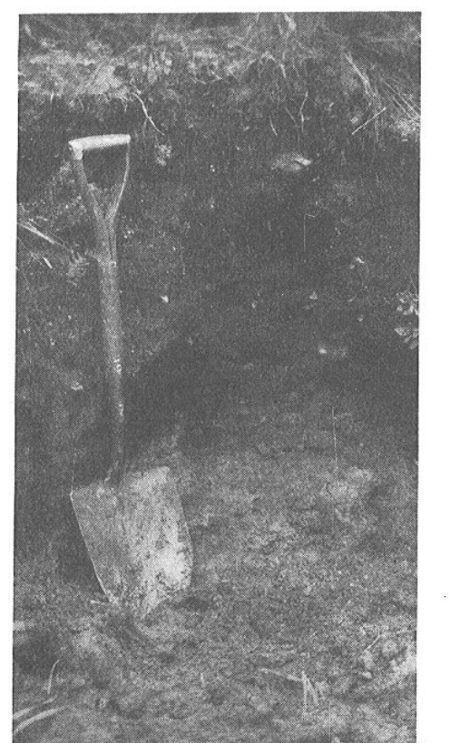
Profil de la terre franche de Brome; sous-sol compact à 3 pieds. Photo par J. M. Talbot.
l'eau de surplus s'est écoulée, le mouvement ascentionnel de l'eau du sol est grandement entravé par cette couche compacte et la végétation souffre de la sécheresse. Les racines des arbres ne pénètrent pas aisément cette couche compacte; elles ont une tendance à s'étaler près de la surface, un peu à cause de l'état humide du sol pendant une grande partie de la saison. Quand le sol se ressuie ou se sèche plus tard dans la saison, très peu de racines s'enfoncent dans le sous-sol humide et il en résulte une pousse irrégulière des arbres. Pour prévenir cet état de choses, il faudrait drainer la couche mince de la terre de Brome au moyen du tuyaux de drainage, afin d'enlever l'eau de surplus pendant la saison humide et de faciliter ainsi la pénétration du sous-sol compact par les racines.
La composition chimique et physique de quelques sols typiques du district de Frelighsburg est présentée au Tableau 6. On voit par ce tableau que tous les sols de ce district sont nettement acides, mais la terre franche mince de Brome n'est pas aussi acide que les autres sols. Ce sol n'est pas aussi bien
42967-4½
drainé que la terre franche normale de Brome et contient une proportion plus forte de matière organique, indiquée par la perte sur incinération et le carbone organique. L'azote total, qui s'associe invariablement à la matière organique, est plus considérable également dans la phase mince que dans la terre franche de Brome et varie de 0.3 à 0.4 pour cent dans les couches de surface de la terre franche mince.
La proportion de calcium et de magnésium de tous les échantillons de Brome est faible. Mais ici encore le pourcentage de CaO est un peu plus considérable dans la phase mince que dans la terre franche normale, ce qui est probablement la cause de la réaction plus prononcée de ces sols. La potasse ne varie pas sensiblement; cet élément est présent en quantité à peu près égale dans les différents types de sols de ce district. En général, les sols de Brome sont un peu plus riches en potasse que les sols graveleux des districts montérégiens. Cependant, le phosphore total est toujours en moindre proportion dans
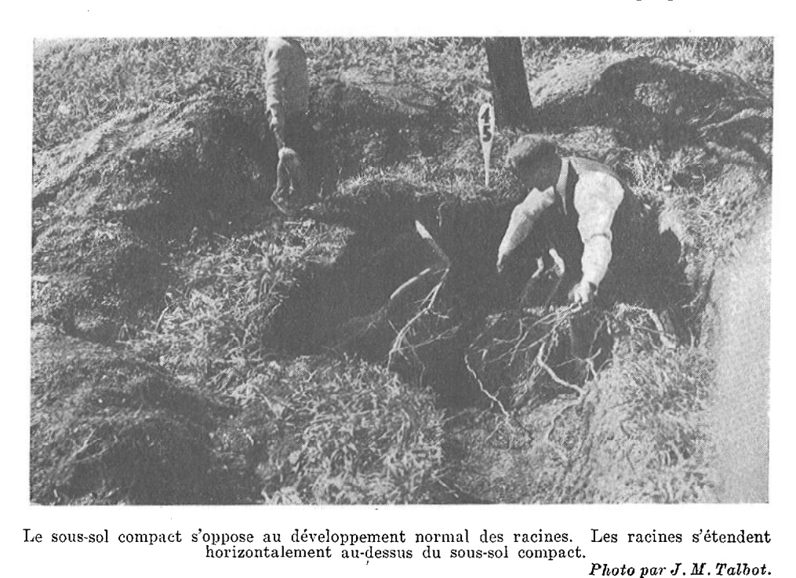
Le sous-sol compact s'oppose au développement normal des racines. Les racines s'étendent horizontalement au-dessus du sous-sol compact. Photo par J. M. Talbot.
les sols du district de Frelishburg que dans les sols montérégiens. Ces données concordent parfaitement avec les résultats donnés par les essais d'engrais sur des sols semblables et qui ont été publiés ailleurs. On a constaté que l'application d'engrais phosphatés aux pâturages active merveilleusement la pousse de l'herbe, tandis que les engrais potassés et azotés n'exercent que peu d'effet. Il n'en serait peut-être pas de même des vergers cependant.
Les analyses chimiques présentées n'expliquent pas la cause et la formation de l'état extrêmement compact du sous-sol dans la terre franche de Brome. Il sera nécessaire d'entreprendre des études spéciales pour obtenir une explication satisfaisante de cet état, que l'on rencontre sur une vaste étendue du sud-est du Québec.
La terre gravelo-argileuse de Brome diffère beaucoup des types de sols que nous avons passés en revue plus haut. Le sol est très graveleux, très peu tassé et poreux, et ressemble sous ce rapport au gravier de terrasse Champlain, mais ce gravier est d'une nature différente et se compose principalement de frag-
ments de roches schisteuses, très anguleux. Le sous-sol est meuble, non compact, jusqu'à une profondeur considérable, et les racines des arbres y pénètrent aisément. Ce type de sol est très acide et présente parfois des traces de podsolisation. La matière organique s'y rencontre à une plus grande profondeur que dans la terre franche de Brome.
La composition chimique de la terre gravelo-argileuse de Brome est très semblable à celle de la terre franche de Brome. La seule différence marquée, notée au Tableau 6, se rapporte à la texture. Le pourcentage de limon fin n'est que d'environ une moitié de celui que l'on trouve dans la terre de Brome, tandis que le pourcentage de gravier est beaucoup plus considérable. La différence de texture donne un sol plus ouvert et mieux égoutté.
Les pommiers plantés dans le district de Frelighsburg viennent bien, mais il est à remarquer que les arbres sont encore très jeunes. Rien ne nous porte à croire que ce sol ne convienne pas pour la culture du pommier, surtout sur la terre gravelo-argileuse de Brome et la terre franche normale. Il faudra pourvoir à un drainage satisfaisant dans les sols peu profonds qui ne s'égouttent pas bien.
L'ÎLE D'ORLÉANS ET LA CÔTE DE BEAUPRÉ
L'Ile de Orléans est à l'est de Québec, dans le comté de Montmorency et dans le fleuve Saint-Laurent. Elle mesure environ 20 milles de longueur d'une extrémité à l'autre et un peu plus de 5 milles de largeur au centre de l'île; l'étendue totale est d'environ 85 milles carrés. Le district de la Côte de Beaupré qui a été examiné se compose d'une bande étroite de terre le long de la rive nord du fleuve Saint-Laurent, qui commence à Beauport à l'ouest et finit à peu près à deux milles à l'est de Sainte-Anne-de-Beaupré. Cette bande de terre varie entre ½ mille et 3 milles de largeur et couvre une étendue d'environ 30 milles carrés.
Un pourcentage considérable du centre de l'Ile d'Orléans est encore couvert de bois composés de conifères et d'arbres à feuilles décidues. La terre cultivée le long des deux côtés de l'île est principalement consacrée aux pâturages, au foin et au grain. La culture des pommes de terre est assez répandue. Les fraises constituent une récolte importante pour la vente en nature. Cette dernière récolte vient très bien, et les fraises de l'Ile d'Orléans sont réputées. Il s'y trouve quelques vergers le long de la rive nord de l'île, spécialement dans le voisinage de Sainte-Famille, mais la plupart de ces vergers ne sont pas gros. Les arbres sont en bon état; quelques-uns sont très vieux. Quelques jeunes vergers ont été plantés sur la terre haute et le long de la rive sud de l'île, et ils ont un aspect vigoureux à l'heure actuelle. Le long de la côte de Beaupré la plus grande concentration de vergers est près de l'Ange-Gardien. Ces vergers ne sont pas gros et peu d'entre eux comptent plus de 200 arbres. Le jardinage maraîcher a pris un grand développement à l'extrémité ouest de ce district, près de Beauport, mais la majeure partie de cette terre est affectée à la culture du grain, du foin et aux pâturages.
Les caractères topographiques des districts à l'est de Québec sont très frappants. Sur les deux côtés du chenal nord du fleuve Saint-Laurent, c'est-à-dire sur l'Ile d'Orléans et la côte de Beaupré, il y a de larges plaines alluviales. Ces plaines ont une surface très lisse et ne sont qué quelques pieds au-dessus du niveau de l'eau à marée haute. Leur largeur varie de 100 verges à plus d'un demi-mille. Sur l'Ile d'Orléans le terrain s'élève brusquement à partir des plaines et forme des falaises abruptes, à déclivité de 200 pieds ou plus, sur une distance horizontale de 50 à 100 pieds. Cette déclivité n'est pas tout à fait aussi grande sur la rive sud de l'île et il n'y a là que très peu de sol de rivière. Sur le côté nord, il se forme souvent deux ou trois terrasses qui vont graduellement en pente vers la rivière et sont séparées l'une de l'autre par des falaises abruptes. La
largeur de ces terrasses varie de 200 à 600 verges. Parfois l'élévation brusque entre les terrasses disparaît, formant une longue pente douce. Vue de la terre ferme au sud et au nord, l'Ile d'Orléans donne l'impression d'une colline à pente douce et dont le sommet serait au centre. En réalité cependant le centre de l'île est une dépression entourée de buttes, qui descendent en pente douce des deux côtés. La côte de Beaupré s'élève brusquement à l'extrémité nord, où elle est bordée par les terres accidentées des montagnes Laurentides et la hauteur à un mille de la rivière dépasse souvent 400 pieds au-dessus du niveau de l'eau. On trouve parfois des terrasses plates, semblables à celles de l'Ile d'Orléans. La raideur des pentes fait que la culture de la terre est difficile, sinon impossible, et la terre perd de sa valeur à cause de la difficulté d'accès. L'eau des collines descend en ruisseaux rapides, qui causent beaucoup d'érosion. Ceci se voit surtout près des falaises raides où cette érosion a rendu incultevable une grande étendue de terre.
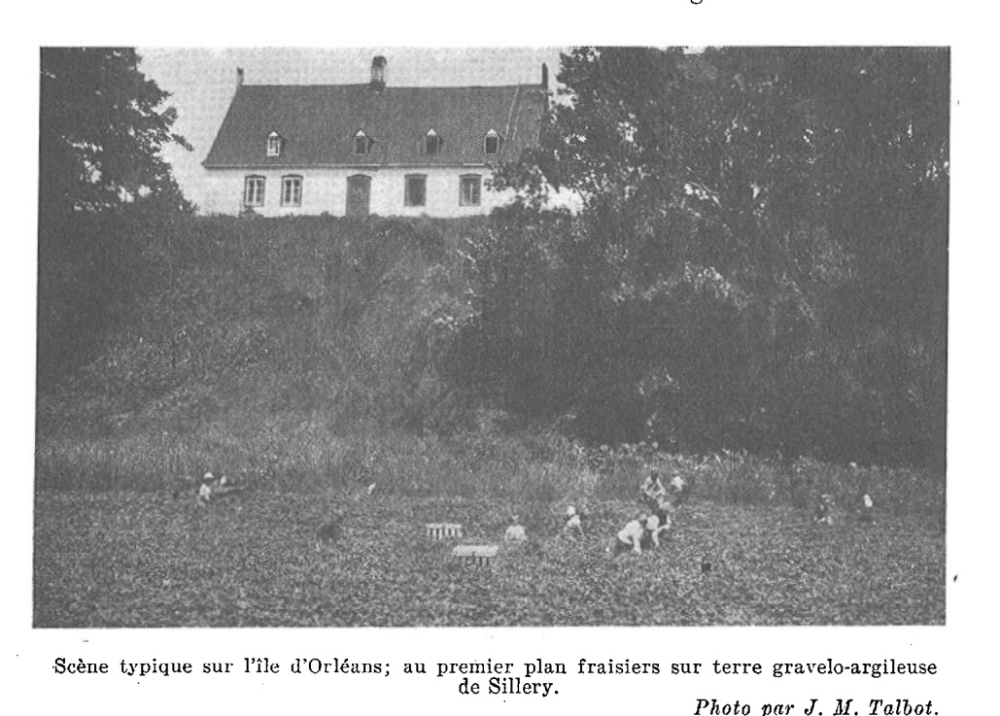
Scène typique sur l'île d'Orléans; au premier plan fraisiers sur terre gravelo-argileuse de Sillery.
Photo par J. M. Talbot.
La substance minérale qui a formé la plus grande partie de l'Ile d'Orléans appartient à la formation de Sillery. La plus grande partie du sol de l'île repose sur la roche de Sillery, qui affleure sur les falaises. C'est une roche schisteuse, gris brun à rouge, très molle et qui se désagrège en gravier anguleux. Dans bien des endroits, le sol qui recouvre la roche est très mince et l'on voit parfois des affleurements de roche. La faille St-Laurent-Champlain passe à travers l'île de Ste-Pétronille le long de la rive nord de l'île, près du chemin principal et s'étend presque jusqu'à l'extrémité est de l'île. Au nord de la faille, les matériaux géologiques sont hétérogènes, mais ils se composent principalement des formations Utica et Lorraine. Ici, les roches de ces formations sont caractérisées par une forte proportion de chaux qui se retrouve dans le sol. Néanmoins, le schiste de Sillery est mélangé avec la formation d'Utica et de Lorraine et parfois même le Sillery se prolonge jusqu'aux rives du fleuve. Sur la côte de Beaupré, les pierres à chaux d'Utica, de Lorraine et de Trenton sont les roches sous-jacentes dominantes. A proximité du fleuve, la couche de roche n'est recouverte que d'une mince couche de débris et ici le sol est grandement affecté par la roche mère. Plus loin
du fleuve la roche sous-jacente est recouverte d'une grande profondeur de sable et le sol n'est que peu affecté par la formation géologique sous-jacente. Au nord et à l'est, l'étendue de sol examinée est bornée par les roches ignées des formations laurentiennes.
A en juger par la nature de la formation géologique, il est à prévoir que les sols de ce district diffèrent de ceux qui ont été passés en revue dans les districts précédents. Le type principal de sol trouvé sur l'Ile d'Orléans et à bien des endroits le long de la rive sud du Saint-Laurent se trouve la terre gravelo-argileuse de Sillery, dont nous parlerons plus loin. Comme le nom l'indique, le gravier provient du schiste de Sillery sur lequel l'île repose. Il se compose de fragments anguleux et plats qui sont très mous et que l'on peut souvent émietter dans la main. La couche de surface de ce sol est mince, de 4 à 6 pouces de profondeur, et relativement pauvre en matière organique. Elle est nettement acide et présente souvent des traces de podsolisation. Le gravier dans le sous-sol est brun
PROFILS DU SOL
13 A1 Gravelo-argileux brun intermédiaire; schiste graveleux et mou. A2 Couche lessivée sur terre plus élevée. B Gravier schisteux brun rougeâtre de Sillery, peu tassé et s'émiettant. C Gravier schisteux gris; fragments friables; par-fois assise de roche à 3 pieds.
Gravelo-argileux de Sillery.
14 A. Sablo-argileux grossier brun chocolat intermédiaire, friable; petits fragments de schiste s'émiettant. B. Sablo-argileux grossier brun foncé friable; petits fragments de schiste s'émiettant. C. Sablo-argileux grossier gris avec fragments de schiste anguleux.
Sablo-argileux de Beaupré.
15 A. Argilo-sableux brun chocolat foncé; structure grossière granuleuse. B. Argilo-sableux brun grisâtre, structure légère-ment laminée; lamelles dures et schisteuses. C. Argilo-sableux gris foncé; fragments de roche; effervescence à HCl; couche rocheuse habituellement à 40 pouces.
Argilo-sableux.
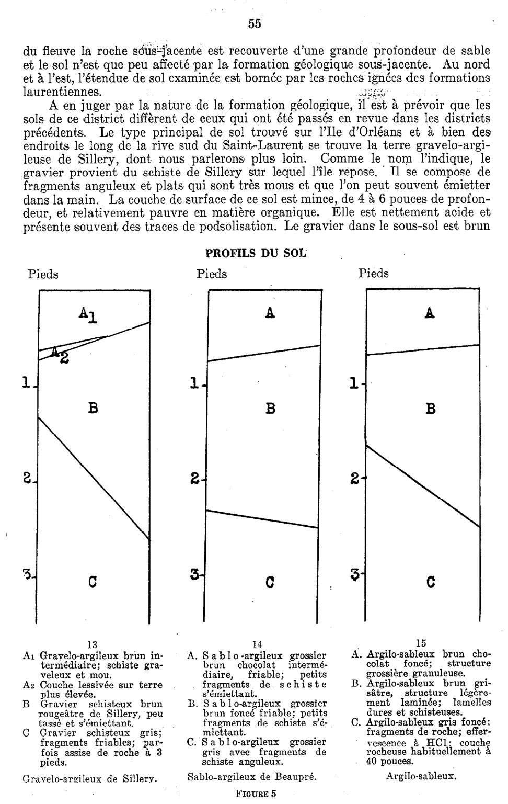
FIGURE 5
rougeâtre. Il devient plus foncé à mesure que la profondeur augmente et à quatre pieds il est brun grisâtre foncé. Le gravier devient plus grossier à mesure que la profondeur augmente, et il se trouve sous forme de gros schiste avant que l'on arrive à la roche consolidée de schiste. La profondeur du gravier schisteux varie de 2 pieds à plus de 8 pieds. Dans certains cas, la profondeur ne dépasse pas deux pieds et le sol a été inscrit sur la carte comme “phase mince” de la terre gravelo-argileuse de Sillery.
Dans les cas où la topographie de la terre ou l'existence d'une couche rocheuse sous-jacente obstrue l'écoulement de l'eau, il s'est développé des sols mal égouttés, qui se caractérisent par une couche de surface profonde, riche en matière organique et d'une texture un peu plus grossière que la terre gravelo-argileuse bien
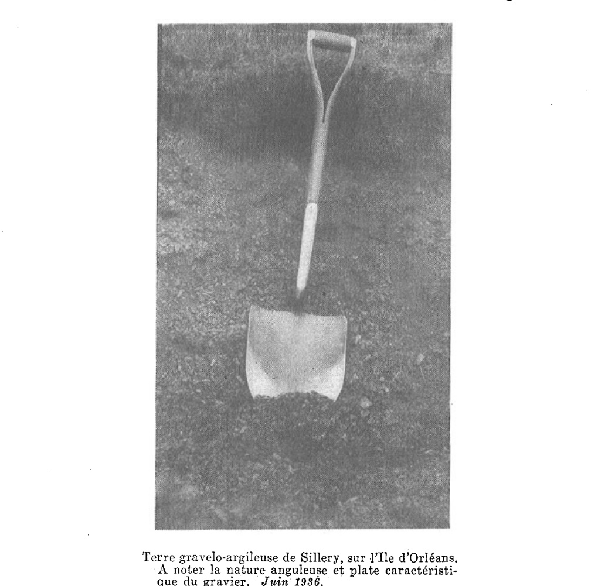
Terre gravelo-argileuse de Sillery, sur l'Ile d'Orléans.
A noter la nature anguleuse et plate caractéristique
que du gravier. Juin 1936.
égouttée. Les sous-sols sont très bigarrés et compacts. Dans la dépression qui se trouve au centre de l'île, ce mauvais égouttement est très prononcé, le sol marécageux est recouvert d'une mince couche de tourbe mousseuse, et il a été inscrit sur la carte comme sol marécageux. Ces sols mal égouttés ne sont pas défrichés et sont recouverts d'une épaisse végétation de conifères et d'arbres à feuilles décidues.
La composition chimique de la terre gravelo-argileuse de Sillery est présentée au tableau 7; elle révèle quelques caractères intéressants de ce sol qui concordent de très près avec les observations faites dans le champ. Ce sol a
une réaction très acide, plus que tout autre sol dont il est fait rapport dans ce bulletin. Le pH de tous les échantillons analysés n'atteint pas 5.0 dans le sol de surface, et il est d'environ 5.0 dans le sous-sol. La phase mal égouttée de ce sol est en général plus mince et moins acide dans le sous-sol. Cette forte acidité du sol de Sillery s'associe à une faible teneur en chaux; la proportion de CaO n'est que de 0.4% à 0.8%. La teneur en calcium est un peu plus élevée dans le sol mal égoutté, ce qui concorde avec la réaction. Le magnésium est toujours en quantité plus forte que le calcium. La relation MgO:CaO relativement élevée est caractéristique des sols de Sillery; elle ne se rencontre que rarement dans les autres sols qui ont été étudiés. Il n'y a qu'une petite quantité de manganèse dans le sol de Sillery, mais la teneur en potassium est très élevée, étant
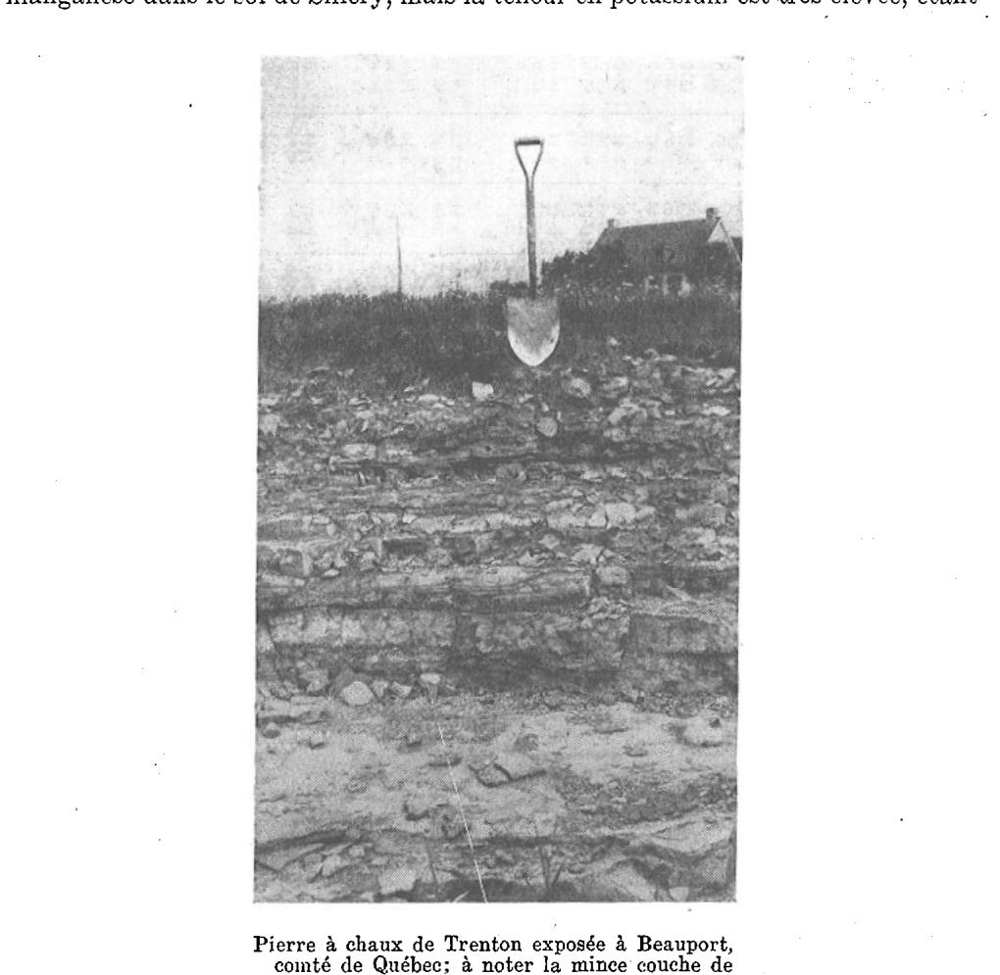
Pierre à chaux de Trenton exposée à Beauport, comté de Québec; à noter la mince couche de terre recouvrant la roche. Juin 1936.
bien au-dessus de 2% de K2O. La proportion moyenne de potassium dans les sols de Sillery est tout aussi forte, sinon plus forte, que dans les autres sols déjà passés en revue. La proportion d'acide phosphorique est relativement faible; elle varie de 0.1 à 0.2% de P2O5 dans les sols de Sillery de l'Ile d'Orléans. La proportion de matière organique, qui est indiquée par la perte au cours de l'incinération, celle de carbone organique et d'azote total, sont relativement faibles dans le sol bien égoutté de Sillery et très fortes dans la couche de surface de la phase mal égouttée. Le total des sesquioxydes est très élevé dans le gravier de Sillery, et ce sont eux qui donnent au sol sa couleur rouge caractéristique. La
TABLEAU 7.—COMPOSITION CHIMIQUE ET PHYSIQUE DES ÉCHANTILLONS DE SOL PRÉLEVÉS SUR L'ÎLE D'ORLÉANS ET LA CÔTE DE BEAUPRÉ
Echantillon N°
Analyse chimique (Après séchage au four)
Analyse physique
58
Humi- dité hygro- scopique %
Perte par inci- nération %
Valeur en pH
Besoins en chaux liv. de CaO par acre
CaO %
MgO %
Mn3O4 %
K2O %
SiO2 %
Fe2O3+ Al2O3+ Ti2O3 %
P2O5 %
SO3 %
N2 %
C orga- nique %
Gravier > 1 mm. %
Sable 1.0-0.05 mm. %
Limon 0.05- 0.005 mm. %
Argile totale 0-005- 0 mm. %
Argile fine 0-002- 0 mm. %
Gravelo-argileux de Sillery
11 A........ B........ C........
3·80 3·03 1·96
11·30 8·14 5·41
4·43 5·03 5·21
9,400 5,960 3,810
0·51 0·42 0·56
1·11 1·33 1·41
0·071 0·063 0·040
2·09 2·37 2·55
58·2 55·4 58·4
22·8 29·6 28·3
0·211 0·128 0·198
0·195 0·142 0·162
0·19 0·13 0·04
4·07 2·35 1·21
60·0 65·0 65·0
19·2 21·1 30·9
15·2 10·2 3·4
5·6 3·7 0·7
4·2 2·3 0·3
12 A........ B........ C........
2·72 3·05 1·82
7·92 7·18 4·86
4·72 4·80 5·07
6·800 5,080 3,070
0·45 0·50 0·66
1·32 1·73 1·91
0·039 0·094 0·047
2·34 2·24 2·33
60·5 55·3 58·5
25·7 34·3 30·8
0·151 0·228 0·249
0·122 0·097 0·077
0·16 0·10 0·06
2·37 1·60 0·87
45·0 80·0 92·0
34·3 14·2 6·0
19·2 4·4 2·0
11·5 2·4 -
7·3 1·3 -
19 A........ B........ C........
2·69 1·62 1·76
7·28 3·64 3·91
4·64 5·00 4·64
4,930 3,070 4,190
0·65 0·56 0·67
1·11 1·36 1·04
0·106 0·060 0·101
2·85 2·71 2·74
64·1 63·9 61·9
24·3 26·1 27·4
0·125 0·115 0·127
0·127 0·075 0·080
0·16 0·02 0·01
2·47 0·65 0·77
23·0 65·0 85·0
47·8 28·9 12·6
18·2 3·7 1·6
11·0 2·4 -
8·8 1·5 0·6
25 A........ B1....... B2.......
5·10 4·11 3·11
9·50 7·08 6·01
4·57 4·53 4·95
13,700 15,350 7,180
0·51 0·42 0·63
1·96 1·28 0·90
0·028 0·015 0·033
2·18 2·21 2·60
58·1 60·0 58·1
28·7 30·5 32·0
0·160 0·185 0·118
0·105 0·059 0·103
0·12 0·02 0·02
3·14 0·74 0·96
48·0 47·0 75·0
18·6 16·8 16·9
15·1 16·4 5·2
17·3 19·8 2·9
13·6 17·7 2·0
Gravelo-argileux de Sillery, phase mal égouttée
14 A........ B........
7·09 2·30
41·02 4·57
4·93 4·85
10,900 4,690
0·99 0·68
0·64 1·42
0·017 0·031
2·22 3·04
35·4 57·8
18·5 32·7
0·179 0·080
1·040 0·542
0·84 0·06
22·65 0·88
9·0 40·0
42·2 33·0
39·0 17·9
9·8 9·1
6·7 7·2
24 A........ B........ C........
2·30 0·75 0·45
10·15 1·67 1·12
4·54 5·46 7·22
4,930 1,760 650
1·30 1·53 1·67
0·44 0·63 1·25
0·022 0·032 0·043
2·16 2·48 2·36
64·8 70·2 69·6
18·1 20·1 23·4
0·138 0·155 0·126
0·160 0·079 0·074
0·22 0·03 0·02
5·16 0·05 0·00
12·0 15·0 38·0
50·4 52·2 49·2
28·6 21·9 4·9
9·0 10·9 7·9
4·0 8·7 6·7
Sol de podsol sablonneux
15 A........ B........
1·55 1·21
4·32 2·47
4·91 5·84
3,450 1,950
1·33 1·59
0·30 0·39
0·033 0·061
1·49 1·87
78·2 76·9
15·4 17·5
0·079 0·055
0·131 0·093
0·12 0·04
1·94 0·42
4·0 27·0
85·2 70·5
8·6 2·2
2·2 0·3
2·0 0·3
32 A........ B........ C........
1·22 0·35 2·15
3·84 0·91 2·90
5·32 4·30 4·32
6,683 5,780 4,400
0·94 1·26 1·90
0·62 0·46 0·52
0·053 0·062 0·088
1·82 1·89 1·98
78·2 78·6 74·0
14·8 16·3 18·4
0·095 0·095 0·054
0·203 0·186 0·131
0·16 0·03 0·05
2·24 0·52 1·52
6·5 6·5 19·0
73·8 73·8 73·6
15·0 14·5 5·4
4·7 5·2 2·0
3·5 4·0 1·3
Sol organique
22 A........ B........
12·37 23·01
94·5 95·7
3·71 4·49
30,000 18,850
0·92 1·24
0·33 0·42
Trace "
0·034 0·056
1·97 1·11
0·2 0·3
0·196 0·262
0·540 0·672
1·18 1·59
56·20 58·00
... ...
... ...
... ...
... ...
... ...
Argilo-sableux de Montmorency
13 A........ B........ C........
3·56 2·87 2·79
13·21 7·56 7·18
6·74 7·42 7·36
1,280 1,210 1,210
1·01 1·76 1·82
0·97 1·28 0·62
0·027 0·018 0·029
2·21 2·28 2·62
59·8 61·8 59·8
20·8 24·7 26·6
0·130 0·097 0·117
0·220 0·160 0·132
0·34 0·21 0·19
5·28 2·25 1·84
9·0 12·0 55·0
22·8 20·4 16·0
33·6 31·5 15·5
34·6 36·1 13·5
29·1 21·8 11·7
3.35 3.76 2.90
8.14 7.71 7.51
6.86 7.01 7.08
1,396 912 1,210
1.01 1.00 1.92
0.63 0.99 0.53
0.078 0.094 0.087
2.72 2.10 2.03
63.4 61.4 60.9
23.2 26.8 28.6
0.175 0.195 0.180
0.150 0.159 0.139
0.23 0.22 0.15
2.88 2.30 1.06
10.0 18.0 85.0
27.2 23.3 4.4
25.2 23.0 6.4
37.6 35.7 4.2
27.4 12.3 3.4
17 A..... B..... C.....
4.00 2.97 3.53
7.82 5.23 3.87
7.44 7.16 7.56
1,340 1,640 1,670
1.78 1.56 1.54
1.42 0.86 0.82
0.070 0.055 0.059
2.11 1.99 1.98
60.0 66.4 66.1
21.5 23.6 25.1
0.194 0.213 0.136
0.240 0.127 0.102
0.30 0.12 0.12
2.59 0.82 0.62
0 0 0
19.6 18.2 24.0
32.0 40.8 44.0
48.4 41.0 32.0
40.4 34.8 26.7
27 A..... B..... C.....
3.53 2.42 1.44
7.69 2.65 3.49
7.00 7.24 8.48
1,650 1,425 950
1.45 1.41 5.60
0.85 0.89 0.66
0.081 0.074 0.063
2.06 2.03 2.44
64.0 70.0 66.6
22.1 23.6 22.0
0.285 0.213 0.132
0.153 0.128 0.142
0.19 0.04 0.03
3.19 0.55 0.36
7.5 1.0 5.0
26.3 26.7 26.1
29.6 36.6 32.8
36.6 37.7 36.1
28.3 30.4 29.5
Sablo-argileux de Beaupré
16 A..... B1.... B2.... C.....
2.41 2.77 1.91 1.17
6.03 4.63 3.98 1.90
4.59 4.74 4.51 5.08
6,800 7,260 3,820 4,190
1.12 0.73 0.89 1.02
0.35 0.42 0.49 0.50
0.064 0.0(6) 0.052 0.046
2.78 2.55 2.66 2.86
65.4 67.7 65.1 67.8
22.3 20.4 23.6 21.0
0.110 0.151 0.118 0.123
0.140 0.105 0.113 0.101
0.14 0.08 0.08 0.06
2.30 1.56 0.59 0.53
16.0 26.0 28.0 85.0
43.9 46.4 40.4 12.8
17.5 12.9 12.7 1.7
17.6 14.7 18.9 0.5
12.5 11.7 16.8 0.5
20 A..... B..... C.....
2.27 1.86 2.54
4.34 3.49 0.70
5.73 6.50 5.26
2,330 1,304 2,890
0.93 0.98 0.87
1.32 1.08 1.02
0.055 0.072 0.074
2.75 2.62 2.85
61.0 60.4 61.1
30.5 28.6 26.6
0.122 0.115 0.138
0.197 0.100 0.100
0.16 0.15 0.13
1.70 0.94 0.60
19.0 13.0 10.0
48.4 46.8 50.2
14.1 17.2 23.9
18.5 23.0 15.9
14.8 18.5 12.8
29 A..... B..... C.....
3.16 2.14 1.93
6.74 3.76 3.90
5.48 5.88 5.36
5,760 4,280 5,310
0.73 0.99 0.91
0.92 0.85 0.95
0.069 0.055 0.072
1.91 2.09 1.89
71.0 72.0 70.1
18.4 20.5 23.3
0.185 0.172 0.106
0.263 0.149 0.095
0.21 0.12 0.10
2.95 1.00 0.61
11.5 8.0 29.0
50.2 48.8 30.9
18.3 18.0 21.4
20.0 25.2 18.7
15.4 16.9 13.9
33 A..... B..... C.....
2.67 3.28 2.17
5.18 4.42 2.37
5.26 6.66 6.90
2,920 1,680 450
1.35 1.60 2.60
0.60 1.13 0.95
0.055 0.068 0.052
1.78 1.79 1.84
72.1 66.4 67.0
18.7 25.8 24.7
0.181 0.192 0.126
0.276 0.201 0.087
0.16 0.13 0.11
1.90 1.12 0.67
8.5 10.0 19.0
50.0 38.0 38.1
15.6 21.9 17.8
25.9 30.1 25.1
20.5 25.0 9.2
Sablo-argileux d'Orléans
18 A..... B..... C.....
4.15 1.10 1.97
15.06 4.08 4.33
4.71 5.40 6.40
9,040 2,890 1,304
0.84 1.21 1.82
0.81 0.74 1.41
0.019 0.018 0.040
2.26 2.33 2.80
55.9 69.3 61.2
22.4 18.2 25.6
0.177 0.123 0.256
0.260 0.132 0.120
0.37 0.07 0.06
6.50 1.14 1.30
0 18.0 15.0
30.2 26.9 29.1
40.6 16.8 21.3
29.2 38.3 34.6
23.8 10.6 29.3
21 A..... B..... C.....
3.65 3.48 2.64
8.72 2.93 2.81
6.42 8.21 7.51
1,960 838 1,025
1.97 2.38 2.26
1.55 1.64 1.53
0.072 0.110 0.061
2.77 3.00 2.89
57.2 57.4 58.6
32.9 30.8 35.4
0.227 0.152 0.272
0.213 0.201 0.174
0.18 0.04 0.10
3.32 0.39 0.36
8.0 10.0 7.0
35.8 28.2 30.7
19.4 13.2 20.3
36.8 48.6 42.0
33.1 46.8 44.4
relation SiO2:R2O3 est étroite; elle varie de 1.6 à 2.5; c'est dans le sous-sol que l'on trouve généralement la relation la plus étroite.
La terre sablo-argileuse d'Orléans a été trouvée dans les vallées qui s'étendent vers l'extrémité est de l'île. Cette glaise est une substance déposée par l'eau; elle s'étend à plus de quatre pieds en profondeur. La réaction de ce sol est neutre à la surface et nettement alcaline dans le sous-sol. En général, ce sol est mal égoutté et a un sous-sol compact et madré ou bigarré. La terre sablo-argileuse d'Orléans ne convient pas pour les pommiers, mais elle produit de bonnes récoltes de grain et de foin.
Les sols les plus typiques sur les formations calcaires le long de la rive nord de l'île d'Orléans et de la côte de Beaupré sont les argilo-sableux de Montmorency et sablo-argileux de Beaupré. Ces sols diffèrent de l'argile graveleuse de Sillery sous bien des rapports. La terre sablo-argileuse de Beaupré est friable et poreuse. La couche de surface de ce sol est très profonde (de 10 à 12 pouces) et sa réaction est légèrement acide; elle ne présente pas le moindre
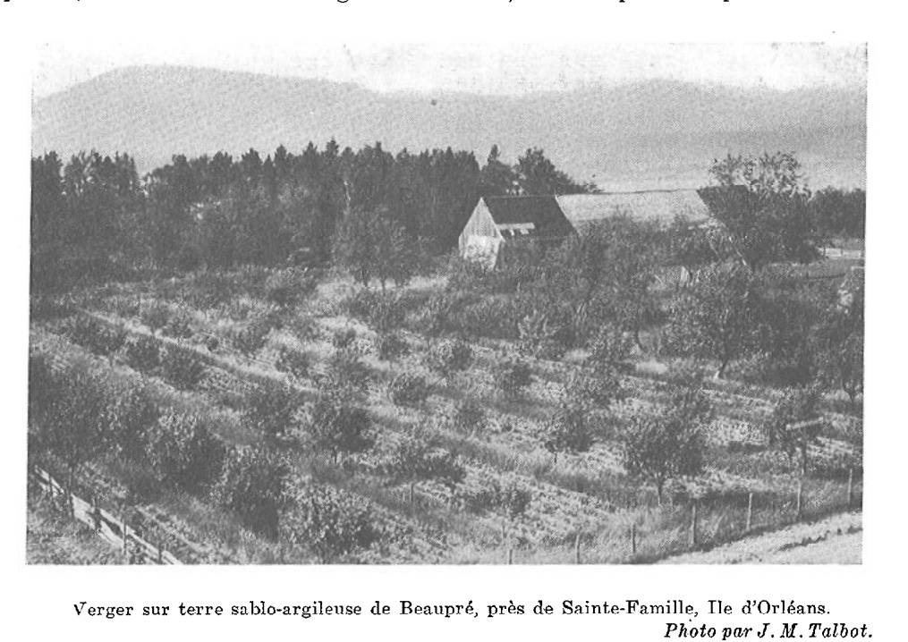
Verger sur terre sablo-argileuse de Beaupré, près de Sainte-Famille, Ile d'Orléans. Photo par J. M. Talbot.
signe de podsolisation. Le sous-sol est d'une couleur brune, se changeant graduellement en gris clair, et ayant une réaction de neutre à légèrement acide. En général, la profondeur de ce sol est d'au moins 4 pieds et plus, parfois la roche vient encore plus près de la surface. Le sol argilo-sableux de Montmorency est généralement un peu plus mince que le sablo-argileux. La couche de surface est d'une couleur brun chocolat à noire; sa structure varie de fortement graveleuse à cubique. Lorsqu'il sèche après avoir été travaillé quand est humide, ce sol devient très dur et se fendille en grosses mottes. Le sous-sol est d'une couleur brun grisâtre et à une profondeur de 2½ à 3 pieds l'on trouve de petits fragments cubiques qui ressemblent à du schiste, mais que l'on peut réduire avec les doigts en une poudre fine. Le sous-sol contient un peu de carbonate de chaux et généralement donne une effervescence légère au contact de l'acide.
Les données analytiques du tableau 7 indiquent que la terre argilo-sableuse de Montmorency ne prend pas une texture plus forte dans les profondeurs, que
celle de Champlain. Le sol argilo-sableux de Montmorency a un pH un peu plus élevé que la glaise de Champlain, mais la teneur en chaux du premier est un peu inférieure à celle des glaises de Champlain, spécialement dans la couche de surface. La terre sablo-argileuse de Beaupré ressemble sous bien des rapports à la terre montérégienne. Les données présentées aux tableaux 7 et 5 indiquent cependant que la terre de Beaupré contient beaucoup moins de calcium et de phosphore que le sol montérégien.
La plupart des vieux vergers de l'île d'Orléans et de la côte de Beaupré ont été plantés sur les deux derniers types de sol, et les arbres poussent bien sur tous les endroits où le sol est bien égoutté. Quelques jeunes vergers ont été plantés sur la terre sablo-argileuse de Sillery, et il semble que ce sol soit très bon pour la culture du pommier. Il y a beaucoup de place pour l'expansion de la culture du pommier sur le sol de Sillery, tandis que l'inclinaison de la terre sur les sols riches en chaux est de nature à restreindre le développement de vergers de rapport de bonne dimension. Les récoltes de foin et de grain viennent beaucoup mieux sur les terres argileuses et franches, plus riches, que sur les sols graveleux, mais ces derniers conviennent admirablement pour la culture des pommes de terre et du fraisier. La réaction neutre à alcaline et la haute teneur en chaux des argiles sablonneuses de Montmorency et des terres franches de Beaupré ne sont pas favorables à la culture de ces deux dernières récoltes.
Les sables profonds des plateaux élevés de la côte de Beaupré sont classés parmi les podsols sablonneux, qui ont déjà été passés en revue dans ce bulletin. Ils sont très acides et beaucoup plus podsolisés que les podsols sablonneux des districts du voisinage de Montréal.
La composition chimique de ces podsols sablonneux est présentée au tableau 7; on voit par ce tableau que la teneur en calcium de ces sols est relativement élevée et que celle du magnésium est faible. C'est là une des caractéristiques des podsols des terres basses dont nous avons déjà parlé. La proportion totale de phosphore, de potassium et d'azote est également très faible. L'absence de ces éléments et le manque de matière organique font que ces sols sont très peu productifs. Ils ne sont pas cultivés sur une grande échelle à cause de leur faible productivité et aussi parce que la présence de buttes raides en rend l'accès difficile.
Sur les larges terrasses alluviales de l'Ile d'Orléans et de la côte de Beaupré, le sol est d'origine très récente et le profil ne présente que très peu de changement. La texture du sol varie depuis un limon à une argile limoneuse et la réaction est de neutre à alcaline. Ce sol n'est pas très bien égoutté; pendant les hautes marées l'eau recouvre des quantités considérables de terre plate et il en résulte que le sol reste froid. Ce sol d'alluvion est principalement employé pour la production du foin et il donne de très bons rendements.
Une petite quantité de tourbe noire, 200 acres environ, a été trouvée sur l'Ile d'Orléans; on trouve également plusieurs petites tourbières isolées sur la côte de Beaupré, ainsi que l'indique la carte. La tourbe noire sur la côte de Beaupré est assez bien décomposée et très acide, mais elle n'est pas très profonde, dépassant rarement trois pieds. La tourbière de l'Ile d'Orléans est plus profonde, elle atteint souvent 6 pieds de profondeur. Le premier pied de la surface est assez bien décomposé; il consiste surtout en restes de bois, tandis que le sous-sol est mal décomposé et rempli de débris de bois et de mousse. La réaction de ce sol est extrêmement acide, le pH varie de 3.7 à 4.5. De même que tous les autres sols de tourbière examinés dans cette province, la proportion de potasse y est faible, et celle d'azote et de soufre, élevée. Cette terre noire n'est pas très bien égouttée. Une partie a été mise en culture cependant.
L'ÎLE AUX COUDRES
L'Île aux Coudres est une île du Saint-Laurent située à environ 70 milles au
nord-est de la ville de Québec, dans le comté de Charlevoix. On peut l'attein-
dre au moyen d'un traversier qui part des Eboulements sur la rive nord du
fleuve. L'Île aux Coudres a environ 5 milles de long et 2¾ milles de large à son
point le plus large. Son étendue totale est d'environ 10 milles carrés.
L'agriculture n'est pas très avancée sur l'Île, et les cultivateurs ne tirent
guère du sol que ce qu'il faut pour se nourrir. Ils cultivent un peu de grain, du
foin et des pâturages pour leurs vaches laitières. Il y a plusieurs années, il se
faisait une grosse culture de fraisiers, mais on dû l'abandonner à cause de la
nature périssable de ces fruits et de l'éloignement où l'on se trouve des marchés.
Les pommes de terre sont la récolte principale, et il s'est planté des vergers de
pommiers en ces dernières années. La plupart des vergers ne sont pas très
grands, sauf un qui contient environ 3,000 arbres.
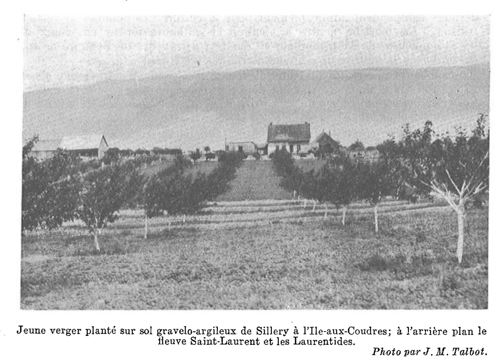
Jeune verger planté sur sol gravelo-argileux de Sillery à l'Île-aux-Coudres; à l'arrière plan le
fleuve Saint-Laurent et les Laurentides. Photo par J. M. Talbot.
Au point de vue topographique et de la formation géologique, l'Île aux
Coudres ressemble à l'Île d'Orléans. Elle s'élève brusquement du niveau du
fleuve et forme une falaise abrupte de 100 à 200 pieds de hauteur le long de la
rive nord. Cette élévation n'est pas aussi forte sur la rive sud et aux deux extré-
mités, et l'on trouve le long du fleuve une grève de gravier de 100 à 300 verges
de largeur. A partir du sommet de la falaise, le terrain s'élève doucement jusque
vers le centre de l'île, puis redescend avant d'atteindre le centre, formant ainsi
une large dépression sur toute la longueur de l'île. Sous ce rapport l'île ressemble
à l'Île d'Orléans et les sols le long du centre sont mal égouttés et marécageux.
La formation géologique de toute l'île est celle de Sillery. Les affleurements
du roc peuvent se voir le long des falaises et des crêtes, et parfois sur la terre
haute de l'île. La profondeur du sol qui recouvre la couche de roc varie depuis
l'affleurement du roc jusqu'à 8 pieds et plus. Le sol où la couche de roc est à
moins de 2 pieds de la surface est inscrit sur la carte comme "phase mince".
TABLEAU 8. — COMPOSITION CHIMIQUE ET PHYSIQUE DES ÉCHANTILLONS DE SOLS PRÉLEVÉS SUR L'ÎLE AUX COUDRES ET DANS LA BASSE VALLÉE DU SAINT-LAURENT
Echantillon N°
Analyse chimique (Après séchage au four)
Analyse physique
Humidité hygroscopique %
Perte par inci- nération %
Valeur en pH
Besoins en chaux liv. de CaO par acre
CaO %
MgO %
Mn3O4 %
K2O %
SiO2 %
Fe2O3+ Al2O3+ Ti2O3 %
P2O5 %
SO3 %
N2 %
C orga- nique %
Gravier > 1 mm. %
Sable 1-0.05 mm. %
Limon 0.05- 0.005 mm. %
Argile totale 0.005- 0 mm. %
Argile fine 0.002- 0 mm. %
Gravelo-argileux de Sillery
36 A...... B...... C......
2.42 2.17 2.03
4.58 3.74 3.47
5.00 4.80 4.48
5,250 4,200 4,360
0.73 0.56 0.64
0.84 1.13 1.10
0.094 0.061 0.082
1.86 3.04 3.00
62.2 63.8 62.6
27.8 28.1 30.5
0.115 0.087 0.061
0.154 0.127 0.121
0.11 0.03 0.03
1.19 0.35 0.22
57.0 54.5 69.0
20.5 29.6 21.5
11.7 9.1 5.6
10.8 6.8 3.9
7.1 5.7 3.4
49 A...... B...... C......
2.84 1.88 1.96
7.25 3.68 3.21
5.44 5.10 5.29
2,675 2,620 2,590
1.05 1.00 0.89
1.31 1.47 1.21
0.093 0.086 0.078
2.70 2.85 2.92
66.6 67.0 65.9
22.4 24.6 25.3
0.155 0.088 0.079
0.165 0.143 0.137
0.19 0.06 0.05
3.10 0.89 0.53
47.0 67.5 73.0
29.8 16.2 18.5
13.7 12.2 6.0
9.5 4.1 2.5
2.8 2.6 1.8
Gravelo-argileux de Sillery, phase sablonneuse
51 A...... B...... C......
3.15 2.80 2.83
5.74 4.42 4.15
4.68 4.77 4.90
7,880 6,180 5,840
0.75 0.75 0.74
1.33 1.40 1.25
0.081 0.075 0.081
2.55 2.77 3.06
68.2 70.6 67.0
20.7 21.6 24.8
0.122 0.092 0.096
0.162 0.104 0.113
0.13 0.08 0.07
1.70 0.81 0.50
20.5 21.5 67.0
47.6 43.0 7.3
13.4 18.8 6.6
18.5 16.7 5.6
10.7 9.7 1.8
37 A...... B...... C......
2.01 2.21 1.21
3.21 2.86 1.86
4.37 5.10 5.04
5,840 3,600 3,850
1.02 1.03 1.02
0.99 0.90 0.99
0.101 0.048 0.058
2.46 2.78 2.82
74.8 68.4 70.0
18.6 24.2 22.4
0.150 0.123 0.116
0.231 0.210 0.215
0.10 0.05 0.05
1.38 0.71 0.32
20.0 69.5 74.5
53.0 19.0 19.7
13.6 7.5 3.7
13.4 4.0 2.1
10.4 3.5 1.6
Sol du fleuve Saint-Laurent
38 A...... B......
2.72 2.11
5.98 3.73
4.83 5.42
5,100 3,340
0.89 0.69
1.10 0.70
0.046 0.034
3.46 3.52
65.1 64.8
24.5 26.2
0.218 0.118
0.192 0.125
0.13 0.05
2.07 0.77
45.0 65.0
43.1 25.5
8.3 6.5
3.6 3.0
2.8 2.1
Sol de podsol pierreux
42 A...... B......
4.22 7.63
10.20 14.90
4.70 4.92
5,020 8,720
0.75 0.71
0.33 0.36
0.091 0.071
1.08 1.22
70.6 61.0
17.0 21.5
0.162 0.092
0.237 0.250
0.27 0.25
5.05 6.06
65.0 76.0
17.4 13.1
10.4 8.5
6.2 2.4
4.5 1.9
Glaise de Champlain (de Ste-Anne de la Pocatière)
40 A...... B...... C......
2.34 1.71 2.61
5.70 3.03 2.96
6.70 7.46 8.60
3,080 1,850 0
1.90 2.10 2.85
0.63 1.13 0.94
0.069 0.088 0.073
2.08 2.15 2.18
70.2 68.8 67.6
20.5 22.7 23.6
0.186 0.173 0.121
0.204 0.182 0.106
0.13 0.04 0.03
2.14 0.39 0.28
7.0 7.0 5.0
29.2 25.4 26.0
27.4 22.1 21.9
30.4 45.5 47.1
14.0 19.1 15.5
Glaise déposée sur le gravier de Sillery
44 A...... B...... C......
3.97 1.97 3.05
10.80 4.44 4.60
5.30 6.24 6.50
6,290 2,680 3,360
1.51 1.17 1.06
0.89 0.45 1.57
0.062 0.068 0.065
1.80 2.54 2.70
62.8 64.6 62.8
22.4 26.3 26.6
0.306 0.271 0.183
0.265 0.109 0.092
0.16 0.07 0.07
4.55 0.86 1.30
1.0 55.0 69.0
24.6 14.0 7.7
44.4 19.8 14.4
30.0 11.2 8.9
22.3 8.5 3.4
Le type de sol dominant sur l'Île aux Coudres est la terre gravelo-argileuse de Sillery, dont le gravier est composé de fragments de schiste de Sillery, et il est identique au sol de Sillery dont nous avons déjà parlé. C'est le principal sol arable, et on le trouve sur la terre qui descend en pente douce de chaque côté de l'île. Cependant sur le côté exposé au sud, la glaise graveleuse est plutôt sablonneuse et elle a été indiquée sur la carte comme “phase sablonneuse”. C'est sur ce sol de Sillery que se cultivent la plupart des pommes de terre et des vergers.
Les sols mal égouttés du centre de l'île correspondent aux types de sols que l'on trouve dans les régions semblables de l'Île d'Orléans. Le long du centre de l'extrémité est de l'île se trouve une bande étroite de tourbe noire. Cette tourbe est assez bien décomposée jusqu'à environ 12 pouces de la surface; sous cette couche, la matière organique, qui se compose principalement de laiche et de mousse de sphaigne, est mal décomposée. La réaction du sol est très acide (pH 4.0 à 4.5) à travers tout le profil. La profondeur varie de 2.5 à 4 pieds; le sol est mal égoutté et recouvert d'arbres à feuilles décidues ou persistantes. Au sud de la tourbe noire se trouve une étendue de 200 acres recouverte de tourbe grise de sphaigne. Cette tourbe grise est épaisse de plus de 8 pieds en certains endroits et a rarement moins de 4 pieds. Elle est humide et une végétation caractéristique de tourbière, composée principalement d'épinettes rabougries, de bluets, de lauriers, de thé du Labrador, de spirée, etc. Le sous-sol minéral sous-jacent a une texture très épaisse.
Sur l'extrémité est de l'île, le sol mal égoutté ressemble à la terre sablo-argileuse d'Orléans et a été indiqué comme tel sur la carte. Ce sol est peut-être encore plus mal égoutté que celui de l'Île d'Orléans. Il convient bien pour le grain, le foin et les récoltes de fourrage, et il est surtout employé pour ces fins.
Le sol de la plaine, le long du fleuve, diffère beaucoup du sol qui longe le Saint-Laurent sur l'Île d'Orléans et la côte de Beaupré. C'est une grève de gravier, et ce gravier se compose de fragments plats et anguleux de schiste de Sillery. Il est probable que l'action des vagues a brisé les fragments de roche de Sillery le long des rives du fleuve et les a redéposés en grèves sur les pentes inférieures de l'île. Ce sol de rivière est encore très jeune et aucune couche distincte n'apparaît dans le profil. Le gravier est très meuble, très ouvert, et il s'émiette et sa réaction est acide. Ce sol est très fertile et l'on récolte beaucoup de pommes de terre sur ces alluvions.
La composition chimique et physique de quelques échantillons de sol provenant de l'Île aux Coudres est donnée au tableau 8. L'échantillon 36 qui représente la terre gravelo-argileuse de Sillery, a une composition semblable à celle du sol de Sillery dont nous avons déjà parlé. La phase sablonneuse du gravier de Sillery sur le côté sud de l'île (voir la carte), est représentée par l'échantillon 37. Cet échantillon diffère très peu du gravier de Sillery par la composition chimique. Il contient un peu plus de CaO, mais cette différence n'est pas très significative.
Les résultats des analyses chimiques donnés au tableau 8 révèlent la grande similarité qui existe entre ce gravier de grève et l'argile graveleuse de Sillery. La teneur en potasse de ce sol est extrêmement élevée dans la couche de surface aussi bien que dans le sous-sol, tandis que le sol normal de Sillery a une teneur plus forte en potasse dans le sous-sol que dans les couches superficielles. La faible teneur en calcium et en azote est caractéristique de tous les sols bien égouttés dont la roche de Sillery est la roche géologique mère dominante.
L'ÎLE AUX GRUES
Il a été fait une reconnaissance des sols sur l'Île aux Grues pendant l'été de 1936, mais la carte de ces sols n'est pas présentée dans ce rapport.
L'Île aux Grues est une petite île du fleuve St-Laurent, à quelque 40 milles à l'est de Québec. Elle a environ 3 milles de long et 1 mille de large. Au point de vue de la topographie et des matériaux géologiques de formation, elle est très semblable aux îles du fleuve St-Laurent déjà passées en revue.
Les types de sols sur cette île sont semblables à ceux de l'Île d'Orléans et de l'Île aux Coudres. Une bande étroite de terre sur la lisière du fleuve autour de l'île se compose de sol graveleux de rivière semblable à celui de l'Île aux Coudres. La plus grande partie du sol est de la terre gravelo-argileuse de Sillery. Sur les positions topographiques mal égouttées, on trouve de la glaise sablonneuse d'Orléans et du sol mal égoutté de Sillery, mais il y a peu de tourbe noire sur cette île.
Les pommes de terre sont la récolte la plus importante de l'île et elles donnent de gros rendements de bonne qualité. La récolte est toujours cultivée sur le sol bien égoutté de Sillery et sur le sol de grève graveleux. La réaction acide de ce sol est favorable aux pommes de terre et la culture intensive de cette plante devrait être possible à condition que le sol soit bien cultivé.
RECONNAISSANCE DES SOLS À VERGERS DE LA RIVE SUD DU FLEUVE ST-LAURENT
Une reconnaissance des sols à vergers sur la rive sud du fleuve St-Laurent a été entreprise et les sols plantés en vergers ont été examinés près des endroits suivants: St-Nicolas de Lévis, St-Michel de Bellechasse, St-Vallier de Bellechasse, Montmagny, Cap St-Ignace, St-Roch des Aulnaies, Ste-Anne de la Pocatière et St-Pascal de Kamouraska. Les variations de sol que l'on rencontre dans ces vergers ont été marquées sur des plans à grande échelle, mais la carte de ces sols n'est pas présentée dans ce rapport.
Le district de St-Nicolas se trouve dans le comté de Lévis, à quelque 7 milles au sud-ouest du pont de Québec. C'est le plus grand district à vergers de la rive sud du bas-St-Laurent. Ici la plupart des vergers de rapport ont moins de 20 ans et les arbres paraissent se plaire sur ces sols. Dans le voisinage immédiat du village de St-Nicolas, les vergers poussent sur un sol bien égoutté de Sillery et la roche-mère géologique est du schiste de Sillery. A 1 mille environ à l'ouest du village, la roche-mère paraît se changer en schiste d'Utica-Lorraine et avec elle le sol se change graduellement en terre sablo-argileuse de Beaupré. Les sols actuellement plantés en pommiers sont en général bien égouttés et il y a beaucoup de terre de qualité semblable qui s'offre pour les plantations de l'avenir. Le développement futur des vergers de pommiers dans ce district dépend, cependant, du succès que l'on obtiendra dans la lutte contre la maladie bactérienne, qui a une forte emprise dans les vergers des environs de St-Nicolas.
Dans le comté de Bellechasse, les sols d'un bloc de vergers à 1½ mille à l'ouest et à 1 mille au sud du village de St-Michel ont été examinés. Ici le sol est gravelo-argileux typique de Sillery, profond et bien égoutté. Un certain nombre de sols de vergers ont été examinés près de St-Vallier de Bellechasse. Ici le sol est semblable à celui que l'on trouve près de St-Michel car les matériaux dominants de formation sont très uniformes. La plupart des vergers de rapport visités dans le comté de Bellechasse n'ont été plantés que tout dernièrement. Le plus grand verger visité se compose de quelque 800 arbres, qui ont plus de 15 ans et qui sont en très bon état; ils ont donné une grosse récolte de fruits en 1936. Une partie de ce verger près des rives du fleuve St-Laurent est sur du gravier de grève semblable à celui que l'on trouve sur l'Ile aux Coudres. Les arbres viennent aussi bien sur ce sol que sur le gravier normal de Sillery.
Les sols plantés en vergers dans la partie ouest du comté de Montmagny près de Delagrave et du village de Montmagny, se composent principalement de terre gravelo-argileuse de Sillery. Dans la partie est de ce comté, près du
Cap St-Ignace, le sol n'est pas aussi uniforme. Le plus grand verger de ce comté, près du Cap St-Ignace, se compose de 1,300 jeunes arbres et il est planté sur du gravier de Sillery qui est bien égoutté presque partout. Il y a cependant quelques bandes étroites de terre à travers le verger qui sont mal égouttées et dont le sous-sol est très compact. Un autre verger a été trouvé sur un sol limoneux riche dans une large vallée de rivière. Ce sol n'est pas aussi bien égoutté et beaucoup d'arbres de ce verger avaient souffert de l'hiver. Il a été trouvé également près du Cap St-Ignace un podsol sablonneux planté en vergers. Les arbres avaient fait une pousse très lente sur ce type de sol et ne paraissaient pas être très vigoureux ni très sains. A une distance d'environ 3 à 4 milles au sud du fleuve St-Laurent, où commence la terre morainique accidentée, nous avons rencontré un podsol pierreux très acide. Ce même type de sol a été trouvé à Ste-Anne de la Pocatière, dans des endroits semblables. Ce podsol est très acide et fortement podsolisé, il a une couche nettement lessivée et une couche d'accumulation brun rougeâtre foncé.
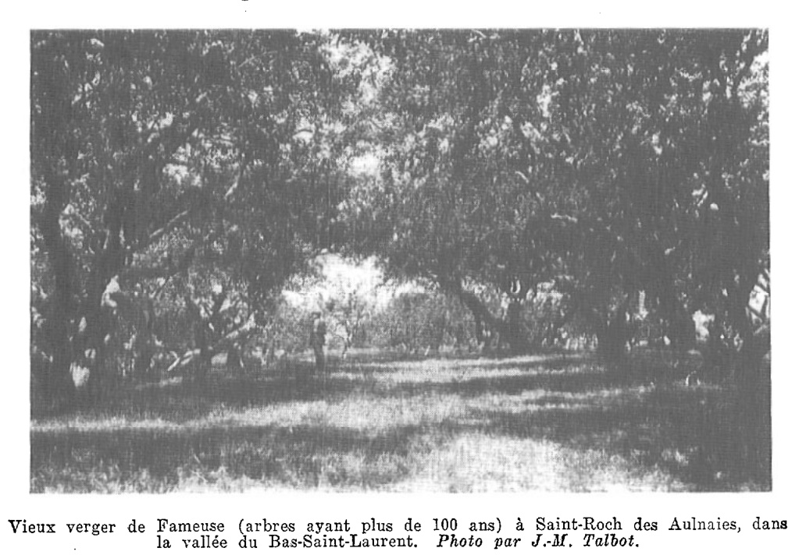
Vieux verger de Fameuse (arbres ayant plus de 100 ans) à Saint-Roch des Aulnaies, dans la vallée du Bas-Saint-Laurent. Photo par J.-M. Talbot.
Près de Saint-Roch des Aulnaies, dans le comté de L'Islet, nous avons examiné plusieurs petits vergers. Le sol sur les ondulations bien égouttées est une argile graveleuse ressemblant un peu à celle de Sillery. Dans certains vergers le sol est plutôt mal égoutté et le sous-sol est légèrement compact. Un verger composé de quelque 300 pommiers de la variété Fameuse qui avaient plus de 100 ans, a été trouvé sur les rives du fleuve Saint-Laurent près de Saint-Roch des Aulnaies. Les arbres avaient parfaitement résisté aux hivers rigoureux et étaient encore en bon état au moment de l'examen. Le sol dans une partie de ce vieux verger est du gravier de grève de Sillery semblable à celui que l'on trouve sur l'Île aux Coudres, tandis que le reste se compose de terre franche de Sillery avec un peu d'argile déposée à la surface du sol. Tout le verger repose sur une assise plate de roches solides, à une profondeur d'environ 3 à 4 pieds.
Les analyses chimiques de ce sol sont présentées au tableau 8. L'argile déposée sur le gravier de Sillery est plus riche en matière organique, en phos-
phore total et en azote total que le gravier sous-jacent de Sillery, mais il y a beaucoup moins de potasse dans l'argile que dans le sous-sol de Sillery. Ceci concorde avec les études précédentes des sols d'argile et des sols typiques de Sillery.
A Sainte-Anne de la Pocatière, les sols des vergers de la Station expérimentale fédérale et du Collège d'Agriculture ont été examinés. Le verger du collège et la plus grande partie du verger de la station expérimentale sont situés dans une large plaine. Le sol de cette terre d'alluvion a une texture lourde, il varie depuis une terre sablo-argileuse à limono-argileuse. Il est très semblable aux argiles de Champlain par la réaction acide, la texture et la couleur. La composition chimique de ce sol, qui est présentée au tableau 8, est très semblable à celle des glaises de Champlain dans le district montérégien. L'égouttement naturel de ces sols lourds n'est pas très bon et un grand nombre de tuyaux de drainage ont été installés pour pourvoir à l'égouttement de l'excès d'eau pendant les saisons humides de l'année. Ceci explique pourquoi les pompiers sont venus relativement bien sur ce sol lourd, naturellement assez mal égoutté. Dans la partie sud du verger de la station expérimentale, l'élévation est plus forte et le sol plus sablonneux et plus acide, ressemblant à la terre sablo-argileuse montérégienne par la texture et la réaction. Sur le sommet des ondulations morainiques au sud du verger, le sol est un podzol pierreux identique à celui que l'on trouve au Cap Saint-Ignace. Ce podzol est très acide et il n'est pas aussi productif que les argiles et les terres franches des terres basses.
Par sa composition chimique ce sol diffère beaucoup de tous les autres sols étudiés dans ce rapport. Il contient des quantités relativement fortes de matière organique et d'azote total, mais il est très faible dans les autres éléments importants comme le calcium, le potassium et le phosphore.
Si ce sol doit être planté en vergers, il faudra employer des traitements et des modes de culture différents pour obtenir des résultats satisfaisants.
A l'est de Sainte-Anne de la Pocatière, les vergers n'ont qu'une importance secondaire; on n'y rencontre que de petits vergers isolés de famille. L'un des plus gros vergers dans ce district, contenant 200 arbres, a été visité à Saint-Pascal, comté de Kamouraska. Les arbres avaient différents âges, à cause des plantations successives, et ils appartenaient à différentes variétés. Le sol est hétérogène ayant été soumis à la glaciation et plus tard à l'action des eaux du fleuve Saint-Laurent. Dans le verger examiné, le sol est sablo-argileux brun rougeâtre reposant sur une glaise bigarrée, compacte, à 4 pieds. La réaction du sol de surface est légèrement acide, mais la glaise a une réaction neutre à légèrement alcaline. Le sol de surface est friable et poreux et le sous-sol présente des symptômes de pauvre égouttement.
ÉTUDE GÉNÉRALE ET RÉSUMÉ
Nous avons présenté dans ce rapport les résultats d'un examen des sols de la province de Québec, qui a duré deux ans. Cet examen n'a été effectué que dans les districts où se cultivent des vergers de rapport et nous avons dû pour cela examiner de petites superficies dans des parties de la province très éloignées l'une de l'autre. En raison de l'éparpillement géographique des sols étudiés et de l'hétérogénéité des matériaux géologiques de formation ainsi que de la différence dans les conditions de climat, nous avons rencontré un grand nombre de types de sols. Comme cet examen a été entrepris pour obtenir des renseignements précis au sujet des sols qui conviennent pour la plantation du pommier, nous avons dû donner une attention toute spéciale à certains facteurs physiques qui, dans des circonstances ordinaires, ne présenteraient qu'une importance secondaire. Par exemple, la texture et l'effet qu'elle exerce sur
l'égouttement paraissent avoir plus d'importance en ce qui concerne les vergers, dans les conditions de climat de la province de Québec, que pour les récoltes de grande culture. Un sol très productif pour le grain et pour les récoltes de foin peut ne pas convenir pour les arbres fruitiers à cause de la présence de conditions physiques peu favorables. Par contre, un sol moins productif, en bon état physique, pourrait faire vivre d'excellents pommiers, à condition d'être bien engraissé et bien cultivé.
Le climat de la province de Québec est rigoureux et il exerce une grande influence sur le développement des types de sols. Cependant, dans les conditions locales, les variations distinctes dans les types de sols sont causées, dans une plus grande mesure, par les matériaux géologiques de formation que par le climat, car les différences dans les conditions de climat ne sont pas très prononcées d'une région à l'autre.
Les sols examinés peuvent, pour la commodité, se classer en deux catégories:
A. Sols sédimentaires et déposés par l'eau.
B. Sols glaciaires et morainiques.
Les sols des premiers groupes se rencontrent sur terre plate de faible élévation, à moins de 250 pieds au-dessus du niveau actuel de la mer. Ils sont distribués sur une grande étendue de la province et formaient autrefois les lits des rivières, des lacs et de la mer de Champlain, qui ont succédé à la période glaciaire.
Les terres argileuses et franches à texture lourde ont généralement une réaction neutre à légèrement acide; il y a un peu de carbonate libre dans le sous-sol. Ces sols ont été classés comme sols riches en chaux. Les sables et les terres sablo-argileuses, qui étaient autrefois des grèves des lacs et de la mer de Champlain, ont une réaction nettement acide et ils n'entrent jamais en effervescence au contact de l'acide. Ces derniers ont été classés comme sols pauvres en chaux. L'analyse a révélé cependant des quantités considérables de calcium dans quelques-uns de ces sols.
Les sols de Champlain sont les plus typiques et les plus répandus des types de sols sédimentaires riches en chaux. Leur texture varie depuis les argiles lourdes aux terres sablo-argileuses; ils ont été inscrits sur la carte comme argile de Champlain, argilo-sableux et sablo-argileux. Chacune de ces phases différentes des sols de Champlain se rencontre dans un certain nombre des districts étudiés. Dans les collines montérégiennes, la terre sablo-argileuse montérégienne ressemble à la terre sablo-argileuse de Champlain des districts de l'ouest. La différence entre ces deux sols n'est pas très grande, elle se compose principalement d'une différence dans la réaction et la teneur en chaux. Les analyses chimiques des sols de Champlain recueillis dans différents districts concordent assez bien. Les proportions de calcium, de potassium et de phosphore ne varient pas beaucoup d'un échantillon à l'autre, et aucun de ces éléments ne se rencontre en quantités remarquablement fortes. Ils paraissent être en meilleur équilibre dans les sols de Champlain que dans la plupart des sols morainiques et cet état est peut-être la cause principale de la productivité de ce type de sol. La matière organique et l'azote total varient beaucoup. Dans les sols mal égouttés la matière organique s'accumule dans la couche de surface et en général l'azote total s'associe étroitement à la matière organique. Le sous-sol de la phase mal égouttée devient plus compact et bigarré et a une structure plus grossière.
Les sols de Champlain sont très fertiles et produisent d'excellentes récoltes, mais ils ne conviennent pas très bien pour la plantation des arbres fruitiers. L'égouttement naturel des sols lourds n'est pas très bon et les pommiers ont en général peu de durée sur ce type de sol. Les sols sablo-argileux de Champlain et de Montmorency conviennent un peu mieux pour les vergers que les sols plus lourds. On trouve cependant de très bons vergers sur les argiles de Champlain qui sont bien drainées artificiellement.
Les terres sablo-argileuses d'Oka et de Châteauguay sont des sols locaux. Elles ressemblent à la terre sablo-argileuse de Champlain, ce sont des sols de transition entre les terres franches de Champlain et les podsols sablonneux.
L'argile sablonneuse de Montmorency, l'argile sablonneuse d'Orléans et la terre sablo-argileuse de Beaupré sont semblables aux sols de Champlain. Elles sont plus minces, cependant, et la pierre à chaux sous-jacente de Trenton et d'Utica affleure souvent à la surface du sol. L'égouttement naturel de ces sols est bien meilleur à cause du fort relief topographique le long des rives du fleuve St-Laurent, à l'est de Québec. Ce facteur est la cause d'une quantité considérable d'érosion et très souvent des affleurements de roches apparaissent en raison de l'érosion du sol au printemps. On trouve de très beaux petits vergers sur ces types de sols, mais la topographie de la terre le long de la côte de Beaupré est telle qu'il est peu probable qu'un développement extensif de la culture des vergers de rapport s'y produise.
Les podsols sablonneux des terres basses sont les plus typiques des sols pauvres en chaux déposés par l'eau; ils se rencontrent dans tous les districts examinés. Le degré de podsolisation de ces sols varie beaucoup. Dans les districts riches en chaux de l'Ouest le podsol sablonneux n'est que légèrement podsolisé. La couche lessivée du profil est mince et la zone d'accumulation peu prononcée. Dans les collines montérégiennes et les districts à l'est de Québec, un profil de podsol plus typique s'est développé. On peut trouver dans la terre vierge une couche nettement lessivée de 2 à 4 pouces d'épaisseur et une couche rouge compacte d'accumulation, mais sur terre cultivée ces couches se distinguent difficilement. Les résultats des analyses chimiques des échantillons de podsols sablonneux font voir que ce sol acide contient des quantités considérables de calcium, mais le phosphore total et la potasse totale sont relativement faibles. La profondeur du sable varie de 3 à 20 pieds et plus. Le sable mince repose généralement sur le limon et l'argile, et ceci cause souvent un mauvais égouttement du sous-sol, spécialement lorsque la topographie est plate. Le podsol sablonneux mal égoutté a un sous-sol bigarré gris et une couche de surface riche en matière organique. L'azote total de la phase mal égouttée est très élevé, tandis que le podsol mal égoutté est relativement faible en matière organique et en azote total.
Les sols de podsols sablonneux ne sont pas très fertiles, spécialement les sables profonds, bien égouttés, des districts à l'est de Québec. On trouve quelques bons vergers dans les podsols sablonneux bien égouttés des districts des côtes montérégiennes. Les arbres sur ce type de sol ont une pousse lente, mais ils sont sains. Le sol, cependant, exige un traitement différent et d'autres engrais que les autres sols de ces districts.
Le deuxième groupe de sols, les sols morainiques glaciaires, se classe en deux catégories distinctes, principalement à cause des différences fondamentales qui existent dans les matériaux géologiques de formation.
Les sols riches en chaux.
Les sols faibles en chaux.
Les terres franches morainiques calcifères sont les sols dominants de la première catégorie. La teneur élevée en chaux soluble dans le grès calcifère, qui est la roche de formation la plus commune, a réglé largement le développement de ces sols. L'abondance de chaux dans les profils du sol sépare les terres franches morainiques calcifères des sols qui se sont développés dans des conditions de climat un peu semblables sur des formations géologiques qui contiennent peu de chaux.
La terre franche morainique calcifère se rencontre communément dans la partie ouest de la province, et elle a été examinée dans les districts d'Oka-St-Joseph, Hemmingford, Châteauguay et St-Rémi. Le sol normal est très uniforme dans tous ces quatre districts et l'on y trouve de nombreuses pierres.
éparpillées sur la surface et dans le profil. C'est une terre franche riche contenant de grosses quantités de matière organique, d'azote total dans la couche de surface et de chaux dans le sous-sol. On y trouve également une abondance de phosphore total et de potasse totale dans le profil.
La phase mal égouttée de ce sol a un sous-sol compact dans lequel la teneur en chaux dépasse souvent 15 pour cent de CaO et forme la substance de cimentation. Dans le district d'Oka-St-Joseph, la phase mal égouttée n'est pas aussi commune que dans les trois autres districts et la compacité du sous-sol n'est pas aussi prononcée que dans le district de Hemmingford. Près de St-Rémi la terre franche calcifère mal égouttée s'étend jusqu'à la terre plate, tandis que dans les autres districts elle est plutôt limitée à la pente inférieure des ondulations morainiques.
Dans la phase graveleuse profonde de la terre franche morainique calcifère, le gravier s'étend sur toute la profondeur du profil. Cette phase est plus commune dans le district d'Oka-St-Joseph que dans les autres districts. Sous bien des rapports le sol ressemble à la terre franche normale, mais il est en général mieux égoutté. Dans le district d'Oka-St-Joseph on trouve souvent le gravier profond des coquillages marins et d'eau douce. Ce sol a été marqué sur la carte comme “phase coquillière” de la terre franche morainique calcifère. La teneur en chaux de cette phase coquillière est beaucoup plus élevée que celle de la terre franche normale, et il y a également plus de phosphore total et de manganèse.
La terre franche morainique calcifère est très fertile. Les vergers viennent très bien sur le sol normal, sur la phase coquillière ainsi que sur la phase graveleuse. Le sol mal égoutté ne convient pas pour la culture du pommier. La forte teneur en chaux, le sous-sol compact gênent la croissance normale des arbres qui souffrent beaucoup des ravages de l'hiver. Le “cœur liégeux”, un trouble physiologique des pommes, a été constaté sur un grand nombre de vergers établis sur sols calcifères.
La haute teneur en chaux des sols calcifères s'oppose à la bonne nutrition des pommiers, mais on peut corriger cet état de choses en fournissant du bore aux arbres. Si ce traitement peut être appliqué économiquement, la grande étendue de cette terre franche morainique calcifère et graveleuse bien égouttée du district d'Oka-Saint-Joseph devrait offrir une bonne occasion pour l'expansion des vergers commerciaux de pommiers.
A la deuxième catégorie de sols glaciaires “pauvres en chaux” appartiennent les graviers de terrasse, les sols de Sillery et les sols des Appalaches. Les graviers de terrasse se compose de dépôts glaciaires qui ont été partiellement triés par l'eau et qui ont formé les premières grèves de gravier de la mer de Champlain, lorsque cette dernière était à un haut niveau. Ces graviers se trouvent généralement à une élévation de 250 à 500 pieds au-dessus du niveau actuel moyen de la mer. Le gravier de terrasse Champlain est le plus commun de ces graviers. On le trouve sur les pentes de chacune des cinq collines montérégiennes et près de Franklin Centre dans le district de Franklin-Hemmingford. Ce type de sol présente une uniformité très frappante dans les différents districts. La grande profondeur de gravier, la porosité subséquente du sol et le bon équilibre des éléments de fertilité le rendent favorable à la culture du pommier. L'adaptation de ce type de sol à cette culture est révélée par le fait que presque toute cette étendue est actuellement plantée en vergers.
Les sols de Sillery dominent sur les îles du fleuve Saint-Laurent et le long de la rive sud du fleuve, à l'est de la ville de Québec. Ils ont été développés, comme leur nom l'indique, sur la formation de Sillery. Le sol normal bien égoutté est une argile graveleuse brun rougeâtre, très uniforme. Le gravier est très anguleux, très friable, et provient de la roche sous-jacente. Ce sol est très acide et présente souvent des traces de podsolisation. Il n'est pas aussi fertile que la terre franche
morainique calcifère et les graviers de terrasse. Les résultats des analyses chimiques montrent qu'il contient de grandes quantités de potasse totale, mais tous les autres constituants sont faibles, surtout le calcium. La phase mal égouttée du sol de Sillery est généralement peu profonde, très bigarrée dans le sous-sol et sa couche de surface est profonde, noire et riche en matière organique. Ce dernier sol n'a pas une grande valeur agricole, et cependant on obtient de bonnes récoltes sur le sol profond et bien égoutté de Sillery. Sur l'Ile d'Orléans et près de Saint-Michel sur la rive sud du fleuve, il se fait une grande culture de fraisiers sur ce type de sol. Sur l'Ile aux Grues presque tout le sol de Sillery est consacré à la culture des pommes de terre et donne une bonne récolte marchande. On trouve des vergers de pommiers sur le même type de sol à Saint-Nicholas, Saint-Michel, Saint-Vallier, Cap Saint-Ignace, sur l'Ile d'Orléans et l'Ile aux Grues. A en juger par les observations qui ont été faites, il semble que la terre gravelo-argileuse de Sillery convient parfaitement pour la culture des pommiers et de grandes étendues de ce type de sol s'offrent encore pour le développement commercial de cette culture. Il faudrait appliquer les engrais nécessaires, adopter de bonnes pratiques d'exploitation et installer des brise-vent et fournir de la protection contre la neige.
La terre franche de Brome est le type principal des sols Appalaches qui a été trouvé dans cette étude géologique. Ce sol est très acide et des traces de podsolisation peuvent parfois y être trouvées. La couche de surface est riche en matière organique et en azote total. Le sous-sol est très poreux et friable jusqu'à une profondeur de deux ou trois pieds, puis il devient très dur et compact. Dans la “phase mince”, l'état compact se rapproche de la surface et la quantité d'azote augmente dans la couche de surface. Le sous-sol compact restreint la descente verticale de l'eau et la pénétration des racines. Pendant les saisons humides de l'année, l'eau s'infiltre sur les pentes des collines, par-dessus cette couche compacte. Le drainage au moyen de tuyaux souterrains faciliterait beaucoup la culture du pommier sur la phase mince de la terre de Brome. La terre gravelo-argileuse de Brome ne présente pas cet état compact du sous-sol jusqu'à une profondeur de 4 pieds et plus. Ce sol est très semblable à la terre gravelo-argileuse montérégienne et il est bien adapté à la culture du pommier.
ENGRAIS CHIMIQUES POUR LES SOLS DU QUÉBEC
Par
M. B. DAVIS ET F. S. BROWNE
L'étude des résultats de l'examen des sols du Québec, en regard des données expérimentales notées dans les essais d'engrais chimiques, nous permet de faire quelques recommandations assez précises au sujet du choix des engrais. Il est à noter cependant que les règles approximatives s'appliquant à la fertilisation des vergers ne doivent pas toujours être suivies aveuglément même quand elles se basent sur la nature du sol et les résultats des essais. Il faut connaître ses arbres, l'action des engrais sur ces arbres et les symptômes de cette action, et régler les applications d'engrais en conséquence.
Le premier point à noter, c'est qu'il est tout aussi indispensable que le sol renferme une provision suffisante d'éléments minéraux qu'une provision d'azote. La brûlure des feuilles, qui est caractérisée par la brunissure des marges sur les pointes des feuilles, indique soit un manque de potasse soit un excès d'azote. Les vergers de la région de Frelighsburg fournissent un exemple de l'utilité de ces symptômes. Le sol de cette région est riche en potasse, mais comme il est aussi riche en azote à l'heure actuelle, l'emploi prolongé d'engrais azotés sans une proportion suffisante de potasse n'est pas à recommander.
Parmi les différents types de sols dont il est question dans ces pages, des essais d'engrais chimiques pour vergers ont déjà été entrepris sur trois d'entre eux, savoir les sols montérégiens, ceux de Châteauguay et Saint-Rémi, et de Freleighsburg. Les recherches sur ce dernier type de sol n'ont pas encore été conduites assez longtemps pour que l'on puisse en tirer des conclusions, mais il a été obtenu des résultats intéressants sur les deux premiers types. En outre, les notes sur l'état des arbres et des fruits dans les autres régions nous permettent d'apprécier un degré d'exactitude raisonnable quelques-uns des besoins en engrais.
La fertilité du sol et les applications d'engrais chimiques peuvent influencer plusieurs choses; les deux principaux indices servant habituellement de guide sont la vigueur et la productivité de l'arbre, mais il y a aussi l'état des fruits sur l'arbre et leur qualité de garde, c'est-à-dire la façon dont ils se conservent après la cueillette. Un fait à noter, c'est que jusqu'ici les sols montérégiens et les grès de Potsdam autour de Franklin Centre et de Covey Hill n'ont produit que peu ou point de pommes liégeuses, tandis que l'on a enregistré plusieurs graves explosions de ce désordre dans les sols riches en chaux de Hemmingford, Oka, Saint-Joseph du Lac, et dans quelques localités du district de Châteauguay.
Les essais d'engrais chimiques effectués sur le gravier de terrasse Champlain dans la région d'Abbotsford ont indiqué que les sols du district des collines montérégiennes conviennent bien pour la culture du pommier, mais qu'il est assez possible de bouleverser l'équilibre nutritif, ainsi que l'indique l'effet exercé sur la qualité de garde des fruits par les engrais appliqués. Par exemple, lorsque les vergers étaient couverts de gazon sans paillis des applications d'azote seul ont amélioré la qualité de garde, par comparaison aux parcelles témoins. Sur le verger en gazon, des applications de nitrate de soude à raison de 6 livres par arbre et de superphosphate à raison de 5 livres par arbre, ont grandement détérioré la qualité de garde des fruits, mais lorsque la combinaison de nitrate de soude et de phosphore était appliquée avec un paillis, cette qualité était bien améliorée. Il semble donc qu'il existe sur ces sols un rapport important entre l'azote et le phosphore; et c'est là un fait dont il faut bien tenir compte dans les recommandations d'engrais pour cette région.
À Châteauguay, les parcelles témoins recouvertes d'un gazon d'herbe sont celles qui ont donné les fruits de meilleure garde. L'addition d'azote et de superphosphate n'a nui que peu ou point à la qualité de garde tandis que l'addition de paillis au traitement qui précède a provoqué une détérioration marquée dans cette qualité. Il semble donc qu'il existe une forte différence au point de vue du besoin en engrais chimiques entre les sols de Châteauguay et ceux des collines montérégiennes. Évidemment, les sols montérégiens peuvent s'accommoder de quantités un peu plus fortes d'azote.
RECOMMANDATIONS
Tenant compte des données qui précèdent, les recommandations suivantes devraient être utiles :
Les sols riches en chaux, comme dans la région d'Oka, de Saint-Joseph-du-Lac, d'Hemmingford et de Châteauguay, n'ont pas besoin d'autant d'azote que les autres régions à vergers du Québec. En outre, comme le sol a une réaction de neutre à alcaline, il faut éviter de se servir d'engrais azotés alcalins, car une alcalinité excessive peut favoriser le développement de plusieurs troubles physiologiques des pommes. Il s'ensuit donc que l'azote, quand on l'emploie, devrait être appliqué avec un véhicule acide, le sulfate d'ammoniaque est l'engrais de ce genre qui est le plus employé. Les besoins en potasse sont naturellement un peu plus élevés que dans les autres sols, principalement à cause de l'abondance d'azote qui s'y trouve généralement. Il semble donc qu'il serait utile, sur ce type
de sol, d'appliquer tous les ans du muriate de potasse à raison d'environ 2 livres par arbre et du superphosphate à raison de 1 livre, pour un arbre dont le diamètre du tronc est d'environ 6 pouces. On peut ensuite appliquer l'azote suivant que la couleur du feuillage et la pousse terminale paraissent l'exiger. Dans bien des cas, lorsqu'on emploie un paillis, on pourra constater qu'il ne faut que très peu d'azote, peut-être même seulement à intervalles de deux ou trois ans. Si l'on n'emploie pas de paillis, un engrais 4-8-10 paraît être utile; on pourra, bien entendu, y ajouter de l'azote au besoin.
Pour les sols pauvres en chaux, comme ceux des collines montérégiennes, du secteur ouest de Franklin Centre et des régions de Frelighsburg-Dunham, l'engrais 9-5-7 est le meilleur, quand le paillis n'est pas employé. Lorsqu'on emploie de grandes quantités de paillis, l'engrais 4-8-10 semblerait utile, car la plupart des matériaux à paillis sont relativement riches en azote et en potasse mais tout à fait pauvres en acide phosphorique. Il ne faut pas oublier, cependant, qu'il peut être nécessaire de les compléter parfois par un apport d'azote. Par exemple, dans le bulletin de Shutt, Fumier et Engrais chimiques, N° 145 N.S., la valeur fertilisante de la paille est la suivante:
Azote
0.5%
Acide phosphorique
0.2%
Potasse
1.0%
Dans le livre de Henry "Feeds & Feeding", les renseignements suivants donnés:
N
P₂O₅
K
Mil (fléole des prés)
2.38
0.54
2.23
Luzerne
0.99
0.31
1.36
D'après ces chiffres, lorsque le paillis est apporté du dehors, il semble qu'il serait nécessaire d'ajouter un peu d'acide phosphorique, et comme l'engrais 4-8-10 est un engrais de mélange régulier et qu'il est facile de se le procurer à prix satisfaisant, il y aurait avantage à l'employer et à le compléter, si cela est nécessaire, par des applications supplémentaires d'azote. Tout engrais azoté peut être employé sur ces sols pauvres en chaux, mais d'après les expériences faites à Abbotsford, l'emploi continu d'un engrais alcalin pourrait être nuisible à la longue.
BIBLIOGRAPHIE
McKibbin, R. R. et Stobbe, P. C. "Organic Soils of Southwestern Quebec" (Sols organiques du sud-ouest du Québec), Dominion du Canada, Ministère de l'Agriculture, publication 499, 1936.
McKibbin, R. R. et Pugsley, L. I. "Les sols des cantons de l'Est du Québec", Bulletin technique N° 6 du collège Macdonald, 1930.
McKibbin, R. R. "Climate and Soil Leaching Variations in Quebec", Sci. Agric. 13; 413-427, mars 1933.
"Excursions dans les environs de Montréal et d'Ottawa", guide N° 3, Commission géologique, Ministère des Mines, Canada, 1913.